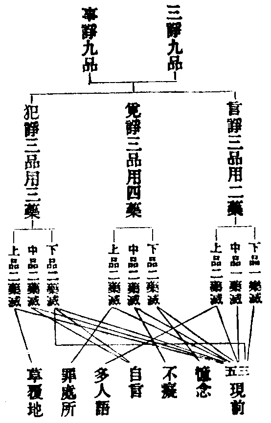

卍新纂大日本續藏經 第40冊
No.714 四分律含注戒本疏行宗記(第3卷-第4卷) (2卷)
【唐 道宣撰 宋 元照述】
第 4 卷
四分律含注戒本疏行宗記四上之一
【疏】四分律含注戒本疏卷第四(上從九十初終戒本末)。
【疏】終南太一山沙門釋 道宣 撰。
【疏】就九十中先以義求後隨相解。
【疏】初別料簡七門分之一配三業二約自他三明遮性四論持犯五簡僧尼六關諸部七辨任運。
【疏】初配三業者九十一篇三十一戒在身成犯二十一戒在語成犯三十八戒通於身語。
【疏】就初三十一戒中何者是邪作偈記之法事單歷女未強脫覆作屏施別過非殘不外坐屏露四三軍酒水擊半白二隨打搏宮。
次科身犯中法事單歷者此句通指諸偈以雙持雙犯法事兼有此下偈括不可雙標故女(與女宿)未(與未受宿)強(強敷臥具)脫(坐脫脚床)覆(覆屋過三)作(與尼作衣)屏(與尼屏坐)施(施食處過受)別(別眾)過(過三鉢食)非(非時食)殘(殘宿食)不(不受食)外(與外道食)坐(食家強坐)屏(屏與女坐)露(與女露坐)四(過四月受藥)三軍(一往觀軍陳二軍中過限三觀軍合戰)酒(飲酒)水(水中戲)擊(擊櫪他)半(半月洗浴)白(白色三衣)二隨(一隨舉比丘二隨擯沙彌)打(打比丘)搏(搏比丘)宮(突入王宮)。
【疏】有二十一戒口業犯而非身故偈記言故毀兩同說道女異嫌尼譏法恐怖疑發起欲拒毗同欲無根謗二十一語持。
次語犯中初科故(故妄語)毀(毀些)兩(兩舌)同(與未具人同誦)說(說麤罪)道(實道得)女(與女說法過限)異(妄作異語)嫌(嫌罵知事)尼(輒教尼)譏(譏教尼人)法(與尼說法至暮)恐怖(怖比丘)疑(疑惱比丘)發起(發舉四諍)欲(說欲不障道)拒(拒勸學)毗(毀毗尼)同(同羯磨後悔)欲(與欲已後悔)無根謗(僧殘法謗)二下一句總結。
【疏】昔云小年與受是口業犯今解不爾律結和尚不是戒師當時和尚默坐眾中未曾有語故知解非律結僧吉師提者此在自身作業假他語也如後為道。
次斥非中初牒古解今下正斥初約義斥非律下示今所判指如後者文見次科。
【疏】三就通身語又分為二有三十一戒語家作業共身心犯後有七戒語家止業共身心犯。
【疏】就前分三。
【疏】初有十九戒自語作業假他身犯偈云掘壞牽用勸然藏飲殺驅與衣捉落寶高牀七戒俱。
三通身語中初段十九戒中初科掘(掘地)壞(壞生)牽(牽他出房)用(用蟲水)勸(勸足食)然(露地然火)藏(藏他衣鉢)飲(飲蟲水)殺(殺畜生)驅(驅他出聚)與衣(與尼衣)捉落寶(捉寶因拾遺故)高牀七戒俱(一高脚二兜羅緜褥三牙角針筒四過量坐具五覆瘡衣六雨浴衣七與佛衣等俱謂同也)。
【疏】此一段戒若論自業唯身心犯屬初門中今據教人成自犯義如前教人掘地言了未結必假前身掘地壞生教者方犯故云自語作業假他身也不同妄語無別事故言了即結餘者例知。
簡辨中由此諸戒自作教他二俱成犯故涉前後初明屬前今下次明屬後初引掘壞以明不下簡異單語餘下指例即餘諸戒也。
【疏】若爾如誑他言了未結要待前聞聞即身業答今取運為造作別名身業不取聞知通名身業。
釋難中以妄語成犯事同假他故躡為難答中造作事異如掘壞等名身家別業五根觸對事用未彰名身通業。
【疏】中有七戒自語作業假自他身如與期行要先共期後身同路越界方犯偈言屏露二處敷四期索美食。
次七戒中初示業相後以偈束屏露二敷亦約先語教人前人為敷我身捨去四期(一期尼行二尼同船三期賊行四期女行)索美食先以語索前人施與我食方犯。
【疏】後有五戒自身作業假他口成如噉歎食假尼口歎身業咽犯餘者例同偈言讚諫及二聽與年不滿五且如違諫亦有言拒今就一相知別有義。
後五戒中初示相次偈括贊(食尼讚食他歎我食故)諫(不受諫他諫我拒故)二聽(一屏聽四諍二不攝耳聽戒並由他說故)與年不滿(和尚默坐犯假他羯磨成)且下別簡諫戒若取言拒應在語業今明不受多就身論故云一相。
【疏】大分第二次有七戒語家止業共身心犯偈言覆背足非時家真不與欲。
第二語止七戒並有教法由口不作身違成犯故也偈中覆(覆麤罪)背(展轉食)足(足食)非時(非時入聚)家(食前食後至他家)真(真實施)不與欲(不與欲起去)。
【疏】覆藏一戒諸解不定伽母云意業成犯此就本為言也善見云身心犯者由見聞他犯懷覆不說此通口業未可取分今云聞過言陳本自無罪止口不露意懷覆故身為過本故兩取之。
別釋中先引諸解伽母就意意即是通犯相難顯不可全用見論身心通別齊舉見聞是身懷覆即心據云不說即是口止故通口業但文不標顯故未可分今下判定即通三業捨通就別指歸身語結屬當科故云兩取意在其中不言可鑒。
【疏】次解第二自作教人約犯差別。
【疏】有十二戒教人同犯餘即是輕偈云掘壞牽用勸恐然藏殺飲無根捉落寶自作教他同此十二戒但使教人縱不為己作即同犯。
【疏】更有十戒教人不為己無問心之輕重但得小罪其相如何偈云屏露與尼衣高牀下七戒此之十戒教比丘作若為己者能教犯提受使犯吉若不為己受使犯提能教犯吉。
次十戒中互通輕重所以前標不為己者且欲對上示不同故其相下列示屏露即二敷也此下正明能所互犯輕重。
【疏】約義以求統通九十義猶不盡如有打搏自他同惱何不同犯豈唯小謗飲蟲水等但是文無義決則齊何得不有故知未盡。
義求中上是約文文則局數今此據義義求則通故云不盡文舉打搏餘可自尋。
【疏】次解第三遮性義者。
【疏】有三十戒性與理違悔犯事淨集業未遣要傾我倒苦根方止餘六十戒但有事違不無譏醜故違教網。
三明遮性通簡中初明性戒性通三性善惡無記今此局惡故云違理於此須明化制兩教犯懺不同犯化違理毀制違事比丘犯性理事俱違依律行悔但翻違事故云事淨違理猶存故云集業未遣若準懺篇修三種理觀亦能破業今從究竟而論故云要傾我倒即須破惑入聖已去惑能起業業能生報故曰苦根餘下次明遮戒此單犯制於理無違但依律懺以事翻事無不淨矣。
【疏】廣解遮性如上已陳今直數之知異便止性惡偈言故毀兩說異嫌強牽用譏諫驅恐覆疑畜飲發說隨隨拒毀同欲不屏打搏無。
次括示中初指廣如上陳者即僧殘義門今下正示偈中下說(說欲不障)同(同羯磨後悔)欲(與欲後悔)不(不與欲去)屏(屏聽四諍)無(無根僧殘謗)。
【疏】次解第四持犯方軌。
【疏】就有十二戒具二持犯何者是邪例有七階初有羯磨故得說罪教尼二受功德衣故得背請別食三有囑法故得非時前後入他家四作餘食故無足食勸足五作口法故七日盡形無殘宿不受上列五階十罪也十一淨施問主著十二僧事與欲起。
四明持犯雙持中初科諸戒事別法同故合為七問德衣開五利何獨背別得為作持答前篇長離自有淨施羯磨此中入聚別有白法此三長開德衣時短捨短從長以明雙持背別二戒無別開法故取德衣為作持也若爾前三得用德衣為作持否答若用德衣則廢本法故知三戒並兼兩法就本從長故所不列。
【疏】此等諸戒並有教開順作無違名作持止口不作名止犯身違事合名作犯此止作兩犯體一名異古人云止法止事名為止持故知二持名體各別。
次科古解中前列三行欲顯同是造作所成後獨出止持欲明守戒非造作故兩犯體一名異者彼謂作犯義兼止犯止作名殊業思體一無別二犯前亦古義後方標者欲彰止持最為非故止法止事者彼謂法事都無所為名止持行作持是運造止持即不為故名體別也問如昔所明義有何失答彼但解止都不識持持既成善善即是業業不自有必假行成行即行心無非造作若都不作但是無記焉能成業故知古解於理大乖是以疏家篇篇提破講學臨此須善思之。
【疏】今解不然如上廣列持犯約教隨戒彰相具二持犯如有羯磨說麤罪是作持不違教說名止持無教輙說是作犯抑教不求名止犯據此為相可不明邪餘可例知。
今解中四行並據造作為言指如上者即僧殘中持犯約教者示其源也隨戒彰相者雙單別也如下略示名體二持二犯一一皆別舉一例諸自餘準說抑謂抑塞不求即不乞羯磨。
明懺中上既異古二犯體別須明行懺開合之相初明本犯二下次示止犯言二犯者謂雙犯中止犯罪也或可悔法中不收此罪既是別制故須別懺言別制者以更重增無知罪故。
【疏】如昔解云七日等藥加二受竟防無非時名作持今解不然七日無法非時得食本無限約由作口法過限故有非時此乃口生非時何得口防非時故知無也。
斥七日中初引古解七日等者等取盡形彼謂加口法已非時得服故次示今解又二初明非時本開暫服則知口法不防非時由下次明過限能生非時則知口法非是能防故知無者謂無防義也。
【疏】覆藏昔解為作持亦非義也頗有順教覆得說無罪邪如非時入村依教作與本入村時無別故說為作持。
斥覆藏中初示非彼謂發露即是作持頗下反詰若許覆藏說而無罪可名作持然無此理故不可立如下引前比顯前十二戒若本無法則成於犯由開作法故名為持覆藏不爾相比可知。
【疏】問教人掘地開知淨語豈非作持答上之十二順教身作故號作持知淨語者但開教人無有自作不名作持。
釋妨中知淨開法相似作持故須簡別答文易解。
次單持中初明二戒作持止犯由不露不聽而成犯故問此明覆藏與古何異答古從法說判在雙持今就事論止在單攝語同義別文中自明餘下次指餘戒止持作犯可知。
【疏】作便有犯作持作犯上篇廣張今明止犯止持。
【疏】言止持者謂佛制教令學行之我依修學於境無犯然根機利鈍不可齊準至於萬境由迷疑網故以諸九定品優劣且分三位。
止持標敘中初示立教之源我下明為學之本然下生起品位言諸九者據通為言若法若事不出可學不可學二九句法就戒別論雙持犯者法事兩別則有四九單法單事但有二九止犯加八唯收不學教行之罪言優劣者持門則識優疑次不識最劣犯門反之。
【疏】上品一句識法識犯如德衣加受功用須知名識法也如有違越或吉或提開合衣藥定罪多少名識犯也餘相例解不能具出由本戒無失復不愚學識達皎然名為上品持律。
上品中初標句如德衣下舉前背別開法委釋其相(有改作得衣乃將白色三衣加法以釋且白色不得加受又非雙持)言加受者謂作羯磨人別三受功用須知者鈔云能感多衣衣無敗壞又云以眾僧同受此衣便招五利功德如有違越者謂受德衣有多制法一應時節須安居竟二簡衣體製造合法三簡受人唯須當界前安居具三衣人四簡持人須具五德等一事乖法受則不成既不成受妄開背別一一戒下各有提吉之罪重輕不定故云或也開合衣藥謂背請戒或單衣食請為開或兼衣食請為合有背不背如後自明定罪多少謂二戒下有方便根本重輕等相亦如後說餘下指十一戒由下結位。
【疏】中位有四初識法疑犯二識法不識犯三疑法識犯四不識法識犯識同前解言疑法者謂受德衣用法有四疑一二三不能通決言不識法者迷昏不學任物牽行是非由他自無尺寸於犯疑闇例此可知然於一事由帶一識故判以為中品持律。
中品分三初列句識同下牒解有三初識指前疑中言四法者一和僧單白法二差持衣人白二法三正受衣法四出德衣單白法不識中任物牽行如盲人也自無尺寸不能度量也學者明教教即目尺有目則能見險夷有尺則不迷長短後生聞此猶不省耶於下次例迷犯謂於犯上有疑不識準上釋之闇即不識然下三結位一事合云一法或可事名是通存亦無失。
【疏】下品四句初疑法疑犯二疑法不識犯三不識法疑犯四法犯俱不識此全昏學無境有識故判以為下品持律。
下品列句結位可知。
【疏】問既愚不學如何名持答非犯本戒名為止持但於教相止心修學望於過境帶不學迷。
釋疑中非犯本戒謂望根本無犯名持不學無知枝條是犯又應問曰枝條有犯豈合名持答罪歸教行止犯所收持門但據根本淨耳。
【疏】上品明人故無罪失中品有四各帶迷疑即有八罪罪名如上下位四句句別四罪迷於法犯具不學迷即十六罪亦如上解。
示罪中兩指如上即前諸篇上品無罪中品四句不學四吉無知二疑吉二不識提共八罪也下品不學八吉無知四疑吉四不識提即十六罪此門總二十四罪十八吉六提也。
【疏】次解止犯九句謂於教行明昧修學人根不同得為九句有立八句者今解翻解明止犯唯八不得立九既迷教行無法犯兩識也翻修明止犯託相具九如九十中不作教法輙行輙食輙語輙取望不作法名止隨作即違名犯。
次明止犯敘立中初標敘立意有下次示古解古師八句除識法識犯唯收不學止犯今師八九雙立則收兩種止犯今下後出正解翻解即不學無知罪所謂教行止犯也翻修即諸作持戒相翻罪所謂事法止犯也翻解中初定句既下明無下品之意約迷論犯識則非迷若爾後九句中何得存之答彼有根本故不同也翻修中初定句言託相者即諸戒相如下舉戒以示四輒者總前十二戒輙行有三(二入村不與欲)輙食六(背別二足殘宿不受)輙語二(說罪教尼)輙取一(不問主)隨作謂造事即違謂違法此示二犯同時不妨體別。
【疏】然識教相無有愚迷此下位一句中品四句如上所列各有二罪故合八也上位有四初不識法不識犯二不識法疑犯三疑法不識犯四法犯俱疑也句各四罪兼於學迷故十六也。
【疏】犯門解義罪多為上翻持中可以知也順持解犯何為不得恐多誦文自昏覺慧故倒動之心若明了亂亦無苦如鳥群飛自分牝牡也。
明倒中初正明翻持中者持門解義無罪為上又復犯門列句從重至輕故上品以二不識為初句與持相反對上可知順下次出倒列之意牝牡即雌雄。
【疏】次解第五僧尼不同。
【疏】九十戒中六十九戒僧尼同犯故尼律中單列戒本辨相同僧文不繁也。
第五僧尼同犯中初示數尼有一百七十八提今且約僧數對明同異故下引證尼律即尼戒本同僧犯者緣起廣解例皆略之為省文故。
【疏】有二十一戒與尼不同有三種例。
【疏】初有無不同有三謂輙教誡尼說法至暮譏訶教誡尼非師位次第即無。
次明不同初有無中此三僧中相因而制尼是下位無教僧義後二因無故云次第無也。
【疏】就中輕重不同有十三戒偈言作衣持屏坐三期受贊食勸足美牙角過量覆三衣論其罪相至文當解。
次輕重中作衣(與尼作衣)持(持衣與尼有云兜羅緜者非彼是同犯故)屏坐(與尼屏坐)三期(一期尼行二期同船三期女行)受贊食(食尼贊食)勸足(可知)美(索美食疏云此吉羅者結不同罪實犯提舍)牙角(針簡)過量(尼師壇)覆(覆瘡衣)三衣(佛衣等量)已上並僧提尼吉。
【疏】後有五戒犯同緣異偈云背請足外道小年雨浴衣皆謂犯罪即齊開緣有異故尼律中別立戒本至文更出。
三緣異中背請足食下戒本中並云尼吉疏云作不同戒耳尼中二戒合制故戒本云先受請若足食已後食者提(此謂離合異)外道者尼中白衣男子亦犯僧則開之彼戒本云自手持食與白衣外道者提(此通局異)小年者尼中十八童女增二年學法僧則不爾戒本云不與二歲學戒滿二十便與受具提(此即有無不同)雨浴衣過量雖同用則有別僧開夏月尼聽常用(開用長短不同)。
【疏】敢依律例更有義求如牽出房春冬僧尼同犯若是夏房尼提僧吉二毀呰中尼通兩眾僧即輕重三覆藏中僧罪二階尼即三品有此諸異何得不知。
義求中前是據文此出自見故云敢依律例即上三別牽即緣異毀即輕重覆即有無牽出中僧有三時分房夏房入己定不須避上座牽稀故輕尼提者尼律云安居中受安居已乃至隨作方便出門一一提(應是女人報弱依處須定牽出惱重故也)毀呰中尼毀本眾及僧並提故云通兩眾僧則同類提四眾吉故云輕重覆藏僧覆上二篇提下三吉故云二階尼加一夷故云三品有下結告。
【疏】次解第六諸部不同。
【疏】十誦九十一墮無此不受諫戒別立不敬說法人戒說戒時輕僧浪語戒似此觸惱而彼自有不隨問答戒。
六諸部中若論大數解脫鼻奈與四分同十誦與五分同僧祇獨異初十誦無一有二異浪語謂謔浪也似下簡辨不隨問答即是觸惱明知浪語別自立耳。
【疏】五分九十一墮中無此不受諫用蟲水飲蟲水合為一戒別立入尼寺輙說法二輕三師三迴僧物與別人。
【疏】僧祇九十二墮中無此不受諫恐怖二戒別立為尼說法迴僧物與別人不捨淨三衣輕眾僧四戒又離餘語別立觸惱戒。
僧祇中無二有四別上二同前五分不捨淨者彼律凡物說淨已欲取用者須作捨法云此衣淨施與某甲某甲於我不計意今還捨不捨作三衣提入塔僧用吉又離餘語者尋彼戒本及以廣律大同四分止是一戒若云離者不合大數則應九十三也(有本因改為三誤也)此意末詳以俟來者。
【疏】解脫九十墮無此餘語與尼屏坐共羯磨後悔三戒別有在尼寺輙說法迴僧物與別人不敬三戒也。
解脫有三別同前五分。
【疏】鼻奈耶九十中有五不同因六群共十七群諍故立戒本瞋恚者提六群撓擾故結戒云若擊動使瞋者提因儉請一二人多往惱亂戒本云不請強去者提下開僧事病及作衣若比丘先至請家弄小兒者提高聲亂人者提。
鼻奈五戒全異諸部在文可見撓奴巧反亦優亂也前四名殊實唯六別一不敬說法(十誦)二輕僧(十誦僧祇)三入尼寺說法(五分僧祇解脫)四輕師(五分解脫)五迴僧物與別人(五分僧祇解脫)六不捨淨(僧祇)。
結略中初明列意豈下示未盡謂前所出且據見者律論浩博疑有所遺故云更有。
【疏】次解第七沙彌任運義如初篇即上第二教人門中二十二戒未受令作受已犯者三性之中任運感業。
七任運中初指義即下配戒未下示相羯磨未竟事成但吉法終緣辨罪戒俱成小大雖殊因果不別。
【疏】若依光師初作義疏九條想料當時未必而別據今託相不無此義。
【疏】初從妄語至壞神村有十一戒明守口意攝身莫犯善調三業行二從異語惱僧下盡覆屋過量有九戒明善將人心隨護眾意不相撓行三從輙教誡尼至與女同行來十戒明遠避嫌疑離染淨行四從施一食下至四月請來有十七戒明內資節量少欲知足行五從觀軍陣下至三染衣色來十三戒繫意住緣離逸修道無著行六從故斷畜生下至與賊同行來有七戒明常行遠離修慈愍物行七從說欲非障道下至不攝耳聽來有六戒明深心信解敬須教法行八從同法後悔至無根謗來有七戒明同住安樂詳和無二相遵奉行九從突入王宮門下訖篇末有十戒明衣服外儀節量謹攝無違教行。
正引中然此九行一一行中各攝諸戒且約大判未必盡然逐段對文尋之可見。
【律】四分律比丘含注戒本(中)。
【律】諸大德是九十波逸提法半月半月說戒經中來。
【律】初故妄語戒。
【疏】故妄語戒第一。
【疏】言制意者出家之士言即稱實寧喪身命許無虗謬今違心背想調誑於人令他虗解自失善利過深惱重故所以制。
第一制意中初敘所應為寧喪身命由是性業宜急護故許猶使也今下次敘過相以彰須制。
釋名中口是造具心即業本欲彰成相所以兩標。
【疏】問故誑為重戲即犯輕何故藏物二俱犯墮答妄語非惱重約情故結墮戲便結吉罪論藏惱境深望藏有輕重望失情惱一是故俱結墮。
問中謂藏他衣鉢故戲一等與妄不同故問釋之答中五言為句妄語約情別藏物據惱同問前敘妄語而云惱重今言非者答前取誑他是重此對藏物猶輕。
【疏】六緣成犯一是人類二作人想三違想說四自知違想五言了六前人解。
列緣有六不出心境言相共成妄業。
【疏】就語四業皆是正罪至於對境即有輕重。
總辨中標云是正罪者七支性業故對境輕重者謂前境有別過亦差降次科可見。
妄語中初示犯言隨人者不簡境也由下出所以是本妄者謂從根本我倒而起順惑增生故難斷也立教稱業故云重制。
【疏】不同毀兩即有輕重若是同類受惱情重能礙布薩故得提罪餘之六眾設有毀破情微諍薄不礙於僧故犯吉罪。
毀兩中初二句反前若下正示初明境重礙布薩者眾法貴和違惱多諍且舉布薩統諸羯磨餘下次明境輕毀即毀呰破即兩舌壞二邊故。
【疏】綺語一業掉戲壞心過非乖越未得僧制通皆小罪成實云口之三業或時離合綺語一業必不相離如多論中可尋鈔也。
綺語中初明輕重掉是心蓋故云壞心對僧白法境重故提若對別人或對僧未白並境輕故吉成論下示離合令尋鈔者彼以三業離合作句不入綺語故知餘三通離合綺語一向合也。
【註】佛在釋翅瘦釋子象力善能談論與外道論議不如時便反前語若僧中問復違反語梵志譏無正法比丘舉過白佛因制此戒。
【疏】就戒緣中因論善法便行妄誑以為因起況餘雜事而得成信五分亦云我實知非耻墮負處是何言也佛制戒者為止我倒今反助我重加妄習何由脫免。
戒緣中初牒釋特舉論法以況餘事五分亦即象力對僧之語是何言者疏家躡責以訓後來佛下敘制勸持反助我者即順惑也何由脫免者無出期也。
【律】若比丘知。
【註】謂見聞觸知及不見知八種見者眼識能見乃至意識能知不見者除眼識餘五識是如是類反也。
【疏】戒本四句。
【疏】一人。
【疏】二知注解八種是正語境先具解之違即成妄見者眼識能見此律制義識見非根不同他部即以此見為本若諸根中所得塵境以之為見皆是妄語乃至意識能知例此可解不見者除眼識餘五識是若眼見之塵語他不見即是妄語如是類反此一句中具含八妄如上例解。
戒本次句中初通示注意見者下次牒解又二初釋有四境但釋見根餘三例準先點兩宗不同本宗識能生見多宗根能生見故云不同上約直爾相反如見言不見等即以下次約六根互違謂隨舉一根為本而說餘塵為妄如聞觸知而言見等不見下次釋無四境除眼識餘五識者釋成不見也注文及疏略舉見根合云不聞者除耳識餘五識是乃至不知亦爾若眼下後釋總結先示初句相反之相餘七準知如是下正點結文上出八相且列語境此句總反方成妄語故云含八也問根塵有六何獨列四答觸中通含鼻舌身三則具六矣就別相翻成十二妄。
【律】而妄語者。
【疏】三妄語者正是業相。
第三句點文可解。
【註】若境界是見聞觸知若想若疑便言不見聞觸知波逸提乃至不見聞等亦類上也若本作妄語念及妄時不億是妄語者吉羅若前後不億正妄語時知者波逸提若所見異所忍異所欲異所觸異所想異所心異如此諸事皆是妄語說戒時乃至三問憶念罪不說突吉羅。
【疏】注解中從初至逸提來於六塵中行妄之相二若所見異下行心思度違反而說約意地也。
釋注總分中問前段意根行妄與後行心何別答約根則有無相反在行則心語互違故不同也問注中八妄如何取別答前四以有為無後四以無為有心語相反故成妄業。
【疏】就前又二初約八境違心而說二本作妄語下前後方便具闕之義。
對六塵中初段如上二中方便具闕者律具四句初本作是念我當妄語(初方便吉)妄語時知是妄語(中根本提)妄語已知是妄語(後方便吉)二初念中知後不億(吉提)三初不念中知後知(吉提)四初不念中知後不億(一提)律文四句並犯根本注中正妄吉者準義結之。
【疏】就後違心中所見異者定行心中見諸惡像言見好相也及被人問答他異本所見故曰所見異也所忍異者納違安苦名之為忍語他樂受亦可同作羯磨不忍而言忍也所欲異者財色經求名之為欲答異於本云樂正法也所觸異者得冷云熱也所想異者怨想言親也所心異者緣此說彼也。
次違心中初科六節初所見中定行者定謂禪定行即事亂次所忍中兩釋初約三受釋違情苦受順情樂受不苦不樂名捨受文明二受義兼捨受納即領納安謂安存亦可下次約同法釋若口不言即同默妄問律中心乖相順得成眾法成默妄否答善眾可說不說成妄惡人成難默亦無過如僧祇作念失火燒舍等三所欲中欲謂希須文舉財色義通五欲樂正法者假託勝事以飾己非人多此患學者須慎餘三在文可解。
【疏】所以約心多列相者明妄者多須細張網目不可輙動動即入來也。
【律】波逸提。
【註】若說不了吉羅尼同犯三眾吉羅不犯者不見言不見乃至知言知等八種若意有見想便說者不犯。
【疏】四波逸提下結罪相中說不了吉者自說不了前人妄解皆輕也下開通中初列八種反上成持若意見下反上六緣所得也餘相如鈔。
四結罪中初釋犯輕了即明了次釋不犯反前可見下指鈔者疏附於文理不可廣鈔明行事備列時須可自尋之此更不引。
【律】二行罵戒。
【疏】行罵戒二。
【疏】為人士法宜出善言互相贊美令彼心悅勇進修道反以鄙語形呰前人令他慚耻廢修正業又傷切人心甚於劒割惱處特深何得不制。
第二制意中初敘合宜人士者謂人中之士即目有道之流律云佛告諸比丘凡人欲有所說當說善語不應說惡語善語者善惡語者自熱惱反下二顯過相初約廢業明過形呰謂相形比而作毀呰又下次約傷惱明過切謂逼切劒割傷體惡語傷心故云甚也。
【疏】六緣成犯一是比丘十誦五分下四眾吉二自出毀語以傳他罵但吉也三知是四折辱意五言了六聞知。
列緣二中傳他罵謂代傳他語而罵。
【註】佛在舍衛六群於斷事人前種類罵彼忘失前後慚愧不語比丘以過白佛便引牯牛以譬畜生得毀不堪進力等便制此戒。
【疏】就戒緣中初緣後引牯牛為譬下類上也論云畜生古時皆能語者以世劫初先有人天未有三惡並從人天中來宿習故語今多從三惡趣來所不語。
釋緣起中初分文注斷事人即能斷諍者牡牛譬者律因剎尸國婆羅門有牛與國中長者牛鬪力共駕百車賭金千兩時婆羅門於眾人前作毀呰云一角可牽牛即不肯出力長者牛勝輸金千兩婆羅門責問牛即答云汝於眾人前毀我故爾若改往言當更與鬪賭金二千兩時婆羅門於眾人前贊言端正好角於是得勝佛言畜生得毀猶自慚愧況復於人論下次引多論決上畜生能語之意。
【律】若比丘種類。
【註】有多種卑姓家生行業亦卑伎術工巧亦卑或言汝犯過或言多結使或言盲瞎等語也。
【律】毀呰語者。
【律】波逸提。
【註】若說善法而面罵者言汝是阿蘭若乃至坐禪若喻罵者言汝似坐禪也若自比罵者言我非也說了不了並吉羅尼墮三眾吉羅不犯者相利故說為法為律為教授故為親厚故或戲或失口或錯誤者是。
【疏】戒本三句。
【疏】言種類者犯相非一也約文分六前三明其外相就姓業為言後三明其內報就身心為語也。
戒本第二中初科前三就姓業者姓即族姓業謂生業西天此土姓有尊卑卑是人之所諱故用毀之律中種卑者云汝是旃陀羅種除糞種竹師種卑姓有五一拘湊二拘尸婆蘇晝三迦葉四阿提棃夜五婆羅墯(未詳梵語)行業卑者販賣猪羊殺牛作賊等伎術工巧鐵木瓦皮作等行字去呼或音為杭並通後三中犯過是業結使是惑盲等是報總歸內報上二是心下一即身言犯過者以六聚罪罵也多結使者如云汝是多貪人等也盲瞎等者等取禿躄跛聾瘂及餘患也。
【疏】毀呰者正行罵也引上六相分三品罵言面罵者目對而說也言喻罵者比類而毀也言比罵者我非汝是也。
【疏】就結罪注中說善法罵亦有三品。
第三善罵中初科注云善法即十二頭陀等十七種行如歎身中委列亦有三者面喻比也。
【疏】問善法是好罵者是惡如何結罪答以罵者心欲相屠割後微見小失便張廣大汝是諫若如何猶著離著無學尚攝缾衣故以微緣潛相扇作也過情非重故結亦輕。
次問答中分四初敘罵意屠割猶傷害也汝下二示言相如何猶著句絕離著下三舉聖況凡攝謂持護成論云初得道時已壞一切假名相故但為事用故說瓶等謂極果聖人猶有苦身未免受用瓶衣等物豈況凡夫而能免之彼即假此誹毀善人謂言貪著潛謂陰謀扇即興謗過下四明罪相。
【疏】就此戒中僧尼犯同緣異也僧局同類尼毀僧尼俱提何故相謗通兩眾者謗據治罰也毀據尊卑以違敬也故輕重有異耳。
簡僧尼中初科初示同異何下釋難以大小二謗僧尼並同故須簡辨謗同毀異如文可知。
【疏】就眾為言尼罵僧眾吉者稀也罵尼眾提者數也若然謗大僧是稀應輕以別人相惱數也大僧知法罵眾是稀故兩眾俱吉。
次科二段初明尼毀二眾僧輕尼重若下引後謗戒顯示不同大僧知法下次明僧毀二眾僧尼並輕。
【疏】不犯中相利故說下雖加形似不名為犯片涉譏嫌即是正墮勿謂浮小斧在口中如鈔顯也。
【律】三兩舌語戒。
【疏】兩舌語戒三。
【疏】夫同住和合義無乖別專搆私屏傳彼此語致令僧諍無由得滅壞亂至甚何得不制。
【疏】釋戒名二邊傳言故為兩舌此本翻譯頗是質陋故今現翻云離間語斯為得矣故雖兩舌不作分意不犯此戒。
釋名中初正釋二邊是兩言由舌吐故以為名此下次評翻譯此本是秦譯今現即唐翻離間語者口意竝彰名相兩得兩舌不作分意但犯吉故。
【疏】六緣成犯一是比丘二說鄙事三屏兩傳四作離間意五言了六聞知。
【註】佛在舍衛六群傳他彼此語令眾鬪諍不能除滅比丘以過白佛便引野干鬪亂二獸況復於人便訶責已而制此戒。
【疏】就戒緣中初約人為緣二引畜形上可解。
釋戒緣中初段可解次引畜中形即比況律因善牙師子與善搏虎為伴被野干鬪亂相視不悅後知野干即被打殺。
【律】若比丘兩舌語。
【註】語謂鬪亂十眾欲離彼此等也。
【律】波逸提。
【註】不犯者破惡知識惡伴黨和尚同師知識親友數數語者無義無利欲方便作無利義破如是人者不犯。
【疏】戒本三句就緣鬪亂有十眾者道俗各五加王臣外道也當類犯提餘九皆吉所以通列者以鬪亂所興義通諸境罪雖重輕皆是惡法深可厭也。
戒本初科初分文一人二業三罪就下釋注十眾即所鬪境七眾之外加王臣外道故為十也當下明結罪重輕問當類別類各鬪可爾互鬪如何答不礙僧事義亦從輕所以下示合列之意。
【疏】然妄語業虗順前情不就惱境故七眾皆犯毀兩違情惱重唯比丘也。
次簡言中初明毀通善惡此下次示兩舌局惡。
【疏】餘如鈔說。
指廣如鈔備見釋相。
【律】四共人女宿戒。
【疏】與女同室宿戒四。
【疏】男女位殊義無同宿境色既交染習增長又招譏醜無由自拔過患至深故所以制。
第四戒制意中敘過有二一增染二招譏縱不為惡清濁難分故云無由自拔。
列緣中隨臥轉側即業分齊。
【疏】因明男女僧尼戒離合義。
【疏】問此同宿戒道俗通制坐行船等道俗別者。
次明離合問中但敘通別。
【疏】答約義不同則有八例。
【疏】初明此戒結尼便故合坐等諸戒不便故離二開緣不同僧對二女晝坐有教不教別尼對二男俱無論夜宿相僧尼俱無教授義故僧共二女同行相中尼有二開有難開往得安二要多人大伴俗女異此故離宿則義齊故合同船則道俗譏異故離同宿同譏俱禁如上三親非親者宿行坐等同處患齊故不開親作衣與衣暫來異處故簡親也四道俗分別宿等如上故通道俗與衣同類喜為禁道五上下眾異者宿過重故制該上下作衣與衣上眾喜為下類非分故輕六坐臥分別宿取俱臥以相濫故互有坐臥但犯屏戒雖夜非宿文列俱臥也若白日俱臥但犯屏耳故宿別屏通日夕異故七坐立分別若互坐立日夕俱吉有燈尼吉無燈入闇尼犯墮罪八知期分別坐宿取知行船取期乖則不犯。
別釋中初例僧對二女尼對二男竝同二墮無別差降故云便也二中即以同宿歷對三戒正顯通別不同之相初對屏坐先明坐異後顯宿同尼稟教誡或容同坐女無此義故云別也尼俱無者僧是上尊俗非徒侶僧共下二對同行行別宿同如文自顯尼具二開俗女異者止有初開無次開故尼有多伴開與同行俗女縱多譏同亦犯三對同船同上分二言譏異者謂尼輕女重義鈔云期同船者招譏損重不如俗女故不相竝(準後船戒乃云同制尋對可知)同宿合制同前坐行故指如上三四二例並以宿等四戒對作衣與衣比校同異三中初明宿等不簡言患齊者染習譏嫌義無別故作下次明二戒須簡暫來反上長久異處反上同處四中初明宿等兩通無非譏染次明二戒局道文脫作衣字言同類者望報是別望道為同五中單約同宿對下二衣以明通局坐行船戒上下同重如後所明六中止論宿坐兩戒初正簡由宿與坐結犯相濫故俱臥犯宿互但犯屏言文列者律中女立比丘臥者吉上約儀相簡若下次約晝夜簡宿須局夜故晝俱臥亦歸屏坐故下二結示宿別有二一局俱臥二須夜限屏坐反之故云通也七中單論屏戒初明坐立不簡日夜通結吉罪有下次約明暗辨尼輕重入闇墮者尼戒單提制故八中四戒知期兩對各如犯緣已上八門前五明所對之境第八辨能犯之心六七兼明能所如是知之。
【註】佛在舍衛阿那律行寄婬女舍宿女裸身來嬈尊者升空彼慚愧懺悔說法得道比丘舉過佛便訶制此戒也。
【疏】就戒緣中昇空悔罪者明無學人與女同宿尚有陵染何況凡夫十誦云佛告那律汝雖羅漢應離女宿如熟飲食人之所貪女人欲男亦復爾也。
戒緣中初明起教之意十下引佛誡聖意在勵凡。
【律】若比丘與婦女。
【註】人女有知命根不斷。
【律】同室。
【註】四周牆障上有覆也或前敞無壁或雖覆而不徧或覆徧而有開處也。
【律】宿者。
【律】波逸提。
【註】若非人女畜生女黃門若二根人同宿吉羅晝日女立比丘臥者吉羅不犯者不知彼室內有女若室無覆若半障少障若盡障若半覆障作句準上若病臥被縛命梵難等並開。
【疏】戒本分五一人二人女三室四知五結罪。
【疏】注解人女有知即簡死人小類及畜生也十誦僧祇大母畜生者同人犯墮四分報境分齊犯輕也。
戒本釋注中初科初牒文通釋簡死人者反有命也簡小類者反有智也簡畜生者反人女也十下別簡畜類他宗本部重輕不同他宗據欲染不殊本部約報境差降故律中黃門及非畜女同宿並吉。
【疏】解同室中鈔文廣敘今時護戒者多迷室相大須明曉自有隔於分寸而是異室不妨相離由旬坐臥同犯廣如鈔中多論所辨不復繁文也。
二室相中初指如鈔今引釋之注中四相一四周有覆(即同在一堂內)二前敝(即長行房簷下兩頭有障)三覆不徧(周帀同一院門上通覆開中央)四覆徧有開(謂通覆障上少開明孔)今下次斥迷示相指廣如鈔彼引多論衣縵作屋壁者乃至高一肘半共宿皆犯(疏明同處有隔雖遠分寸即成異室而無犯也)若大屋相接乃至一由旬同一戶出入皆犯是也。
【疏】注解宿相取其大意但身著地或亞或側有所憑倚即名為宿隨其中轉一一皆墮正坐異臥可有階級。
三宿相中初科初明臥重臥有多相但言著地則無不收故云大意亞即斜倚側是脇臥正下次示坐輕鈔引十誦若室中通夜坐者不犯鈔家決云必應多人共處有明不睡者(不爾即犯屏坐)彼云不犯今云階級須結小罪。
【疏】有人依文須脇著地我但在牀又不側臥非脇非地如何結我此不見意地者據本餘者是末脇側亦爾義非越網。
次斥非中初示執文既云著地故在牀不犯既云隨脇則仰覆不犯此下正斥地據本者地是物之所依言地則通收床机脇側是臥之常儀言脇則必攝偃仰誡令依教不容越網。
【疏】就辨相中非人已下境分優劣故結有差事既數有鈔中廣列須相引之。
四辨相中注文辨犯有三初非人等即簡境晝日簡時女立下簡儀三相並輕疏釋初段餘指事鈔注不犯中初開迷忘若下次開非室律有三段今云無覆者文脫合云有覆無障或盡覆半障(兩邊墻壁)或盡覆少障(一邊有壁此初段三句)或盡障不覆或盡障半覆或盡障少覆(第二三句)或半覆半障或少覆少障或不覆不障(第三三句)注出初段餘二例準故云若盡障若半覆作句如上也。
【律】五共未受具人宿過限戒。
【疏】與未受具者宿過限戒五。
【疏】道俗路乖情事相反始習未閑事多相惱近則生慢亂道妨業故制別處存道增敬所以開者出家之人捿泊無定事有游行投人止宿故開投寄存形濟命又以沙彌離俗憑廕在此更無所仗事須慈接是以開聽限其三宿禁則防其過開則通其益開制之儀理數在此。
第五制意中初科有三初敘過明制初二句明在家二眾次二句即出家小眾近下四句正示制意所以下次示緣顯開初明同在家人意謂僧有緣寄止俗舍下引十誦即明白衣來僧坊住此中且據一相為言泊止也又下次明同未具意憑廕在此即指師僧是以下雙結二教之益。
【註】佛在曠野城六群共長者講堂宿時亂心睡形露為彼調弄白佛因制佛在拘睒彌便開二三宿重結此戒也。
【疏】就戒緣中初同俗宿過起令制後在拘睒彌國因羅睺遂開三宿十誦告諸比丘沙彌可憐既無父母汝若不愍何由得活若遇苦惱親里亦瞋云但能畜不能守護為二利故得與同宿一為沙彌二為白衣來僧坊故。
次緣相中初點文初同俗宿即六群緣後因羅睺者具云羅睺羅此云障蔽以障佛出家猶修羅障蔽日月故律因佛制戒已諸比丘言當遣羅云出時羅云無屋住往廁上宿佛知之往廁所問已便云愚癡比丘無有慈心乃驅小兒出況是佛子不護我意耶十誦下次引示前敘未具下明二利即通俗流。
【疏】多論制意為尊重佛法故為息誹謗故有失命惱緣得共二夜護佛法故不聽三夜。
三引論中前明制意有下次明開意言二夜者彼律制限也護佛法者開中制也。
【疏】五緣成犯一是未受具人男女昔云男犯非女犯以制隨宿罪義無三夜開今解二俱犯故伽論云曾前與男二夜第三夜與女宿隨臥轉側犯二墮也二室相成三同宿四知同五過三夜犯多論四句人一室異乃至人室俱異皆犯。
犯緣列示中初緣通男女昔謂女人自犯前戒故局男犯彼以意裁今憑教斷伽論二墮豈非明據下引多論四句並犯者恐謂人室同犯異不犯故人一室異(如與一人移三處臥)室一人異(日易一人常在一處)二俱比上可會。
【疏】次解開合相。
【疏】問如此宿戒初令禁宿後開三夜同制一戒何故觀軍初制直見後開三夜別立戒本直見還犯者何邪答未受同宿戒本犯由於宿後開二三夜永無初宿犯軍本由觀犯後緣開三夜別戒過三犯觀軍不是宿猶有觀軍犯。
開合中初問同宿觀軍二戒先制後開既同此合彼離何別答中初明同宿開中無犯所以合制軍下次顯觀軍開中有犯所以別立。
【疏】問三戒開三夜兩戒在文中屏敷計非別乃在開通者答文列人處俱去則無有犯故兩列在文屏敷去故犯以有暫永不同濫故不入。
次問三戒即上二戒及後屏敷開限既同出沒何異答中初明二戒去則無犯故列在文次明屏敷去則有犯暫去即還則開三夜作意永去出門即犯文中若列恐謂永去亦三夜犯故云濫也。
【律】若比丘與未受大戒人。
【註】除比丘比丘尼餘未受大戒人是也。
【律】共宿(同室宿如前說)過二宿至三宿。
【註】若共二宿若三宿明相未出應起避去至第四宿若自去若使未受者去。
【律】波逸提。
【疏】就過宿中約戒本犯至三宿者墮剋相為言入第三夜臥即是犯故十誦戒本過二夜提致使解者依戒本文有緩急也。
第四中釋文為三初約戒定犯謂入第三初夜即犯故下會同十誦致下斥異解有緩急者急則同上所釋緩謂執後廣解謂過三夜第四夜犯此由不曉二處文相不同故成紛諍今據戒本仍會十誦入三夜犯鈔依廣解同彼善見並至四夜鈔疏不同下為會釋。
【疏】注中三夜明相未出應起避去順戒本犯不去便墮母論解云無去處加坐至明第四宿時律論俱明自他定離諸制開相鈔中具之大如前戒。
釋注三夜明相不去墮者若準戒文初夜即犯然此猶在第三夜分故云順戒本也鈔文依古第四夜犯三夜不去但結吉罪下引母論可決上文今準明之謂戒本十誦至第三夜初夜犯者即本制也廣解善見明相犯者謂前無去處開盡夜分此有三判一疏順戒本不去犯墮二鈔準他部不去但吉三母論加坐都無有犯至第四宿一切無開故云自他定離律論俱明者律如注引論即母論諸下指廣鈔引五分同宿不犯者常坐不臥或互坐臥(四夜通須不臥)又引僧祇犯竟未懺復共宿者無二夜開。
【律】六共未受具同誦戒。
【疏】與未受具同誦戒六。
【疏】凡理藉言通教為表義言辨理通詞亂義隱通益智明隱增情感故多論中制有四意初為異外道二師資位別三為分別言章須了四依實義不在音聲具斯四益所以一制。
第六制意中初敘教功此言理者須通二種謂真如諦理世俗道理諦理絕相道理微隱非言不顯故藉言通教即三藏該乎大小言以通理教以彰義此之二句並顯教功言辨下次明誦習損益發起制意多論四意以翻四過一有法式西竺外道多合誦故二有尊卑三能詮不亂四所詮不隱教為顯義故不在聲若許同誦但逐音聲而不解義深乖教意。
列緣如後具釋。
【註】佛在曠野城六群比丘與諸長者講堂誦經語笑高大亂坐禪者比丘舉過白佛因制此戒。
【疏】戒緣中同誦聲高言音一亂唯增無義知何詮辨。
戒緣敘過特彰聖教解了為先義無喧亂。
【律】若比丘與未受大戒人(如上)共誦。
【註】謂誦句義句味字義也非句義亦爾言句義者同誦不前不後也非句義者如一人說諸惡莫作未竟第一人抄同句味者眼無常等非句味者抄前也字義者同誦阿字也非字義者抄前阿字也。
【律】法者。
【註】謂佛聲聞仙人諸天所說正法。
【律】波逸提。
【註】若共誦一說二三說若口授書授若不了了及非人畜生並突吉羅若師不教言我說竟汝可說師吉羅不犯者我說竟汝說一人誦竟一人書若同業同誦或戲笑語獨語錯說彼此皆不犯也。
【疏】戒本五句一人二未具三共誦四經法五結罪相。
【疏】注解第三約就句義用顯持犯文相為六是非相翻言句義者同誦偈也雖同聲齊誦表理無殊然於化導師資義失故犯墮也同聲表義尚在憲章何況抄前全闕訓禮句味字義各有同抄罪皆一科故不勞解。
戒本第三須明三相言句義者如諸經偈頌一偈半偈義意已足同誦無差故律舉諸惡莫作一偈為例非句義者抄前輒誦文義不辨故云非也二句味者一句之下即見理味律舉眼無常等為例非句味同上三字義者字即文字字下有義如訓釋等律舉阿那波遮那為例今時所誦密語之類非亦如上文中初總示三是三非故為六矣言下別釋第一對中初釋句義同抄兩犯憲章即犯科句味下指餘兩對例同上解。
【疏】四言經法有戒闕文注解正引故絕疑網但列凡聖所說說通真俗真有翳道之能故是所制僧祇中縱餘人說佛印可者犯墮當文不了可用決之又善見云一切三藏同誦得提若自撰集則無罪也。
第四句初點別本文闕今刪定戒例亦除之或恐彼文寫脫文牒經法戒本亦無經字但下顯制凡聖者即注中四人前二是聖後二即凡通真俗者若論二諦佛亦通談今但通取出世理教為真若佛所說詮理化物俱得名真自餘三人並通真俗印可同真不者皆俗詮真之教開物示道同抄則不顯故云翳也下引律論決通可知準此二文今世疏論傳集多編入藏並非正犯。
【疏】注解第五辨相中一說者舉前句義非句義也二說者舉前句味非句味也三說者舉前字義非字義也隨字句多少一一結墮。
五中初科釋一二三謂初後次第非說之徧數隨字句等者若據十誦隨一品一章一段各得墮此中前二隨文句後一唯隨字即如鈔云此律但云同誦不簡文句多少是也。
【疏】就不犯中開同業者非師資位故曲開耳。
不犯中同業者或同師受學或同業一經即如多論二人俱經利並誦無犯然約相非宜故云曲開也。
【律】七說麤罪戒。
【疏】說比丘麤罪戒七。
【疏】然出家僧眾理宜清顯美聲外流生人信敬今說比丘麤惡罪事令俗聞知則於僧眾情生薄淡失彼敬信崇重之心損壞不輕故所以制多論云為大護佛法故向俗說罪令於佛法無信敬心寧破塔寺不向未具說比丘惡若說則破法身。
第七制意中初敘合宜今下顯過多論下引證初示制意寧下舉重以況破法身者彰過非輕。
【疏】七緣一是僧尼二初二兩篇罪三知犯四無僧法開五向未具人說六言章了了七前人解。
犯緣中初局具戒二局二篇四有法開說。
【註】佛在羅閱城有波利婆沙摩那埵比丘在下行坐六群比丘以所犯事向白衣說之有過者及餘比丘皆慚比丘舉過佛故訶制。
【疏】就戒緣中以二篇相向俗說故同類皆慚故僧祇中俗人譏偈出家已經久宜應修梵行童子戲不止如何受人施。
戒緣中言二篇者點注行別住六夜人也引僧祇偈因說致譏此為過本其詞切要讀者思之。
【律】若比丘知他(不知者開)有麤惡罪(四波羅夷僧伽婆尸沙也)向未受大戒人說除僧羯磨波逸提。
【註】除麤罪以餘罪說者自說麤罪餘人罪一切吉羅不犯者若不知若眾曾差若非麤想若白衣先已聞者不犯。
戒本分文第四除僧法者律因舍利弗為眾所差於俗眾中說調達過舍利弗畏慎佛言眾僧差無犯。
【疏】就解第二罪相中以初二篇同壞眾一麤故犯提說下諸聚不能破壞但犯輕也所以不列偷蘭罪者猶名含輕重若列蘭名謂輕亦提避濫不出如鈔也。
釋第二初科初辨諸篇重輕所下次明不出偷蘭之意說上品蘭同上犯提中下但吉若依多論蘭同下聚。
【律】八實得道向白衣說戒。
【疏】得道向未具說戒八。
【疏】多論二義大人法者功德覆藏諸惡發露今稱德匿過是小人法二自顯聖德賢愚各異若有聞者偏心專敬失本平等淨善之心。
第八制意中多論二義初即自失匿即隱也二是損他賢愚異者相形比故。
【疏】五緣一內實得道除增上慢人二自言已證三向未具人說四言了五聞解。
【疏】問此戒凡夫不犯聖人一制無染此教便成無用答制聖為遮於凡後更說者定是凡夫故為護大妄不令重犯。
戒緣所敘無別犯人即大妄緣別立此教。
【註】並如上初篇若言業報若戲錯並不犯。
【疏】戒本五句一犯人二未具三說過人法四我見知明證得五結罪餘可解。
【律】九獨與女人說法戒。
【疏】獨與女人說法戒九。
【疏】凡說法生善事須應時不請而說理無強授本無信敬情懷奢慢脫因斯次致有過非不免譏謗清白難拔又女人形礙福緣難遇一向不說無由生善於法永隔長流苦海故聽限齊過則便犯。
第九制意中初敘制意有二一乖說法之儀二是生譏之本又下次敘開意女人之報繫屬於他故云形礙聽限齊者開中制也。
【疏】六緣成犯一是女人二知三不請四無有智俗人男子五言了六過限犯。
【註】佛在舍衛迦留陀夷在姑前與兒婦耳語說法因姑譏問比丘舉過佛因制斷後開五六語及有智男過限說等。
緣起姑譏問者律中姑問婦言向比丘說何事耶婦言與我說法姑言若說法者當高聲說令我等聞云何耳中獨言耶乞食比丘聞舉過等由佛制故諸女請說比丘畏慎佛開說五六語又諸比丘復有畏慎心以無智男子便休不為女說佛言若有智男聽過五六語說。
【律】若比丘與女人(如上)說法過五(色受想行識無我也)六語(眼耳鼻舌身意無常也)除有智男子(解麤惡不麤惡事也)波逸提。
【註】若說不了吉羅若向非人畜生說過亦爾不犯者若五六語有智男前過說若無有智男前問應答廣說若授優婆夷五戒乃說五戒法與受八關齋說八關齋法八聖道十不善法女人問義不解廣說並得。
【疏】就注解女人如上即同宿中女未命終者不同婬觸女也戒本釋女中注文但云如上恐人濫用故須簡別以婬觸二戒覺睡死壞並通犯故。
【疏】所言說法者俱非世中一夜樂說也謂所說法除倒去執所以解中五陰無我六根無常也若汎論世論雖多無罪故僧祇中說五語己願速盡苦者提願安樂住無罪據此可類知也。
釋說法中初簡所說法非一夜說者如謝尚鎮牛渚乘月泛舟與袁宏談論達旦此皆世論故曰俱非除倒去執即出世之教故下引證願速盡苦犯提者證法語也願安樂住無罪者證世論也。
【疏】注解有智者解麤惡語也如僧祇中互有盲聾二人當一若男眠母女姊妹男子七歲若過七歲不解好惡義味皆名無智餘如鈔說。
釋智男中初科初示有智如下簡無智後指鈔者彼云中邊不同者不聽又云必是俗人出家人不得以事同故正使僧集若多女無俗男者不得說之。
【疏】問有請及男俱不說犯何故唯除男邪答已言除男子不勞更除請若著請者疑謂有男須請得說。
次問中以二俱是開而除不除別答中即約遮疑釋之亦可除男本有緣起自餘開通不可盡列。
【疏】開通云受五戒者謂三歸體也五戒法者謂說相也八關齋者八戒也閉掩根門如世關之拒防餘可知耳。
【律】十掘地戒。
【疏】掘地戒十。
【疏】多論制掘地壞生有三益一不惱害眾生故出家修慈宜愍物命制不掘壞離惱害故二為止誹謗故三大護佛法故佛不制此二戒一切國王當使比丘種種作役事務紛動廢修正業由佛制故國王息心不復驅役得使比丘息心修道發智斷惑修成出益豈非大護也。
第十制意中多論三意通示二戒初意謂草木生地多物命故次意正符緣起三中初敘損由下彰益。
具緣第四若作淨語則開無犯。
【註】佛在曠野城六群為佛修治講堂周帀自掘地長者譏嫌不知正法斷他命根白佛因制後教人治講堂言掘是置是長者重譏比丘舉過佛重制戒。
【疏】戒緣中治佛講堂尚被譏制況復餘事。
戒緣中特舉勝緣以況餘事注引譏云斷命根者俗謂地有生性同有情故。
【律】若比丘自手掘。
【律】地。
【註】若未掘若已掘地若四月被雨漬還如本。
【律】若教人掘者(若不教言看是知是突吉羅也)波逸提。
【註】下三眾吉羅下篇同此不犯者若語言知是看是若曳材木若扶籬正若反塼石取牛屎取崩岸土若鼠壤土除經行處土及屋內土若來往經行掃地不故掘一切不犯。
【疏】戒本五句一犯人二自業三損境四教人五結罪。
【疏】就解第三地境中文分為二未掘地者天然生地也已掘地中分二若經四月隨觸便犯二被雨漬謂乍掘遇雨即與本同故僧祇中井池漬水瓶器著地死土被雨使淨人知自作取得提還如本者釋上二句四月約時被雨約緣地有生相故曰如本廣如鈔引。
戒本第三初分文示相未掘可解已掘四月但取經時不必待雨久乍兩掘並據露處故下引僧祇文獨證乍掘還下點文下指鈔者彼引十誦頹墻土石底蟻封土掘得吉羅赭土墡土生石黑砂鹽地一切不犯等。
【疏】注中看是知是沙門淨法。
第四中若語令掘壞則成教他名不淨語開作此法使人無犯故名淨也注文結吉止口違教及後掘時正犯當戒。
【疏】就結罪相多論云使僧尼令掘作知淨語亦提三眾不作淨語吉羅不為三寶利益緣自掘壞者亦吉。
第五初科犯中多論初明大僧使僧尼提者法是人非作法不成故次明三眾犯相有二初不作淨語不下二無緣輒掘以下三眾有緣開故。
【疏】四分開中反塼石曳材木皆不犯僧祇犯者俱有心也然律開文緩而義急也故一切通開不故掘也。
不犯中初科初牒文僧祇下示異彼云轉石掃地曳木等欲使地平意傷如蚊脚一切墮欲使意傷即是有心顯上四分據無心耳然下會通一切通開是緩不得故掘即急是則彼律無心不犯今宗故心亦犯。
【疏】據此是知地在屋內有人不掘何以文中列屋內土即自解云此死浮土也若使除屋內土即得掘屋內地文云除崩岸土亦得掘崩岸地準知僧祇露處死土屋中自掘藏物者得。
次科分三初準文言據此者指不犯中屋內文也有下次引他解初句示彼所行何下引彼所釋初徵釋若下例難準下三今師準決此即僧祇不犯文也。
【律】十一壞生種戒。
【疏】壞生種戒十一。
【疏】制意犯緣略同前戒。
十一壞字音怪毀也前引多論合敘二戒制意犯緣不別故此指同緣起無別犯人即前二房因立此制。
【註】佛在曠野城集僧告言有一比丘修治屋舍而自斫樹非沙門法訶責制戒。
【律】若比丘壞(若斫截墮落並名為壞也)鬼神(非人是也)村。
【律】波逸提。
【註】若生生想自斷教他斷自炒煑若教人並墮生疑者吉羅草木七種色自壞教他壞者墮生疑及想吉羅若釘杙著生草樹上若以火等並墮若斷多分生草木者墮斷半乾生者及不言知是看是一切吉羅不犯者若言看是知是若斷乾枯草木若於生草木上曳材曳竹正籬障撥塹石取牛屎若生草覆道以杖遮開若以瓦石拄之而斷傷草木若除經行地土若掃經行地若以杖築地而誤撥生草斷者無犯。
【疏】戒本五句初人二壞三鬼神四村境五結犯。
【疏】注解第三非人者緣斫神樹即為戒本。
戒本第三即據緣釋如注可見。
【疏】所以名草木等以為村者十誦蚊蟻諸蟲以之為舍四分云神所依止如在聚落故云村也村有五種文中列之言覆羅者根假節生如芹竹等。
第四初徵問十下引釋兩文各解十誦猶踈釋注五村根種(如薑芋之類)枝種(如柳榴類)節種(如藕蔗類)子子種(如五穀等)此四可識文中不解覆羅梵語翻為雜種芹字音勤即水菜也竹亦同之且舉二物以示雜相故云等也。
【疏】就解辨相中分二初生生想下謂五生種就地離地皆墮二草木七種色下謂五生想就地犯墮離地色未改者吉羅。
第五中有二初段五生種即如上列次段七色者青黃赤白黑紫縹(淺青色也)五生想者對上生種合云生相傳文誤也。
【疏】餘事相繁閙不可具顯尋鈔比用大助言語也。
指略中令尋鈔者今略引之彼云十誦一時壞五種子五提(謂五般種子不隨多少也)此律一業壞多種隨多少結(謂一作犯同時壞多種)乃至前戒令淨人掘隨掘隨墮不同僧祇取前事止等助言語者資講說也。
【律】十二餘語惱觸戒。
【疏】身口綺戒十二。
【疏】凡身口業綺微而難制雖過不至重惱眾不輕事須眾僧作法訶制後仍不止違法制罪。
十二制意初示業相由心掉逸事非損惱故云難制雖下明立法後下明制犯。
【疏】論犯五緣一是身口綺二數作不止三僧白訶制四如法召問五更違便犯。
具緣中身口別犯兩戒一制緣相無異所以合列。
【疏】口業綺者名作異語身業綺者名作觸惱兩緣未白隨作犯吉白制後犯違制故提同違制故兩戒合制成實云雖是實語以非時故無利益故言義無本煩惱心說皆名綺語。
釋名中初科初釋二名兩下示犯相同下明合制成論下示同類口綺言非時者不宜說也言無利者不稱機也無本者不稽實也煩惱心者非利他也。
【疏】問餘三口業直作即犯不待僧制者答彼之三過一正相違二損處重所以隨犯綺語反前要違僧制方始制墮。
問答中初問口四犯相不同答中初示餘三直犯次明綺語須制若論綺語亦具違損兩義但不如餘三過狀麤著故云反前也。
【疏】問此戒白竟未犯更作便犯一切諫戒諫竟即犯者何答此謂惱僧故作制約白竟未違要作違制方結其犯就結犯相與諫不同。
次問中此與諫戒違法是同結犯兩異故答中初明綺語若不更作即是順制故白竟未違就下次明諫戒為諫作法法竟不捨即是相違故不待更作。
【註】佛在拘睒毗國闡陀比丘犯罪餘比丘問以餘事答以過白佛便訶已作餘語白後便惱僧喚來不來乃至不應語而語以過白佛訶已作觸惱白因此故制也。
【疏】就戒緣中初語違僧後來不來是觸惱相也文中列語為表身乖也。
【律】若比丘妄作餘語。
【註】僧未白前作餘語者汝向誰說為說何事為論何理為我說為餘人說我不見此罪者一切吉羅若作白已如是語者犯墮也。
【律】惱他者。
【律】波逸提。
【註】若上座喚不來吉羅不犯者重聽不解前語有參錯汝向誰說乃至我不見此罪若作非法無利益羯磨不與和合喚來不來若為作非法羯磨若不欲知教言莫來便來若一坐食若不作餘食法食若病喚起不起命梵等難教莫起便起若惡心問不與說若作非法事便訶語者若小語若錯說一切不犯。
【疏】戒本四句注解大分明。
【疏】就不犯中若一坐食不作餘食法者以前境既足起壞威儀已食一口無義輒起起即兩坐又作餘食法乖頭陀相故開合起應不起也。
釋不犯中初科以二種頭陀相似身綺故須顯示初示行相起即下次明開意問此二頭陀何以分之答不作餘法猶噉小食一坐食者絕無餘噉。
【疏】古師解足食不用僧祇一坐食正起隨更食不作餘食法我噉未足此非正量出在意言可依四分誠文僧祇明決也下更解也。
斥古中初標口所執僧祇明足約一坐為言彼取飽足故云不用僧祇正起等者出彼所見此下斥非顯正四分誠文即今不犯下云四分有文散在開通是也僧祇明決下云僧祇善見護八遮相極大分明等(八遮如後)注云無利益羯磨由是非法不濟前事故。
記四上之一
四分律含注戒本疏行宗記四上之二
【律】十三嫌罵知事戒。
【疏】嫌罵知事戒十三。
【疏】凡僧事是難分處非易故簡備德如法經理宜應贊美令彼勤營反懷忿恚發言嫌罵令彼生惱廢闕僧事損壞不輕。
十三制意中初敘事重分處謂出納分物差請等事備德謂不愛恚知可不可等五種德也宜下明所應反下示非所應。
【疏】六緣一是羯磨僧差人二知是三如法經營無恚癡意四說嫌罵語五言了六聞見互知。
【疏】問與前罵戒何異而重明者答有四異一前是汎僧此僧知事二前戒不問虗實此說緣不犯三罵詞不同如文所列四前非知事見聞互離者輕此敬護重互離犯提嫌罵兩戒同惱知事不殊故合制也。
問答中初辨異有四二云此戒說實不犯如下開通三指如文前約族姓行業伎術等罵今云有愛等罵四中敬護重者由是僧差不可輕慢嫌罵下次示單雙前唯制罵此戒兼嫌故云合制。
【註】經在羅閱城沓婆摩比丘僧差知事慈地比丘齊眼見處譏嫌之以過白佛便訶制戒後便於聞處罵以過重白佛便乘前重制。
【疏】就戒緣中初就見不聞處起瞋後就聞不見處起罵以為戒本兩字緣也。
戒緣中初分示以下合文兩字即嫌罵也。
【律】若比丘嫌(謂面見不聞處言有愛恚怖癡也)罵(背面耳聞於不見處而設罵也)波逸提。
【註】若不受上座教嫌罵吉羅不犯者實有事恐後悔恨語令如法發露便言有愛等若戲錯說者並不犯。
【律】十四露地敷僧物戒。
【疏】露地敷僧物戒十四。
【疏】凡僧物利重宜應掌護然人情智狹度非弘遠私己專愛眾則惰慢是故多論有三義故四方僧物篤信所捨供僧受用利益事廣理宜掌護使資身行道得安樂故二物是信施同心愛惜常有受用令長信敬故三用竟即舉僧物不壞令受用福反資施主善根成就故。
十四制意中初敘所宜十方受用三世相續故云利重然下二出情過是下三引文示論中三義初掌護意二愛惜意三藏舉意初是益己後二利他。
【疏】六緣一常住敷具二知是僧物三露處四自使人敷五自使人不舉六出門犯。
【註】佛在舍衛長者請僧十七群比丘取僧坐具露敷經行望食時到不收往食為風塵坌蟲鳥壞汙以過白佛訶已制戒。
戒緣云露敷經行者即用敷具藉經行地。
【律】若比丘取僧(眾僧物為僧屬僧三種也)繩牀(有五種旋脚直脚曲脚入梐無脚)木牀(亦如上說)若臥具(或用坐或用臥)坐褥(擬常用坐)露地敷若教人敷捨去不自舉不教人舉波逸提。
【註】彼以僧物付知事云我今付授汝守護看若都無人當舉屏處若無屏處必知無壞當持麤者覆好者上若即時還便應隨雨中疾及時還者應往也彼次第作如是方便應去若不作者初出門墮若方便還悔一切吉羅若二人同坐下座應収不者犯二罪上座犯一墮若俱不收二俱墮餘牀踞牀机等不收及臥具表裏一切吉羅若露敷僧物而入房思惟吉羅不犯者僧物露敷去時語舊住人摩摩帝經營人令知如上方便一切不犯。
【疏】戒本四句一人二僧物三露地四捨去下結犯。
戒本第二注列三物不分輕重故須簡之第三犯提上二但吉文中注釋二牀各有五種旋脚者如世轉關交牀之類入梐者如脫脚牀隨用即入餘三可解經中牀敷四物隨一成犯非謂具四。
【疏】就辨相中初明方便委囑之相即釋戒本自他舉文若不作下乖教故結就二人同坐下座兩罪者一非威儀令上座攻二當戒餘可解耳。
第四句中初分文就下釋後段注中上二句上下互去意擬他收下座使上故兼二罪如疏示之後俱不收者謂不前不後同時捨去非相擬待故各一罪注云雨中疾還者此約往時作意也摩摩帝梵語即知事人。
【律】十五覆處敷僧物戒。
【疏】覆處敷僧物戒十五。
【疏】制意同前。
十五僧物雖同覆露事別故分兩戒。
犯緣第六過限有二如下自明。
【疏】所以離者一屏露異二得罪時異露則出門屏則出界決意絕還如上出界若暫非永過三夜犯三開緣不同露則兩相緩急屏則開於二夜。
辨離中三別二得罪者此由物壞遲疾不同故分制限露唯出門屏分永暫如文可知三中露開緩急者緩即囑付等急即雨中還。
【註】佛在舍衛客比丘在邊房敷臥具宿不語便去臥具爛壞蟲嚙色變見過白佛因制此戒。
【律】若比丘僧房中敷僧臥具(謂繩牀木牀臥褥坐具枕地敷下至臥氈)若自敷若教人敷若坐若臥去時不自舉不教人舉。
【註】彼應語舊住比丘言與我牢舉若無人不畏失當移牀離壁高榰牀脚持枕褥臥具置裏以餘麤者重覆若恐壞敗取臥具等置衣架上豎牀而去若不如是出界墮罪欲去還悔吉羅若即還二宿在界外第二宿明相未出不自往不遣使掌護者犯墮。
【律】波逸提。
【疏】戒本四句同上辨相文易明也。
別釋中初指戒文辨下點注不犯云水陸道斷等此通三夜返故有難緣開前戒出門犯無故文不列。
【律】十六強敷坐戒。
【疏】強敷坐戒十六。
【疏】凡物有限事局彼此情通則彼為我有意隔則事論進不然知他得住處意不籌量輙於中間強敷臥具共相逼斥非出家之儀故制。
十六制意中初明物有所主情下明人心通塞可者與之故進不可者拒之故否然下正敘制意斥即訓逐。
【疏】五緣成犯一先借住處安止已定二知先住三作惱意四強於中敷五隨所臥皆犯。
【註】佛在舍衛六群十七群同道行至無住處十七群自求住處彼六群知求得宿處強在中間敷臥具宿比丘以過白佛因制此戒。
戒緣云無住處者明無僧寺寄止俗舍。
【律】若比丘知(不知者開)先比丘住處後來強於中間(若頭邊若脚邊若兩脇邊)敷臥具(草敷葉敷下至地敷臥氈)止宿念言彼若嫌迮者自當避我去作如是因緣非餘非威儀波逸提。
【註】謂隨轉側脇著牀結墮不犯者先不知若語已住先與開間若間寬廣不相妨閡若親舊人教言但敷我自語主若倒地若病轉側墮上若力勢所持若被繫閉命梵二難並不犯。
戒本分文可解。
【疏】作是因緣非餘者非餘不犯將不犯以望犯不犯是犯義餘但以不依不犯故相逼惱非是威儀何得不犯。
釋非餘中餘即是外不犯在於犯外即非不犯顯是正犯初牒示將下明餘義但下合文釋。
【律】十七牽他出房戒。
【疏】牽比丘出房戒十七。
【疏】然四方僧房眾人共有理無偏局義須通贍雖先料理安止已定後來同徒宜共受用今乃內懷瞋恚強牽他出自壞惱他諍競之本損處非輕故制。
十七制意中初明眾物理通合與同住贍猶給也今下次敘過顯制文闕犯緣或同前戒或是寫脫今準鈔云一是僧春冬房(夏房入已牽出犯吉)二先安止定三作惱亂意四牽出犯。
【註】佛在舍衛六群十七群同道行至小住處十七群於先入寺掃灑令淨六群知得好處驅起牽出比丘以過白佛便制此戒。
【疏】就戒緣中因先強敷佛制與罪由是俗家此僧寺中理依位夏所以牽出。
【註】若自作教人牽隨所牽多少隨出房隨犯若牽多人出一戶若牽一人出多戶皆犯多墮若一人出一戶一墮若持多物出若擲著戶外閉他戶外皆突吉羅。
【律】波逸提。
【註】不犯者無恚心隨次出若遣未受具出若破戒見威儀及為舉擯因此故命梵難驅出者並開。
戒本第三唯局眾房餘並不犯。
【疏】就解成犯相中相從就多結者欲止惡法令斷也今封著者多守房鎖戶本不許入牽出希耳。
釋犯中初明結多罪之意今下次示末世稀犯注中持擲他物出戶外者意使彼出故。
【疏】就開通中問前戒開親不簡淨穢此局淨行不除親者答前戒俗家屬先借者親友無強故開非僧住處不簡染淨此是僧房淨有住義惡戒之人無分驅出不犯戒也。
不犯問中前戒開親舊人不列破戒見等此戒反前故徵其意答中初釋前戒開親通穢此下次釋今戒止明簡淨不示開親今謂僧舍處非屬己復是親友必無牽義故不在開。
【律】十八坐脫脚牀戒。
【疏】坐脫脚牀戒十八。
【疏】凡事宜審諦危嶮須慎重屋薄覆牀又脚脫放身坐臥容有墜墮傷於下人惱處不輕故制。
【疏】四緣一重屋二又薄覆三牀脚欲脫四坐臥便犯。
【註】佛在舍衛比丘在重屋上住坐脫脚牀脚脫墮比丘上壞身出血仰面恚罵比丘舉過佛訶而制。
【律】若比丘若房(謂僧房若私房)若重閣上(謂立頭不至上)脫脚繩牀若木牀(脫脚者脚入梐)若坐若臥者(隨脇著牀隨轉側也)波逸提。
【註】除脫脚牀已若在獨坐牀或一板牀俗牀一切吉羅不犯者若坐旋脚直脚曲脚無脚若牀支大若脫脚牀安細腰若重屋板覆刻木作華覆若厚覆若板牀坐若脫牀脚坐者並開。
【疏】戒本四句一人二房重屋三是脚脫牀四坐臥犯。
【疏】解脚入髀者明將脫不久也。
戒本第三中將脫者謂脚動搖故入於梐。
【疏】戒本通坐廣解唯臥毗尼教相三處觀量緣起但坐戒本通臥辨相唯制脇著牀而脚脫故知坐臥皆有犯也。
第四中初牒示毗下會通緣起辨相各一戒本兼二故下準判注不犯中牀脚安細腰者即紐鎖等若重屋板覆此句總標刻華及厚別顯兩相即反戒文薄覆故不犯也。
【律】十九用蟲水戒。
【疏】用蟲水戒十九。
【疏】凡慈濟物命道之正要知水有蟲而故受用特損物命違其慈道苟存自營所存無理光師所云重己所輕輕他所重深乖慈惻故須急制。
十九制意中初明比丘行本河沙諸佛由慈成道菩薩輟己利他歷劫忘倦二乘非不兼濟望上不彰故云正要也至於儒宗君子猶懷惻隱之心博施濟眾推愛及物況出家勝士反行殺害實非所宜聞者深誡知下敘過初明自他兩損苟存自營謂害他利己是無理也光師下引示己所輕者謂身外受用他所重者即蟲之性命。
【疏】四緣一是蟲水二知有蟲三不作漉法四隨用犯。
列緣第三漉則非犯。
【疏】慈救之心如來本意損害為貴凡俗所重是以世尊隨病設治初約非情則掘壞通制後約生育隨病多立人畜兩戒計攝已周今之喜犯就飲用結深見物機是稱大聖如多論說故今五眾多無漉具行住飲用無思傷損此而號道未見其通鈔中廣引。
敘誡中初通敘聖凡心異是下別示機教不同大分二別初明非情掘壞二戒還存護命後下次明有情則有四戒一殺人二殺畜三用蟲水四飲蟲水深下歎教主如多論者彼云此殺生戒凡有四戒此最先結既不得用蟲水便取飲之由制不得便故斷畜命既制不得便奪人命由善知機故彰聖號今下傷末學既號道人不置漉具反無慈念則非有道故云未通下指鈔者彼云僧祇蟲細者三重漉猶有者捨去若用水者日日諦視無蟲便用五分蟲者漉囊所得肉眼所見無漉囊不得行半由旬等又二衣中云物雖輕小所為極大出家慈濟厥意在此今上品高行尚飲用蟲水況諸不肖焉可言哉。
【註】佛在拘睒毗闡陀起屋蟲水和泥教人和長者見嫌無有正法害眾生命比丘舉過佛因制戒。
【律】若比丘知(不知不犯)水有蟲若澆泥若草若教人澆者。
【註】若以草土擲蟲水中若蟲酪漿清酪漿若酢以澆泥草一切皆墮教人亦同。
【律】披逸提。
【註】不犯者不知有蟲作無蟲想若蟲大以手動水令蟲去若漉水灑地若教人漉者一切無犯。
【疏】就辨相中具二或以草土就蟲水和或以蟲水澆於草土縱有池流大水雖不作泥而以草土擲中隨以蟲魚皆犯墮罪此不就損命中制是深防制若彼命斷自依畜戒正得一墮餘文相可知。
戒本第四中初明犯相有二前明因作水土互投縱下次明非作等閑擲物隨下次明結犯初明當戒隨境多少此下次對後殺畜結犯不同餘下三示略即不犯等文尋之可見。
【律】二十覆屋過限戒。
【疏】覆屋過限戒二十。
【疏】凡物有限事成為要貪不知量重覆不已令屋崩倒損功費力不長信施故所以制。
【疏】四緣成犯一自為己二使人覆三至三節未竟不離見聞處四三節竟犯。
列緣第三言三節者或云三重如世茆庵或云三行如蓋瓦屋未詳西土覆屋之相不可定約。
【疏】問何故有看覆無自覆者答不看房成有受用義自覆招譏重故不許用也或可從緣起說由使人作因即制戒。
【疏】多論此房是十三中大房三十萬錢作成即崩施主生惱比丘為說房雖崩壞功德已成未壞之時佛到此房即是無上福田之所受用尋後有一新受戒比丘入中若起房閣嚴若須彌持戒暫用已畢施恩以戒背世俗法房舍四事是世間法故。
引緣中初指本緣房崩主惱十三中大房即有主房若據四分因斫神樹為緣與此不同三十萬者十千為萬即三百千比丘下次明比丘開解之詞前明佛曾受用尋下後明新戒受用戒背世俗者無漏勝法聖道本基勝世法故。
【註】佛在拘睒毗闡陀起房重覆不止屋便摧破居士嫌言檀越雖與受者應知足比丘舉過佛因制戒。
【律】若比丘作大房舍(多用財物)戶扉牕牖及餘莊飾具(刻鏤彩書)指授覆苫(有二種縱覆橫覆也)齊二三節若過者。
【註】彼比丘指授三節未竟當至不見聞處若不至不見聞處三節竟墮。
【律】波逸提。
【註】若互捨見聞處吉羅不犯者如上指授離遠者開。
【疏】戒本四句一人二房舍已下作之方法三指授下開成持相四若過下違教結罪。
戒本第三苫字失廉反覆屋草也。
【疏】然三節相律論互談至於事實亦可披據故多論云作房三品上中下覆各自有限若中下房用上法覆以鎮重故隨用草作一一皆提五分若以草瓦版覆母論泥故崩伽論若以草版鳥翅覆者過限不犯亦以輕耳及作房時商度基陛材具方可覆之如多論也。
三中初生起故下引示多論三品隨其房屋費用厚薄以分階位中下上覆即為過限五分已下並出物體不同之相伽論草板不犯與上諸文相違故以物輕通之及下次明籌量用與方便下指多論如二房中。
【律】二十一輒教授尼戒。
【疏】僧不差輒教尼戒二十一。
【疏】制意有五。
【疏】初尼來請法意大愛道眾為順敬法咨稟疑滯如說奉行然尼女弱闕於游學迷於理行真為面牆故須半月求師請法二佛勅比丘聽往意如來大慈簡唯有德慈悲訓誨開曉彼懷令生解行率成道益所請別僧前為尼眾若開強往彼此寂靜無多勞動若論受戒反前是難不開僧往三制具德意自非深閑戒律行同水玉詞清理詣備德兼物者孰能化眾匡道有人專直淺識不閑進不自迷教旨何能導物或雖少知行不依法進止施為動乖儀式自溺長津安能濟拔由斯諸緣須具德行四制僧差意雖有德行屏去有濫任僧簡遣備德方進藉眾威嚴通行風化受者殷重終獲道益五制戒意者專任自由不蒙僧命輙往教授濫行儀式乖軌導方失風靡化輕法自尊未成弘闡損壞既重何得不約。
二十一制意中初意為二初敘尼希法大愛道者即佛姨母起教之人順敬法者即八敬中制依僧布薩然下次明須請之意迷理行者理是所證行是所修二並教詮非學不曉故云迷也面牆出論語喻無所見二聽往中初正敘聽意簡有德者如後所列率猶用也所下遮疑有二初疑尼須來學何以令僧往教強字上聲師訓之儀理非當往故云強也若論下次疑受戒何不同之以汎爾教授別人可往納體事重復須大眾故云難也三意中初示如法合往自非下四句總後十德初句攝二三四次句攝初及九第三句攝五及八第四句攝六七與十有下次簡非法初至導物反上初句即無解也或下至濟拔反前次句謂無行也既無解行豈能說法備德者乎文中不反義可見矣由下三結示四制差中二意初為能教有濫藉下二為所教易化傳訓無壅故曰通行如風偃草故云風化五中專下四句反前初意乖下二句反前次意靡即順也輕下結過顯制不取僧命故云輕法輒為師訓即是自尊。
【疏】論犯五緣一佛開說法八教二制白二差三不蒙僧命往集尼眾即簡別房別說不犯四說法八敬五隨說墮。
列緣第二制白二者文云大德僧聽若僧時到僧忍聽差某甲比丘教授比丘尼白如是(羯磨準知)。
【註】佛在舍衛大愛道尼來請教授佛令差往僧次般陀往彼說法六群次往向說世論愛道白佛便羯磨差而制戒也。
【疏】就緣起中初明尼請二令僧次差往三六群為說世論過起之由四白佛下羯磨備德。
【疏】問愛道來請止論比丘何不請佛答請佛教授有二種過一違八敬教教中令問僧故二違誓受心若請僧者翻前兩失。
初問答中初明請佛二過並是違敬但上違敬法下違受心以本從八敬而獲體故若下次明請僧兩得有本作請佛者文誤。
【疏】若爾八敬之中佛已制尼半月往僧愛道何故乃求佛者答尼雖蒙制僧未奉勅故來請佛勅僧往教。
【疏】問佛不自教者答有多過一是狹過不通三洲二少過止佛一人三是短過不通萬代比丘作者翻成三益。
【疏】就羯磨差中須具十德一具持戒行二者多聞三誦二部戒本利四決斷無疑五善能說法六族姓出家七顏貌端正八堪為尼說法令尼歡喜九非為佛出家被三法衣而犯重法十二十夏若過不具斯十皆不成差故略分別也。
差人中初列十德一九五八名似相濫並前通後別分之可解又八及十局在教尼名為別德餘皆通德不下簡非此但依律單列名數未暇廣釋故云略也。
【律】若比丘僧(一說戒一羯磨)不差(不於僧中白二羯磨)教授(八不可違法律具出文)比丘尼者波逸提。
【註】若於說戒時座上問答已若僧差若隨尼請彼比丘剋時到尼亦剋時迎若違俱犯吉羅若聞來者當出半由旬迎供給所須不者吉羅若僧不差非教授日與說八不違法吉羅若不差與說法者墮若僧病不和合眾不滿應遣人禮拜問訊尼眾病等亦遣禮拜問訊若不吉羅比丘尼等二眾吉羅不犯者比丘尼眾如上方便已而為水陸道斷諸難不容禮拜問訊者並開。
【疏】戒本五句一人二僧三不差四教授五結罪。
【疏】就解第四八敬之文指於律本恐好事者未見前後故略為三門初制意列相二敬之次第三得罪輕重。
【疏】就初制者凡體無貴賤有道則尊法式軌要非僧不具敬法重人事須致敬敬而為言觸途皆是但此八種攝尼偏要故別制之審能修行戒淨法住故善見云由度尼故正法減半若行八敬還滿千年法由人弘其義不昧矣。
制意中二初通敘僧德有道具法故須致敬敬而下二正顯八敬又為三節初正明故下引證此即阿難初請度尼如來許度之語法下結告。
【疏】次列名中初百歲尼禮初夏僧二不得罵僧三不應舉僧四受具僧中五懺殘兩眾六半月請法七安居八自恣並須依僧。
列名可見。
【疏】二明次第者法不自顯開導在人是以初三明遵僧也人尊由法故次四五明所遵法法由請得是故下三明稟悔也。
明次第中初科三位次第相生且約總分隨一位中復有次第如下別論悔字誤合作誨下同。
【疏】就初位中身業慢麤所以先明口業過微故須後說說語二中違法惱深順法舉微故列前後或可希數而言也。
別示中初科分二一身二口禮敬是身罵舉並口身麤故先口微故後說語下復簡口二有兩釋初惱分深淺二過有希數。
【疏】就遵法中初受根本次悔枝條。
遵法中由受生犯次第可知。
【疏】就稟悔中汎明儀法必由啟請故初明教誡也依法起行故有安居自恣相次而來至時加語閏色而道助成光衍也。
稟誨中初正明次第請教在先依行故後又夏安居竟乃行自恣故云相次來也至下囑後增加光謂光揚衍即流行。
【疏】次三明罪就中一四六三皆犯提罪如尼戒中第二敬中罵謗不定或殘提吉第三舉罪說過犯提遮舉但吉第五殘悔不來僧懺止犯吉羅餘可解也。
三明罪中初明三法犯提第二罵謗義同故參明之律云不得罵比丘不得誹謗等文標三罪謗通三篇如前所配罵止有二惡法得提善法但吉第三舉罪中說過提者律出舉相云汝所作爾汝所作不爾及不得作自言遮舉吉者律云遮他覔罪(謂他舉罪遮不令作)及遮他說戒自恣第五吉者應是事稀餘下即指安居自恣二並犯提。
【疏】就結罪中初明廣教授相律論大明斯法滅矣但行略者猶無威儀。
第五句初明廣法指如律論論即善見總括律文大要有五一尼眾遣使二至寺憑僧三對眾為請四僧作法差五至時當往但下次示略法者由無德人但傳上座誡勑而已委在鈔中須者尋取猶無儀者業疏云以見不學識者年高座首動無法則令空遣尼還曾不對答識者齊恥等注中供給所須者律云安置坐處辦洗浴具辦粥種種飲食等又僧病等緣禮拜問訊亦同略法。
【疏】文中非教授日者四分無文僧祇廣列八法一非時即日暮夜分也二非處謂隱露處也三過時謂二十九三十日十四十五日也四時未至無問黑白中間十日當往餘者為非日餘四略之。
釋日非中僧祇八非正取三四以顯非相謂黑白兩半各有十日得往白半初四至十三黑半十九至二十八並以後兩日為過時前三日為時未至前後皆名非時也餘四略者今引續之五尼僧不和合不應教誡六不得偏教應一切和合已教七不應長句說法如難陀說至日暮八須迎逆不迎得吉。
斥古中古師據文如注所引前是兩吉後即二提。
【疏】今解說法八敬無別輕重故戒本云教授者提廣解說法者提故知義一也結吉羅者但日非耳結墮罪者但不差耳說法八敬因之即列文無言耳結成之相明知但指輒往不差也。
今解中初定兩相無別戒本教授即是八敬廣解說法如注自引結吉下釋通注中結犯之意故知差已日非則說法八敬竝吉不差輒往二竝犯提律文但結日非不差二罪因而互列故令妄解文無言者謂戒本中不明說法八敬故結成相者謂戒本結犯承上不差而結則知犯墮止由不差今更作句以定罪相一不差日如單犯一提二受差日非唯犯一吉不差日非雙結提吉說法八敬教示不殊有何義故而分輕重決知非矣。
【疏】尼結吉者非輙教僧罪也蓋是不被尼差輙教授耳尼二眾亦不蒙大尼差遣輙往僧寺禮拜問訊故也。
釋尼犯中初明大尼輙教授者謂輙自往請次下二眾義無不差輙請之義故但有輙禮拜等不犯中但開尼眾不請之罪。
【律】二十二為尼說法至暮戒。
【疏】為尼說法至日暮戒二十二。
【疏】凡僧尼有別居不同處大士舉動須避譏涉外生信敬內增道望今日暮同聚致外情疑容自壞行過深則制。
二十二制意中初敘所應依之則自他兩益今下次明不應違之則彼此俱損反損成益故所以制。
【疏】論犯六緣一是僧差二尼眾來集三教授說法四至暮昏五自知六說不止犯。
犯緣中初是僧差若僧不差自犯前戒。
【註】佛在舍衛難陀僧差教授尼已默然而住愛道重請說至日暮尼出祇桓城壍中宿為俗所譏比丘白佛佛便訶制。
【疏】就戒緣中初令尼來僧寺說法因過而制令往尼寺四分無文可尋諸部余曾目見老昏忘去。
緣起中以西國僧居城外尼依城內日暮城閉奔還不及故宿壍中諸俗譏云沙門釋子無有慚耻無清淨行竟夜與尼共宿晝便放還等指諸部者即善見云初為女人根鈍故盡聽往僧寺教授為人譏故次開五人往猶譏始聽僧往尼寺若作此釋甚有相妨前輙教中備明差往若是初開不應後列若在前者復曾被差進退難定來學請詳下示遺忘以警後來。
【律】若比丘為僧差(一教授一羯磨)教授(眾僧中差白二羯磨)比丘尼乃至日暮者。
【註】彼為僧差教授尼日未暮當還除教授若受經若誦經若問若以餘事乃至日暮除尼若為婦女餘人受經等至暮一切突吉羅也。
【律】波逸提。
【註】尼等吉羅不犯者教授尼至日未暮便休除婦女已為餘人若船濟處說法尼自聽者若與估客夜說法若尼寺中若因人請值說便聽者開。
【疏】戒本四句一人二僧差三教四乃至日暮下結罪。
戒本第二句注云一教授等者律云眾僧中差白二羯磨然與前戒異者前是不差通指二法此既已差別據一法。
【疏】廣釋中除教授已餘誦受經至暮同譏如何輕者以教授僧集尼眾易故重自餘別請尼之來去無攝法故輕也。
第四中初徵問以下釋通初明教授重是眾法故自下次明餘輕別人請故注不犯中未日暮者無犯明不犯除婦女者即餘男子無譏疑也若船濟下四種三並因聽非專為尼第三尼寺中者處無非故因人請者寫倒合作因請人律云說戒日來請教授人值說便聽是也。
【律】二十三譏訶教授者戒。
【疏】譏訶教尼人戒二十三。
【疏】然備德被差慈心教授情存為法不希厚味今見他獲利內生嫉妬發言譏訶惱亂賢善脫由斯敗事絕兼濟損處非輕故制。
二十三制意中初敘所差如法厚味即美食也今下次敘能謗起過初明惱人嫉妬心業譏呵口業脫下次明壞事敗猶廢也絕兼濟者失利他也損下雙結。
【疏】論犯六緣一是僧差二情存為法三內生嫉妬四發言譏訶五言詞了六聞知犯。
列緣中一二六是所譏餘三並屬能譏。
【註】佛在舍衛尼聞教授師來出迎供給六群生嫉云彼無實但為食故教授尼也比丘以過白佛因而制戒。
【律】若比丘語諸比丘作如是語諸比丘為飲食故教授比丘尼者波逸提。
【註】若說不了了吉羅比丘尼等吉羅不犯者其事實爾為飲食供養故教授為飲食故教誦經受經若問若戲若錯說者一切不犯。
【疏】戒本三句餘並可知。
戒本三句一人二譏三罪注不犯中其事實爾乃至為食誦經等並謂譏訶非謬故無犯也。
【律】二十四與非親尼衣戒。
【疏】與非親尼衣戒二十四。
【疏】凡僧尼位殊理無交涉無緣取與尚涉譏疑況交致染容壞梵行誠為大損故制。
二十四制意中初明類別無下次顯招譏無緣取與者謂無取與之緣徒與往還猶不免譏況持衣與而相交染耶往往犯於大重此顯須制之意。
【疏】五緣成犯一是比丘尼多論云與尼三眾同墮律雖無文義亦應爾浣衣中似是犯輕隨情急緩義在於此二非親里三作非親想四虗心與衣五彼領受犯。
犯緣第一初取論決律浣下次比校重輕彼論使下眾浣同犯吉羅若比浣衣下眾應輕故云似是然取情過不可相例以使浣情輕與衣過重輕宜從緩重須從急故云隨情等四虗心與謂專意也或可準下緣起比丘試與即非實心也。
【註】佛在舍衛乞食比丘威儀具足尼見生善而數請比丘不受後僧分衣便以衣與尼尼輙受之彼嫌責尼數數向人說比丘以過白佛訶制此戒。
【疏】就戒緣中初明尼與僧衣推而不受後僧試與望同僧心尼輙受之大乖本望故科為罪多事多患其相若此。
戒緣中推謂辭讓言試與者律云比丘念言尼數請我而我不受我今與衣彼必不取多下指過誡勑令無多事。
【律】若比丘與非親里(如上解)比丘尼衣(十種如上)除貿易(以衣易衣易非衣易針易刀若縷線下至藥草一斤)波逸提。
【註】比丘尼等吉羅不犯者與親里尼衣共相貿易若與塔與佛與僧無犯。
【疏】戒本六句一人二非親三尼四衣物等文中不明尺寸而於過咎大小俱提五除貿易六結罪。
戒本第四句但指衣體故知不局大小。
【疏】所以尼與大僧二眾衣犯輕者今不就希數而制戒也就譏過故僧是上尊躬奉下眾招譏處深故重尼下奉上譏疑是輕可知。
釋尼犯中初徵異大僧沙彌故云二眾今下釋通上奉於下情理不當下奉於上事成順便故不同也。
【律】二十五為非親尼作衣戒。
【疏】為非親尼作衣戒二十五。
【疏】制意同前。
二十五制意指前無非譏染。
【疏】論犯四緣一是比丘尼多論三眾同犯二非親里三自送遣作四隨作犯。
犯緣前三屬所對境第四即能犯人。
【註】佛在舍衛迦留陀夷為作大衣便裁作婬像成已付尼令在眾後著之生俗譏笑諸尼以過白佛因制此戒。
【疏】就戒緣中作婬像者良由染患情重寄物彰過約境須斷也五分云愛道卷衣舒以示佛視此所作也。
戒緣中初牒釋由為作衣致有情染故云寄物彰過故知此戒雖制作衣實為斷欲五分下引示卷衣示佛顯過宜制。
【律】若比丘與非親里比丘尼作衣者波逸提。
【註】彼比丘隨刀截多少隨一縫一針皆墮若復披看牽挽熨治以手摩捫若捉角頭挽方正安揲若安緣若索線若續線一切吉羅尼等吉羅不犯者與親里尼作與僧作若為塔若借著浣染治還主者一切開。
【疏】戒本四句尋文可知。
戒本四句一人二非親三尼四作衣下結罪。
【疏】既作鍼刀故隨運結墮餘熨摩等方便但輕。
次釋犯中刀針正作熨等助成故云方便。
【律】二十六與尼坐戒。
【疏】與尼屏露坐戒二十六。
【疏】過與女人同宿無異。
【註】佛在舍衛迦留陀夷與偷蘭難陀尼俱貌端正各有欲意在門外坐居士共嫌鴛鴦為喻比丘聞告佛因制戒。
【疏】緣中門外同坐止是露攝戒本明屏故知雙結也。
次科緣起戒本屏露互明對文可見。
【疏】論犯四緣一是尼三眾五分多論尼眾俱犯提罪道船行戒亦爾除去俗女不犯此戒二是隱露處三無第三人人相如鈔中四共坐便犯多論比丘坐住隨尼起坐一一結提尼坐亦爾兩人同一坐通日但一墮。
犯緣第一四分戒本唯據大尼故引他部既云尼眾通三不疑及後道船例同此判除俗女者下有別制故云不犯此也第三指鈔彼與女坐戒引僧祇云若母姉妹若大小淨人睡眠癡狂嬰兒並非證人。
【律】若比丘與比丘尼(一處者一是比丘一是比丘尼)在屏。
【註】有二種見屏處者若塵霧烟雲黑闇不見也聞屏處者乃至不聞常語聲。
【律】障(若樹若牆若籬若衣若復以餘物障)處坐者。
【律】波逸提。
【註】尼等吉羅不犯者若比丘有伴若有知人有二不盲不聾不聾不盲若行過倒地若病若力勢所持命梵等難者並開。
【疏】戒本四句。
【疏】一人。
【疏】二與尼作衣與衣親無染譏故開屏坐同行不問親疎外人不練招譏義一。
【疏】三屏處如律中見聞兩屏其相可解盲聾互有不成全證故吉由是坐戒立故是輕。
第三初指二屏注釋頗詳委如二不定中盲下次釋第三人由下三釋立住上是根缺下即緣乖故並犯輕。
【疏】所以尼輕者上尊共坐志不自由過微故也。
第四初科徵示尼輕由非意故或可上尊狎下則易下位牒上則難故雖同坐情過自別。
次科釋注不盲等二句語同互倒而列對翻互缺二句以開吉羅餘可解者行倒病勢皆非意故。
【律】二十七與尼同行戒。
【疏】與尼同行戒二十七。
【疏】過制同前。
二十七制同前者事別意通故不重舉宿坐船行離染無別隨境造作事相不同文多略指其意若此。
【疏】六緣犯多論云一尼家三眾二共期除偶相值或期不許不離聞處三同一道四不離見聞處五無緣六隨度界犯。
犯緣第二除偶值者即多論文彼具云若不期而偶共道當使相去語言不相聞處若相聞者吉若彼此相期互不許者若相聞語聲者吉文中不離聞處總上兩句皆有吉罪但不犯提故簡除也。
【註】佛在舍衛六群比丘與六群尼人間遊行居士譏嫌比丘舉過佛便訶制。
【律】若比丘與比丘尼期(言共至某村城國士)同一道行(村間有分齊行處是)從一村乃至一村。
【註】隨分齊眾多界一一墮非村若空處行乃至十里墮若減一村減十里多村間同一界行及方便共期一切突吉羅。
【律】除異時波逸提異時者與估客行若疑(疑有賊劫盜)畏怖(怖有賊劫盜)是謂異時。
【註】尼等吉羅不犯者不共期大伴行疑恐怖處若往彼得安穩若力勢所持命梵等難者並開。
【疏】戒本五句一犯人二與尼期三同道行四除異時五結罪辨相重釋可知。
戒本分文中重釋者即指釋異時文律因僧尼皆欲往毗舍國尼求僧伴僧既不許尼遂前往為賊所劫因開援護文中兩相估客男伴無難亦開疑怖難緣無伴亦許。
【疏】尼若憑僧為伴援過是微故輕行途多難故開疑怖坐是安處所以不開坐容教授下至第三便開不犯。
釋中初科尼憑僧伴非疑怖緣故結吉罪。
【疏】行途逈遠招譏過大縱多比丘一尼亦犯要得多尼方開坐處譏輕有兩比丘即不犯位。
次科對前坐戒料簡二重初簡恐怖緣行開坐閉坐容下次簡第三人行閉坐開。
【律】二十八與尼同乘舟戒。
【疏】與尼同船戒二十八。
【疏】譏過中制。
【疏】論犯六緣一是尼三眾二共期三同一船四順流上下意五無緣六雙脚入船便犯。
二十八犯緣第四順流上下明非直度也。
【註】佛在舍衛六群比丘與六群尼同乘船上水下水居士共嫌比丘舉過白佛因制此戒。
【律】若比丘與比丘尼共期同乘一船上水下水(若入船裏墮餘方便吉羅)除直渡波逸提。
【註】尼等吉羅不犯者不期若直渡彼岸若入船船師失濟上水下水若往彼岸不得安穩或為力勢所持命梵難緣無犯。
【疏】戒本四句一人二與尼期三同船四結犯。
戒本分句可解。
【疏】問所以不制俗女同船者答必有船公為第三人故不須制亦可尼女同制俱犯提罪如律房法中時與俗女同船佛言除直渡故知不直渡者是犯不疑此戒略也。
問答中兩釋初約通開釋常有第三人故亦下次約文略釋譏疑不異故下引律證既除直度驗知上下同尼制也。
【律】二十九受尼讚食戒。
【疏】受尼讚食戒二十九。
【疏】制過有四一遣彼尼眾歎己德行相美求利增長貪結壞正命故二偏心曲歎現情親好招致外譏損害不輕三令他隨言供奉無德即是損施於彼福田無行惠施反報之福何由可獲四毀呰好人讚歎鄙下令於勝境不生敬重即是惱亂一切賢聖具斯諸過故所以制。
二十九四意中初是長貪二即招譏三損施福四惱僧眾又初損自二損自他三四並損他初云遣尼且據緣起約今成犯不必須遣三中既奉無德則於有道反不供奉既失勝境則無福報具下總結。
【疏】四緣成犯一是尼三眾歎得食二知是非法三受得四噉之咽咽結罪。
列緣有四初是能贊下三並所贊即犯戒人也。
【疏】自餘同坐不被歎者隨食無過以屏歎非眾中無應訶不訶之過不同提舍對僧偏授若不即訶舉眾容隱致不指授亦不聽食。
簡提舍中初明當戒犯唯別人不下次示提舍合眾通制據尼指授止在一人若無人呵則令同座非指授人亦不得食故云致不指授等。
【疏】何不開病但不曲歎健病無罪故不須開若歎病人為德必有好人被毀由是犯位。
簡病中亦對提舍以明不同初徵次釋釋中又二初明不開若下次明開則有過言病有德則顯不病無德故云好人被毀。
【疏】何故不開別眾七緣聖人制戒開遮防過此戒由歎無德於法深損通無所開是以多論云但偏歎德不問凡聖食者皆墮。
簡別眾中初徵二釋又二初通示開遮別眾須開遮則失利此戒宜遮開則有過開遮隨時不可一槩此下正明當戒不開之意供施有德植福良田是佛所教今則反之故云探損是下引示若知彼贊雖聖尚犯況無德耶聖必無犯為約下凡極誡耳。
【註】佛在舍衛有居士請舍利弗等露敷好座偷蘭難陀尼見已妄言所請並是下賤我若請者則調達等龍中之龍食還具說佛因訶制此戒。
【疏】就緣起龍中龍下過起所由下明訶結。
戒緣中難陀尼如是歎已及舍利弗目連至尼語居士言龍中之龍已至居士言汝向者言下賤人今云何言龍中之龍耶自今已去勿復來往我家故云妄言調達等者等餘四伴。
【疏】多論云以請舍利弗迦葉等能與現世福一入見諦二大盡智者三入滅定人四緣四無量五行無諍者各出其相廣如論引。
明請福中初科多論明所請之德略提名數指廣如論今撮注之一入見諦(今證見諦無始邪見皆悉無餘不壞信見今始成就見有二種邪見所斷此見即惑信見所成此見即智諦謂真理由智證真故云見諦入即是證即初果也)二大盡智(今得盡智無始癡愛慢三垢永盡盡即是滅滅即滅諦涅槃能證之智名為盡智此即斷盡思惑無學果人)三滅定人(論出三意若出滅定亦令眾生得現世福又云從滅定出正似從泥洹中來故又云若入滅定必次第入無所有處乃至初禪徧遊諸禪功力深故)四緣四無量(謂心緣無邊眾生拔苦與樂益物深廣故謂慈悲喜捨也)五行無諍(諍有三種一煩惱諍二五陰諍三鬪淨一切羅漢煩惱諍盡五陰有餘故未盡有此五陰能發人諍唯無諍三昧能滅此諍餘聖但自無諍若無諍羅漢能令彼此無諍)論文五種並以生現世福別別結之據論前二諸聖通具身子目連必應高勝後三別德時或有之。
【疏】又成論云智田勝福田乃至掃僧地如閻浮不如佛塔一手許佛以智故勝諸弟子不以斷故供利根初果勝鈍根斯陀含前言百不如一者從多說亦不了義還即此經中云施利根畜生勝外道五通者又如彌勒為羅漢所禮。
次成論中初句立義乃下釋成初約佛與弟子對校彼論問云為智福勝為斷福勝答智能達法相謂畢竟空此則勝斷何者如佛以智故於弟子中勝不以斷故(斷謂自斷結亦斷眾生結即以聖人斷智二德比校勝劣也)供下次唯就弟子比校文為三段初示勝劣前言下論自釋難彼論前引雜藏經供百初果不如一二果與此相違故從下釋通有二初云從多說者謂前經且據多少相望初果多故劣二果少故勝今此約智與彼不同亦下次約不了釋謂彼經赴機一往權說非究竟故還下還據彼經會同前義初引畜生勝人道又下次引因人勝果人彼云彌勒菩薩雖未得佛為羅漢所禮由智大故又云乃至沙彌發無上心羅漢自取衣鉢擔隨後行故知智慧福田為勝。
【疏】僧祇檀越別請舍利弗目連唯大迦葉不受宿請明日時到入檀越家乞食在屏處坐尼不見故說龍中龍迦葉大謦作聲尼聞即翻問迦葉行頭陀乞食如何受請答雖不面受乞食為緣不妨隨食。
次尼贊中律文少略故引示之謦去挺反彼作謦欬謂[口*敕]聲也尼翻問者既為尊者所聞故作他辭欲混前語迦葉答者準此行乞因入施家不為別請斯為明證。
【律】若比丘知(不知不犯)比丘尼讚歎教化。
【律】因緣得食(從旦至中得食)食除檀越先有意者波逸提。
【註】謂咽咽結墮除飲食得嚫身衣燈油吉羅尼等吉羅不犯者若不知若檀越先有意若無教化想若尼自作若檀越令尼經營若不故教化而乞食與者無犯也。
【疏】戒本五句一人二知三尼教化四食緣五結罪。
【疏】就辨相中除飲食然燈已明知大小兩食皆犯即文云從旦至中得也所以衣輕者財重難捨也又財別屬義非通用食無獨噉勸辦是易故制重也尼輕僧者歎尼是希也。
釋第五中三段初明燈油已字合作犯復缺輕字油既得輕顯上飲食通收大小即正不正也即下引證文見注中所下次釋衣財兩意尼下三顯尼輕希數異耳。
【律】三十與女人同行戒。
【疏】與女同行戒三十。
【疏】制意同前。
三十與前尼戒大同故略釋耳。
【疏】論犯六緣一是人女二共期三同道四無伴五不離見聞六隨越界犯。
列緣可解。
【註】佛在舍衛國婦與姑諍還毗舍離時阿那律欲往彼國此女為伴夫便逐得打阿那律幾斷命根比丘以事白佛便訶制此戒。
戒緣中幾字平呼近也。
【註】若村裏一界行及尼等四眾一切吉羅不犯者先不知不共期須往彼得安若力勢諸難者開。
【疏】戒本五句其相易了。
釋不犯中初準開決犯多伴謂一比丘多女不下對簡前戒多尼大伴即無犯故注中須往得安此亦開難戒本不列恐無緣起。
【律】三十一食處過受戒。
【疏】施一食過受戒三十一。
【疏】然篤信居士割捨家珍造立福舍標心一食擬施在僧宜量力分稱施而受即彰內有廉節外不損物理數宜爾今久延不去過受他食長貪壞信敗善增惡過是不輕故制。
三十一制意中三初敘施意宜下敘興制初明合宜今下次顯過患長貪謂無廉節即下增惡也壞信謂損施物即下敗善也。
【疏】論犯五緣一非親居士限施一食二知三無病請緣四過受五咽結。
列緣第一言非親者三處並無明判義準親緣理通過受故特標簡親無犯也。
【疏】別眾七緣唯開病者人病苦惱去損住益施主體知不生譏患故開自餘不開者彼中自請開稱施心此本無心開成損壞是以俱閉。
簡開中初敘開病所以自下次明餘六不開上二句明別眾可開是別請故下三句顯當戒宜閉由是通施意非別指故曰無心。
【註】佛在舍衛時拘薩羅國有無住村居士作住處常供一食六群數受居士言我本周給一宿住者比丘舉過白佛因而制戒。
【律】若比丘施一處食(在中一宿也食者乃至時食)無病(病者離彼村增劇者)比丘應一食若過受者。
【註】咽咽結墮除食已受餘[打-丁+親]身衣燈油盡突吉羅。
【律】波逸提。
【註】尼同犯不犯者一宿受病過受食若居士請住我為沙門釋子故設此食若檀越次第請食若兒女妹婦次第請或今日受此人食明日受彼人食若道斷等難者。
【疏】戒本三句初施一食處有比丘者是人也二無病緣應受此是犯人三過受結犯。
戒本分文初句合人處者欲明是受施人非犯人故然前後分句開緣結犯或分不分隨時不定述作之體義非專固抑恐封文學者須曉次句注中劇字訓甚。
【疏】此中明正食與非正俱結故文中明除食已得衣油犯輕者食資身急人並喜受又受用交盡損惱施主故重餘之衣油得用不得將去縱有燈油身外受用微少故輕。
牒釋中初二句標判下背別局正食犯恐濫同故故下次準注以決既通除食不簡正與不正明知並犯初牒注食下釋通初敘二食重兩意通之餘下次釋衣油輕初二句通明二物下三句別示燈油由有喜受用盡之義故約外資通之注不犯中居士請住等者施意通故檀越次第請者日別一食非過受故兒女已下竝異主故亦非過也。
【律】三十二背請戒。
【疏】展轉食戒三十二。
【疏】然信心俗士供給美味延請僧田希存受用今先許後違是無信也令他飲食徒設而已無受用也損惱之重無過於此故制。
三十二制意中初敘施意今下明過制無信即是自失無用即損供施若據戒緣應兼長貪招譏之過文從別相(目抑)又易知略不明耳。
【疏】釋此戒名諸部各異四分展前家食轉就後家故名也僧祇云數數食亦言處處食十誦五分多伽並同數數食注戒本名背請者隨俗取解亦無過也。
釋名中初總引諸部本宗獨異祇律兩名並約緣起重食為言十誦等律同上僧祇初名語意大同譯者隨立注下正示今文背請之名非出諸部僧祇六念乃有是言自昔相傳於義易顯故云隨俗等問何不依律而從俗者答若依律名攝相不盡如背前向後更往前家可如諸律若直背前亦成正犯則非展轉處處等義但云背請理無不收。
【疏】論犯五緣一受犯五正食請不問道俗親非親二食體堪飽足三無因緣謂病施衣功德月等四更受後請五隨咽即犯不待飽也。
【疏】此應料簡正足不定各有四句。
【疏】初前後俱正提二前正後非正吉三前不正後正四俱不正者並不犯故文云或請與非食也。
料簡中初科列句可知所以唯五正犯者資強用數不正反之背則無過故下引律別證後二非食謂非正食也。
【疏】足不足作四句輕重同前故文云或不足不犯也。
二足不足竝約正食多少以分四句同前者初前後俱足提二前足不後足吉三前不足後足四俱不足竝不犯故下引證三四上兩引證並不犯文。
【疏】淨不淨作四句者四句俱提文無義立。
三不淨者謂邪命興販宿煑殘觸以主通道俗道則具有俗入界煑或為僧觸時或有之然雖不淨無非正足故四句皆重上二並是據文此準義立欲反古耳。
【疏】不同昔解不淨食不成背別以體不淨不任共食。
引古中不任食者既是穢食僧不合噉故不成犯。
【疏】今解不然罪不擇境隨食皆犯可以不淨不犯非時俱是罪故如妨難二處有不處分故知不淨亦成背別若言所防不同者我不淨食亦防不同背請防不背請不防不淨食別眾亦然故知齊也若云不淨食如法比丘不合食者我非法房如法比丘亦不合造以此例之故知有罪若言造房不合上事而成有長道義我亦不淨食得資身長道。
立今中初以義定可以下引非時反質如下舉二房為例若言下遮妨三節初作妨云處分防專輒不防妨難不可相並我不下比同可解別眾防不別不防不淨故云亦然若云下次段初立妨我下顯同例之有罪者如法比丘造非法房得罪反例食不淨食義須有犯若言下後段初牒妨不合上事謂不可以房例食也我亦下例同此恐執舊見者反謂今家引例不齊故先遮約不容妄解也。
【註】佛從羅閱祇人間遊行至阿那頻陀國因沙[少/兔]施粥便開食粥因食濃粥又因節會檀越送食又後受請俗譏道訶佛因制戒。
【疏】就戒緣中分三初開食粥遂成濃粥二節會送食三正違先請故通一制。
戒緣中注疏抄引在文頗略律中沙[少/兔]波羅門以五百乘車載滿飲食經涉冬夏隨逐世尊伺侯空缺欲設食供無有空日語阿難言欲以五百車食布在道中令佛僧蹈過則為受我供養阿難白佛佛言汝可往語沙[少/兔]明且以此飲食作粥與僧(此即開粥之緣)後因大臣請僧食諸比丘因前開粥遂受諸居士濃粥後至大臣家不能多食招譏故制不得食稠粥然後受請(此即初緣言受請者即是往赴非始受也)次因羅閱城樂師先請比丘食明日值城中節會諸居士持食來諸比丘食已然後赴樂師請不能多食樂師譏嫌方制此戒(此第二緣)疏分三段前二別引兩緣重受後食後一總上兩緣還赴先請故云通一制也。
【疏】僧祇食粥說偈云持戒清淨人所奉恭敬隨時以粥施十利饒益於行者色力壽樂詞清辯宿食風除飢渴消是名為藥佛所說欲得人天長受樂應當以粥施眾僧今解之初偈明田淨色等五利明所得宿食等五明所除略不明大小便調適也欲得下偈明來報也欲不解之常誦多迷故。
引偈中初正引今下牒釋欲不下示意釋中初偈合云初半偈即前二句上句明所施之德下句即能施之心色等下釋中間四句初句總標十利饒益即是利義行者即受施眾僧次二句別列十利為成偈句止有九種一色(顏色光澤)二力(氣力康健)三壽(壽命延永)四樂(身支安適)五詞清辯(言清朗有分為二非也)六宿食七風(此二皆除)八飢九渴(此二得消)十如疏點下一句結說由人資身除病故名為藥(有云良藥者非)欲下後半偈上句示報下句勸施(有云長壽樂非)。
【律】若比丘展轉(謂是請也有二種若僧次請別請)食(飯麨乾飯等)除餘時波逸提餘時者病時(不能一坐食好食令足)施衣時。
【律】是謂時。
【註】若不捨前請受後請咽咽墮若不捨後請受前請咽咽吉羅不犯者病時施衣時若一日之中有多請自受一請餘者當施與人言長老我應往彼今布施汝若與非食或不足或無請食者或食已更得食或一處有前食後食皆開。
【疏】就解展轉但言請也既列二請俱有背罪若受請已自食濃粥自食己食或食僧食彼生惱微不犯背罪先許後違但犯吉羅故五分云若食常食食別房食無犯。
戒本第二中初點注釋但列二請不明展轉若下次簡僧自兩食但得輕罪必約兩主方入正犯故下引證常食即僧食別房即己食。
【疏】三解五正中僧祇云諸菜餅麨果非處處食。
【疏】所以開病者病人苦惱施主體知若不開者形命難濟既非情欣不作時限。
開病中初示開意既下顯常開非情欣者意所不欲也不作時限者異下施衣一月五月也。
【疏】施衣開者有二義利一為濟比丘待形須立施時不取後須難得恐非理乞損業惱他二為益施主衣食多利俱得反報。
【疏】文中一月五月若有餘者昔解時中假施方開今不存此施衣所及通時非時今言餘者衣食以望時乃是時家餘食中開背請不開為衣施非唯衣食有物並開故云餘也。
次釋餘施初牒注昔下引古解彼謂時內居常不開待有衣施方開故云一月五月有餘施也今解中初斥非以時內通開不論衣施若有衣施不限時中故云通時非時也今言下正解初以衣食對時釋謂時外所獲故云餘也食下二以衣物望食解本開背食衣物在外故云餘也。
【疏】多論云前家食請後家衣食請聽背無罪二前家食請後家衣請取衣向前家不犯不向前家竟日不食違信吉羅三前後俱食請背犯提罪又有三句前後衣食請聽背無罪二前家衣食請後家單衣如前二句中三前家衣食後家單食背犯提罪。
料簡中兩重初三句並前家單食請後三句竝前家衣食請初後兩段後家並通單複前次句云不食吉者或食僧食或己食也後段初句前後既同何得無罪必應衣有美惡多少異故次句指如前者即向不向也背請結犯成在後家上六句中四句衣請不犯即是開緣二句食請成重正違本制。
【疏】別眾七緣唯二是開餘不開者道船大會由食難得施主請開此既二家開長貪結為益外道又無施主故開受食此若開之背佛弟子受外道請壞信惱深故閉之也作衣時月可以兼明。
對簡中初指同唯二開者病及施衣也餘下點異初合示三種彼是儉開此非儉緣為下次明沙門施彼為接於異道此恐失於正信佛弟子者通召道俗作下三明作衣義準同開言時月者後戒亦約一月五月釋之前施衣時中可收作衣故曰可以兼明是以刪定戒中加作衣也。
【疏】就不犯中有四一病二施衣三捨請四衣時如上解也若請與非食者謂枝葉末磨佉闍尼也或不足者謂不充飽也或無請食者說不犯也或食已更得食者前家食已更受餘家乃可犯足不犯背也或不壞坐亦得受之或一處有前後食者既同主異食亦無背罪必不壞儀亦不犯足也。
不犯中初科分前四注中止列三相施衣中兼含衣時分出為四以施衣通時非時衣時唯局時故若請下牒釋後五對文可解三云無請說不犯者此非開緣律文虗列如前長衣不得衣日亦名不犯之類四五兩種並容犯足須約壞儀不壞不犯。
四分律含注戒本疏行宗記四上之二
四分律含注戒本疏行宗記四上之三
【律】三十三別眾食戒。
【疏】別眾食戒三十三。
【疏】凡僧眾在道本懷慈育內清我倒外拔俗纏然段食有限事難普周人少易供多則傾竭又損重利輕非濟俗故二若許同情別食則自結別眾已惱於僧為攝難調人故有斯二益者律制之。
三十三制意中三初通敘出家之志明必和同然下二別彰兩損正申教意初明損俗復有二意上四句明損財由食處成眾費用則多據此明意欲令人少即如下引汝等但請三人我等不得別眾是也言段食者色香味觸有形段故又下二明損福能別乖和所別失利故云損重施心不普獲福非勝故云利輕二明損道即正戒緣如注所引提婆達等與佛競化性難調伏故號難調今制別眾令同僧海即攝彼也有下三總結由制此戒翻損成盛一者濟俗二謂僧和即下所謂慈愍白衣攝難調人也。
【疏】二釋名中但以能別之人食處成眾以眾別他不共同味亦表法食有隔故眾處得罪所別之處豈可非眾然律據能別之人故文云別眾食者四人若過也若從語論應云眾別食也取本意故云別眾耳三人已下無上兩損故文云但請三人食我等不得別眾故。
釋名分二初正釋三人已下簡非初中有三初至得罪從能別釋名判犯不共同殊是食別即利不和以事表法法亦有乖即戒見不和故云法食隔也所別下二辨能所相濫引證能別文理顯然若從下三會言相從語論者能所便也取本意者調達本緣別正眾故次簡非中兩損見上制意故下引證非別此即佛制戒已施主來請比丘答對之辭。
【疏】論犯七緣一有施主簡僧食自食無別眾故二別請別乞三五正時中四食處成眾五知界內有善比丘六無諸緣七咽食犯。
列緣第一簡僧食者以十方共分有人不集或不作相並在盜收不犯此戒第三合示兩緣五善比丘即不犯重人下云唯除惡戒鈔云別眾唯據清淨一色又云犯下四篇亦成別眾法食罪異簡境大同六無緣者即下九開。
【疏】釋戒七緣廣分蹊徑極有由趣可如鈔中依緣點也若又列來徒為兩費恐不見鈔略舉要節。
標指中初指廣蹊徑並小路也鈔明行事逐緣示相今此附文且宜略釋若下示要唯解第二餘並略之。
【疏】今別眾食據食處成眾為言就分為三若僧次請來家內不集故犯初雖僧法及至食時界內有僧別不同食即此僧次還名別請也若本別請食時僧來既無遮約即此別請名僧次也自餘別請別眾別乞別眾不問界內有僧無僧但使食處成眾故犯若鳴稚作相若唱召一人即非犯過必明此三緣即當如鏡也。
約三位中分三初總示言分三者即僧次別請別乞也若下別釋初明僧次又二先明初僧後別則有別眾後明翻別成僧則無別眾自下次明二別可解言無僧犯者由先遮他及至食時遠去亦犯如鈔所明言唱召者以僧多食少從六十臘以至沙彌但得一人即免別眾必下三結告。
【疏】據論法食妙約人論人有精麤教亦通塞。
法食簡中法即羯磨由境通淨穢犯有成不作法足數受施來集但無三根通取相淨若判別眾必須勘覈不可枉濫所以簡之。
【疏】且如僧次一種必以淨戒為先微犯憲章不令受利故文云犯吉羅故語令知恐受信施持戒禮拜又云為解脫生死出家得受僧次唯除惡戒故破戒者不合受僧俗兩供若此簡人名為精也。
精簡中三初正明憲章即是篇聚下至吉羅故云微犯故下二引證初是本簡疑惱戒文則該六聚又下五分唯簡初篇故破下三結示。
【疏】又賢愚云正使將來為利出家畜妻狹子名字比丘若有僧中請得此者宜應供養其福難量如舍利弗大目乾連等勝別請得五百羅漢如此取人名為麤也故多論云如僧海中持戒破戒若邪若正一切無遮故也。
麤簡中此因師子長者別請世尊五百羅漢故佛以此誡之挾謂抱持下引多論更通邪道。
【疏】佛在人專故又行實末代人濫形服為上外生物信於諸僧海自感僧福非謂行缺而消信施故經云橋度物也破戒之人雖入地獄口說善法令生信故。
會通中初二句通前二律意末代下出後經論意下引經證法喻易解未詳何經。
【疏】至如羯磨亦有精麤微有少犯亦不許秉又不以通觀彼持犯但以肉眼知彼清濁此為通也準此以求佛知末代具有精麤但不見聞即同本淨止自量耳。
約法中初標示微下二別簡少犯不許謂精簡故也絕無能秉方開學悔不以通觀即容麤攝也通即天眼目連檢眾佛呵制故即如鈔中體非應法約緣成足故云通也準下三示意人雖謂淨不礙眾法已須自撿懺淨無瑕故云止自量也。
【註】佛在羅閱祇提婆達多教人害佛復教阿闍世殺父惡名流布利養斷絕與五比丘乞食比丘以過白佛便訶已制戒。
戒緣中初牒釋提婆別食為謀破僧故云異計五人名字如破僧中慈下示意。
【律】若比丘別眾(若四人若過四人也)食(飯麨乾飯等也)除餘時波逸提餘時者病時(下至脚跟劈也)作衣時。
【律】施衣時(同前戒也)道行時(下至半由旬內有來有去)乘船時(下至半由旬內乘船上下者)大眾集時。
【律】沙門施衣時。
【註】在此沙門釋子外諸出家者及從外道出家者是。
【律】此是時。
【註】若無別眾食緣當起白言我於此別眾食中無因緣欲求出若餘人無緣亦聽使出若二人三人隨意食四人若過應分作二部更互入食若有別眾因緣欲入尋起白言我有別眾食因緣欲求入佛言當隨上座次入有緣不說吉隨別眾食咽咽結墮尼同犯不犯者如上具列開緣若二人三人更互食若說有因緣去者開。
戒本六句對文可解。
【疏】就釋開緣言開病者身抱患惱若不開別無由濟命自救不閑終無異計作衣久延恐廢正業施衣不受後須難得自濟形苦亦福施主道船途路多有留難大眾既集村落又小食少人多不開送食沙門施者將化入道故開受供衣時通給為補夏勞僧次福大道俗俱益略敘大意至時張展。
釋九緣中初標言下列釋次第九相前七牒戒文後二出他部隨相顯意細尋分取略下結示囑後廣之。
【疏】律列七緣衣僧二開五分多論。
總示中衣僧即後二種衣時出五分僧次出多論餘八易解僧次開者不簡名行作相無遮及先別請食時通召縱界有僧亦無別過即賢愚云僧次一人福不可量如飲大海則飲眾流等。
【疏】問律明作衣已是時限何用衣時答據本受意有長短也文云下至一縫者極短也餘如鈔解。
問答中言長短者衣時則一月五月受利時長作衣則隨得衣財受作時短義鈔答云此舉受持之時是也故知四分唯據作時時內不作於義未顯故引五分別出此緣義鈔又云九中作衣衣時唯在時中不通非時餘七通時非時又云施衣新得彼此有益作衣己物更無勝利是故不同(此明施衣通非時作衣局時不同之意)餘下即指義鈔。
【疏】又大眾集中食足四人長一人為患者。
【疏】有人言謂食處四中長一添眾故非謂外人由是三人隨意食也乃至百人長一人為患者應云九十七人為患但以長名義同故云一也如和先六十同名一供養人。
釋大眾中初解即就能別明之三人之外加一成眾即容犯別故此一人即為犯患乃至下防難應先難云四人可爾注中五十至百三外則多何名長一故此通之人數雖多望長是一如下引證佛安居竟入室禪寂勑諸弟子不得輙見唯除一供養人及和先比丘六十頭陀至世尊聽見此亦以一目多故引為例(此釋不見大眾開意又安有多人而名一也故所不取)。
【疏】有人言彼此八人名為大眾食無陪供又難得處開別不犯七人已下名為小眾食雖難得容有兼濟如多論中故不開之故云長一為患。
次解中初明大眾開相謂彼此成眾食難得處開別無過七人下正釋長患謂此處成眾彼處三人已下乃至一人則不聽別故云一人為患指多論者即如後引縱是大眾易得尚犯則知小眾有限可均定不開別(能別四人所別一人可云長一若所別二三豈名長一耶故亦不然)。
【疏】問此既是開何故明患不明無患答誠如所難言為患者將開大眾集時不犯先解小乘是犯故云食足四人長一人為患以不開故由此一人成四得罪名之為患五人百人皆以一人為患約知四人已上無患律文好略一言兩舉違順普明持犯雙顯唯出於患無患自彰故多論云客主各四名為大眾食不難得亦不聽別。
釋難中由釋長患違開文故答中初句承難言下釋通為三初牒文釋彼謂注中先舉小眾成犯反顯大眾不犯故云約知等約合作明律下二出律文意但明為患即一言也義兼無患謂兩舉也違順持犯示兩舉相普合作並故下三引證有二一證前八人得名大眾二反證大眾難得方開又大眾易得既不聽別小眾縱難亦不開矣。
【疏】有人釋云四人已上名為大眾不望彼四律云大眾者四人若過也食足四人長一人為患者是兩家會東家四人西家一人施心各定互不相容乞復難得若不開者西家一人與四為患故開非犯百人長一人食難得開牒本犯者今開不犯也。
第三解中初躡破食下正釋謂兩家作會西家一人本是東家四人之患今為飲食難得故開不犯牒下顯律意。
【疏】妙如後解故牒舊疏須開解慧耳。
結示中初句判定下二句示繁妙謂精要(有本作鈔字非)。
【疏】就解辨相中先教食法後結罪法。
【疏】食中分四初無緣白出二人少隨食三數滿分部四有緣白入初後相反中二相對。
【疏】初無緣者謂無上九中前六緣也有緣之人但能自益不能益他無緣之人故須白出。
釋中初科九中前六私緣不必該眾有無出入須白除疑後三通眾故非所論(大眾集開義亦該眾今在六中未詳所以學者尋之)。
【疏】若二三人隨意食者反上九中第六大眾也。
次科二三非眾故反大眾。
【疏】四人若過者舉前大眾分破入食。
【疏】言有緣者有六緣故無緣直出所以須白者護施主故有緣直入而須白者護內比丘故身是有緣入須儀式故依次入又律釋疑也若不白入謂我僧次無緣之徒隨我濫入故白簡之無緣白出釋疑亦爾。
四中初示有緣無下對上無緣雙出制白之意初明無緣白出護施主者恐謂嫌弃故次明有緣白入又二初護比丘者恐疑成別故身有緣等釋注中依次入也又下二約釋疑者恐他疑己是無緣故下云無緣亦爾者若不白出疑謂有緣妄隨他出故。
【疏】問此中有緣不白但犯吉者我三寶緣不白入聚亦應犯輕答此白除疑別有所防白入聚者正是防也。
結罪中初問以不白是齊結犯別故答中有緣白法自防他疑故云別有所防入聚白法為防不白故云正是防也。
【疏】若爾覆藏治法有緣出界不白應輕不應失宿答不同病等六緣正治別眾不防於白六夜出界正防失宿不防於白何得將對治難不對治也。
次難中行覆出界制須白捨不白犯吉與此有緣不白罪同彼更失宿重於此者答中初明此白對治別眾六下次明六夜防於失宿治防兩別義非例難故云何得等以責非難也。
【疏】問別眾食何不計所別境犯而結咽罪者答釋疑之體終須識本制意有二不惱所別故不就別人以結於犯但隨業結罪重自止也。
次問不從所別而隨咽犯須明教意答中初汎敘答意制下正釋來問初明不從境意制意二者即如上明損於道俗不惱所別故但下次明隨業意咽屬身業隨動即結故云罪重原聖制意令懼不犯故云自止。
【律】三十四取歸婦估客食過限戒。
【疏】取歸婦賈客食戒三十四。
【疏】然篤信士女捨己途粮施諸比丘理宜將護依限而受今取過分令食竭盡長貪壞信又違聖教過犯特隆故制。
三十四制意中初敘合宜今下明過相令食盡者律明兩緣並云比丘盡取食之無有遺餘又違教者由立制法過限受故隆重也。
【疏】五緣一二緣路粮二知是三無病緣四過三鉢多論若上鉢取一鉢無罪二鉢是犯中鉢取二下鉢取三各不犯過則犯若一人取過三鉢犯謂下鉢也若四人過三鉢前三人不犯後一人犯以前人語云己持三鉢來汝莫持來過在後人故五出門便犯。
列緣中言二緣者即歸婦及商客計是兩戒由各犯故緣相不殊所以一制第四引論初約三品鉢明過限若下次約自共明受相又二初一人自受二四人共受犯在後人以下釋成犯意前人語者即注所引告語法也。
【註】佛在舍衛婦人將還夫家以其辦食頻施比丘經時不返夫還別取婦又有商客食分數施遂為賊劫比丘以過白佛因制戒。
【疏】就戒緣中分二初明頻取婦食致為女人所諱後明商家過受又被賊之所劫。
戒緣中女所諱者為夫輒弃非女所宜。
【律】若比丘至白衣家(有男有女)請比丘與餅麨飯若比丘須者當二三鉢受還至僧伽藍中應分與餘比丘食。
【註】若不持食還者告諸比丘某家有歸婦食有賈客道路粮若食者食已應出持還者齊二三鉢若持一鉢二鉢來者一一示告語乃至己持三鉢來慎勿持還。
【律】若比丘無病(謂不能一處坐食好食竟)過兩三鉢受持還僧伽藍中(出彼門犯墮方便悔者吉羅)不分與餘比丘食者(而獨食者吉羅)波逸提。
【註】若不問歸婦賈客路食若不語餘比丘吉羅不犯者兩三鉢受若病過受問己共分使知村處若自送僧寺中得受若送尼寺中得受無犯。
【疏】戒本分二立法四句一能受比丘二與飯麨三取分齊四制共食之戒本五句一犯人二無病三取過三四獨自食五結罪。
戒本立法四句第二略舉三食但是路粮通正非正第四注中初至應出來明就彼食則無制限持還下二明受食還寺則有分齊言齊二三者中下鉢也若持等者明相語告唯據下鉢為言上中二鉢準知律中持一鉢還告餘比丘言我已持一鉢還應取兩鉢還先取二鉢者告云可取一鉢先取三鉢者如注所引文不具引告詞故云乃至戒本五句從持還下即第四句注方便悔者律云一足在門內一足在門外欲去還住也。
【疏】獨食辨相者謂不與餘人故提也今據過三出門成犯餘希故不解。
釋第四中初句牒注謂下出他疑謂即疑謂以戒本文連下結犯恐謂犯提故注節之則無濫矣今下明正犯餘下示略今須釋之初明犯中言不問者律制至請家當問主言為歸婦食為賈客食不問違制故若不語者違前相告也不犯中上二可知問已反上不問共分反上獨食使知反上不語送尼寺者從尼受也律作賈客及餅麨戒文作估餅字義通傳誤。
【律】三十五足食戒。
【疏】足食戒三十五。
【疏】凡食以充軀為用多則長貪少則廢道事須量節是以大聖審知凡報強弱不同致有將補五種位異一四分之一二一摶三一坐食四受小食五作餘食法通須裁節過則有損今此比丘受正食已須慎威儀一坐飽足為性輕懆輙便後噉長患廢業又違教戒故制。
三十五制意中三初敘食利害是下二汎敘開制將謂開食使得資身補謂制法令無缺行五中上三頭陀報強下二中下報弱又三二中各自相望前強後弱次列可尋初即乞食四依本制寶雲經中凡乞得食分為四分一與同梵行二與乞人三與諸鬼四自供身(此謂以己一飽之分分為四耳非謂多受)一摶不益一坐不再小食即粥及餘不正上四汎明五即當戒今下三正顯今意先明所應為下次顯不應長患謂多貪廢業由多事違教因開法。
列緣第四謂非病也。
【註】佛在舍衛說一食法五種食中令飽足後猶憔悴佛言聽瞻病者又食病人殘食又開作餘食法有貪餮者不知食法因制此戒。
【疏】就戒緣中從初至作餘食法來明佛開諸比丘食緣二貪餮下明起過也不知食法者隨不知足不足正不正具幾成餘不成等也。
釋戒緣中分二初段注文少暗疑是脫字今依律示凡有七節初說一食法(即一摶食)二由比丘形枯燥聽一坐食(上二正與不正通有犯足)三猶枯燥故聽一坐食五正食(此亦一坐頭陀但開非正不犯)四病比丘不堪一坐猶枯燥聽數數食(此開餘時得食非正及正不足故云數數注文至聽字來括上諸開聽下合有數數食字)五開瞻病食病人殘(上二並無餘食法對注可見又字合在瞻病者上)六比丘以所舉食與餘人從此始開餘食法食(舉證藏舉)七比丘以所餘食與餘人亦聽作餘食法食(此二對注又開一句)第二段中初總示餮音鐵貪食也不下牒釋足正二句謂不知食境是非具幾等者謂不知作法成否法有十五故云幾也。
【律】若比丘食竟或時受請。
【律】不作餘食法。
【註】彼持食還作法言大德我足食已知是看之作餘食法彼應取少許食已當語彼言我止汝取食之彼不作者。
【律】而食者波逸提。
【註】是中行住坐臥各作句數犯足如律佉闍尼食有根枝葉華果油胡麻黑石蜜磨細末食彼比丘足已不作餘食法得而食之咽咽墮若食已為他作若知他足食已作自手捉食作持食置地作使淨人作淨人前作以不好食覆上作若持去並不成餘食法吉羅尼等四眾吉羅不犯者食作非食想不受餘食法並反上制文若病不作法病人殘食不作餘食法若已作餘食法無犯。
【疏】戒本三句初人二明食相三結罪。
【疏】就相中言食竟者謂自食己食或噉僧食也或受請者謂食檀越食此二食足已後食作餘方得食之非謂作餘食法開無背請罪。
戒本第二釋足食中初科初明二食已僧合一受請為一通收僧別二請此下次明足相非下遮濫以別請中容有背故如背前向後食五正已復從前食不作餘法背足俱犯若作餘法止犯背請兩緣自別不可混同。
【疏】食有五種即指五正為言。
【疏】食飽足者謂前境食體堪我飽足但為食一口已便壞威儀成犯之相後坐不得須作餘法方開食也四分有文散在開通如下解也僧祗善見護八遮相極大分明須相融會。
釋足相中初科初明境足即今正義但下次明犯相四分下引證文在開通即前身綺如上已明及尼不禮文在後引故指如下次據他部猶急本宗言八遮者亦名八足一自恣足(檀越恣與比丘言足離座不作餘法食犯提止取答詞為足而不待食下皆同此)二少欲足(與食時現少欲相)三穢污足(行食人手汙惡言不用)四雜足(時人持雜食來惡言不用)五不便足(見行動病物作不食意)六諂曲足(搖頭縮鉢作不受相)七停住足(淨人行食比丘言莫先行飯先行羮菜)八自己足(比丘有麨囊從檀越索水得水已彼為取麨囊與之比丘惜麨云我不食)此之八種不依彼用但取急義證今境足故云相融會也。
【疏】今有人解堪飽足者謂我飽食足我食未飽雖起重坐得食無過此非解也。
斥非中出非可見。
【疏】若爾四分何須廣列四種威儀食無飽期約儀定犯是明教也若準凡心待飽竟破儀犯者知用何時成於飽相縱云飽訖更噉一粒亦得入喉何名約飽故聖明見但據四儀隨四有乖後坐不食豈非明決。
難破中初指教明判四種威儀如下注引若下二斥無限齊應作彼執云律約四儀據飽足已有何過耶知下顯非故下三重示教意。
【疏】是知凡情恒多汎濫至於食飲不能自約故出斯解今定約儀理絕浮執。
結示中初指妄執元由今下結歸今家正解。
餘食法中初科令看鈔者今略引之能作有三(一是比丘二先足食除不正不足三身康和除病)對法亦三(一豐時除儉二所對是比丘三彼未足食若已足者僧祇開成)食體亦三(一時食及清淨多論不淨不成二非病人殘三不覆藏食)自作三法(一自言現前從淨人受對僧陳詞如注所引二授與前人三舒手相及處作)彼作三法(一彼受為食二答詞如注三度與他)此三五法並律正文故云明據。
【疏】問所以足勸二戒有餘食開餘九食戒不開何邪答此二曾前犯足貪心更食故須作殘息彼貪過故是藥病相當所以開之餘九戒者謂贊食過一背請別眾三鉢索美非時不受殘宿也前六未足一往即犯非對治藥故不開之後之三戒亦未犯足然是非時食體不淨若開作法前人得罪己自招殃復非對治故亦不開。
問答中初明二戒開意餘下二明九戒不開又二初列名前下示意初明前六次明後三體不淨者非時不受成惡觸殘宿當體有過二並不淨若開等者出開作之過自他得罪能所兩損復非對治意同上六。
【疏】別眾六緣此不開者彼未犯足所以下開得食充身有長道益此戒曾前食五正足堪可一日資身長道更以六開增貪非治。
對別眾中初明彼開此下次明當戒不開文相易解私解彼開六緣此開餘法各據所開故不相有豈須相較。
【疏】就結罪辨相中初成犯相。
【疏】前對緣結犯九種佉尼未食五正得食無犯曾食五正犯足已更食油蜜一切皆墮。
次釋第三成犯相中初科言對緣者通示四儀九食也九種下別釋食相但列不正欲明前足唯局正後食通兩種不正既犯正則可知。
【疏】二若為他作餘食下明識教者少故以諸相用顯知法就中八而四對初自足為他二知他食足此愚[門@龠]相對也三自持不與四持食置地此恭慢相對也五使淨人六淨人前作道俗相對也七惡食覆好八作而持去慳貪相對也就中對俗而作不妨兩是比丘非儀故吉不妨成法餘七不成失法故吉若食噉提。
注中四儀各作句者律以五正別歷四儀各有五對十句今略引之律云佛言有五種應足食初對二句第一云比丘知行時(儀也)知飯食(飯是正食)知持來(為我持來)知遮(食一口已必遮於後)知威儀(四儀隨壞一一犯足)知捨威儀(若坐牀低頭取物坐處離牀之類)知足食(總上七知方成一犯)捨威儀不作殘食法而食咽咽波逸提第二句亦如上但改第二云知麨乾飯魚肉(初句單飯第二句四種雜此為一對)第二對亦二句初句單麨第二句餘四雜即乾飯魚肉及飯(七知如上)第三對亦二初句乾飯第二餘四雜第四對亦二初句單魚第二餘四雜第五對二句初句單肉第二餘四雜(一一並具七知但第二知別餘六並同此行中十句)律云住坐臥如是共四十句釋作法中初點示文意就下牒釋八相四對並以兩字分之初為他所對不能自知即是愚也二求他為對不知簡境故云暗也三手持不放故恭四懶持置地故慢五使淨人即遣俗作六淨人前即對道作但在俗前故不合耳七以惡覆好能作慳也八與彼持去所對貪也就下總簡即律自判非儀吉者據論作法眾別羯磨通須遠俗所以俗聽眾法對念則成障戒別法方開制不使聞於義明矣況此餘法事非少欲若對俗前必生忽易故特別制違則乖儀。
【疏】尼同三眾俱吉者作不同戒故有人云尼是女類食不消化故無食足犯今不同之尼律開通不禮戒中有不受餘食法尼故知有足明矣。
尼犯中初正釋作不同者凡尼與僧制緣別者特標異罪欲彰不同今尼足食彼實犯提但緣起不同背足合制故言犯輕顯與僧殊下皆類此有下二斥非初出彼解今下顯正說下引文據合云不禮戒開通中尼不禮僧違敬犯提不受餘法則開不犯。
【疏】就開通中食作非食想者實是稠粥謂經久想雖食無心謂是足也非食不作法者審知佉尼理須更食故也餘開可解耳。
不犯中初釋想差稠粥出釜畫成字者意謂稀薄經久凝耳無心謂足故無犯也注中不受餘法謂頭陀上行無犯理也疏牒非食不作法注脫此句謂先食不正更食不犯故云審知等也餘下略指今為釋之注中並反上者律有三句並謂成餘食法反上八相一自取作餘食法(反上使淨人也)二置地作乃至手及處(反上置地手不及也)三若與他他為己作(此謂能所如法反上五非唯淨人前作法自成無可反也)。
【律】三十六勸犯足食戒。
【疏】勸足食戒三十六。
【疏】制有三意。
【疏】初不聽勸意然出家之士理應益物迭相匠導勸修善行今乃惡心勸彼令他得罪己自招殃彼我俱損理所不應故制不聽勸。
三十六不聽勸中初敘二利迭互也今下明兩損。
【疏】二解同犯意食中數戒此彰同犯者有人解言此戒餘食法開容有不犯日既未過人多滯俗但食無犯輕侮聖教不作餘法故犯若據緣起惡心相報今時勸者多是好心隨情逐世違制輒噉無問好惡一切同犯。
次意中初標徵有下引釋初明勸意以見時中餘法開食便謂不作得食無過故多相勸人多滯俗者示其情狀也但食無罪述彼勸詞也輕侮等者顯成他犯若下二會釋戒緣言同犯者能勸犯此所勸犯前。
【疏】問如不受食戒有受緣開何不同犯答但惡心勸足令犯二罪勸人不受但有一罪損有重輕故不同犯。
問中受緣開者即一人受已通及餘人既有此開亦容倚濫而相勸犯何以不同答中勸他足食容兼不受故犯二罪若勸不受不兼足食故止一罪。
【疏】今解不然如十誦中非時殺生草木然火掘地噉殘宿等勸他為己不為己但作俱墮。
今解中十誦非時等戒勸他同犯則知不受勸亦應同那云一罪故知古非(義鈔猶存古解)。
【疏】三離為二戒意四義故分一足是身犯勸足語犯二足食病開勸足無病開三足是貪心犯勸足通三性四足是已咽食犯勸足他因已犯。
三離意中初即業異二是教異勸非資身故不開病三心性異勸足犯者必待他食故通三性四即成犯異。
【疏】論犯五緣一他足食已二知他已足三發言勸食四不作殘法五前食便犯。
犯緣可知。
【註】佛在舍衛兄弟同作比丘其一貪餮嗜食不知足食不足食餘食不餘食得而食之彼以過責此心懷恚見彼食已便強勸食又以過責比丘舉過佛因制戒。
【疏】就戒緣中弟貪起過兄以過責而懷恚強勸反更責兄是知從諫如流不可得也即以為法不可妄言。
戒緣中初分文注中不知足不足迷制教也不知餘不餘昧開法也是下結誥從諫如流言相順之急也不可得者言人中少有也(文選云從諫如順流)即下示誡令諫可諫。
【律】若比丘知(不知不犯)他比丘足食已(食有五種如上)若受請(亦有五種如上)不作餘食法殷勤請與食長老取是食以是因緣非餘。
【註】若先不知不足食想若與令棄若與令舉若遣令與人若未作法令作若病人殘食若己作法食不令他化。
【律】欲使他犯。
【註】若彼受食之咽咽二俱墮若與食彼棄之或受而舉置若受與餘人若彼受己作法食若病人食欲令他犯持病人殘食與若作餘食法己與欲令他犯如上緣一切與者吉羅。
【律】波逸提(尼等四眾突吉羅)。
戒本分句二中二種足者即僧自食及他請食也。
【疏】就解令他犯中與病人食本不名犯但能與者心懷不善實開謂閉愚教故與前噉不犯能勸吉羅。
釋令他中注文初明犯重若與下次示犯輕又二初三種所勸不食若彼下三種所勸雖食於教無違故能勸但吉。
【律】三十七非時食戒。
【疏】非時食戒三十七。
【疏】凡食資身事須節約數則致患故限之令定始於清旦終至中前事順應法不生過罪名之為時過則非儀長貪妨道招機納謗事不應法名之非時故所以制。
三十七制中初敘食緣利害故下次示制法順違初明順益事順謂世俗常儀皆多朝食應法謂三世諸佛並不過中過則下次明違損通及自他言招譏者如律緣起女人恚言沙門釋子寧自破腹不應夜食。
【疏】據阿含中時非時經明一年二十四半月月十五日準此俗中二十四氣故彼冬分四月以八月十六日為始終於臘月十五日春分十六日為始至四月十五日夏分不言自曉。
引示中時非時經出阿含部今亦別行在竟字函文近兩紙廣分三時步影之數須者尋之初引經以示月十五日白黑分也準下次會同此方俗中二十四氣一年十二月中每一月有兩節氣大約亦以十五日為一氣故下三引三時以證既以黑月為三時之始則知西竺月分黑白不同此方白黑共為一月也。
【疏】然今此國三種日月一天上日月二人中日月三陰陽日月上二不定陰陽剋時楷定無爽至如佛法春分以臘月十六日為始者須準陰陽曆家大寒是十二月中氣如是類例十六日便為立春剋定步數可知時分故僧祇中令作脚影此即是也多論晝夜各分九時僧祇日夕三十須臾唐國晷漏箭為百刻。
會通中初示日月不同天上者增輝云今所見者(日容出沒月有晦望故下云不定)人中者即今幾時為日幾日為月(日有短長月有大小故亦不定或可隨方所立不同)陰陽者即曆數之家剋定分抄以為算數故云無爽爽差也至如下次明前經準俗之相二氣之間名為中氣然其相準未必全同但取一月兩分之數耳故下引證初證脚影同多下次證時刻同多論晝夜各分九時此據春秋兩分晝夜相等冬夏兩至例有增減僧祇須臾者日極長十八極短十二晝夜等各十五唐國晷漏者晷即時刻夏至日六十刻夜四十冬至日反上春秋分各五十刻謂以竹箭竪於壺中水漏箭浮以分刻數。
【疏】出家時節知何不須然於一食日別常法但用步晷一法足定方隅縱在山澤有迷依步無不立曉必時陰暗以鏡映之寧早不晚是持護法。
結告中初示須知但下令準前經陰時以鏡映者未詳其事寧下次勸急護古之高德奉敬律儀一食卯齋用為常務今時濁惡噉食無時設有營齋遲留至暮禪師講匠坐受安然唯知取適於穢軀豈念公違於聖教糞蟲餓鬼即此心成銅汁鐵丸豈從他得有識高達宜乎勉之。
【疏】論犯四緣一非時二非時想三時食四咽便犯。
犯緣第三時食通正不正下兼三藥並通一犯。
【註】佛在羅閱城時人民節會難陀跋難陀二釋子共看伎并受飲食向暮還山迦留陀夷夜入城乞食女人雷電中見稱言鬼鬼比丘以過白佛訶制此戒。
戒緣兩段對文可知。
【律】若比丘非時。
【註】時者明相出乃至日中按此時為法四天下食亦爾非時者從日中乃至明未出也。
【律】受食。
【註】有二種佉闍尼食如上蒲闍尼五種食亦如上也。
【律】食者波逸提。
【註】彼非時受食食咽咽墮若非時過非時七日過七日並墮盡形壽藥無因緣服者吉羅不犯者作黑石蜜法爾故有病者服吐下藥日時過煑麥令皮不破漉汁飲又喉中哯出咽者無犯。
戒本第二注中先明時限以釋非時四天亦爾者合云皆爾雖四天下日夜不同並取明相至中為時已後為非時南州日午北州半夜東沒西出如是輪轉若約比丘互相來往還約本處以判持犯如南人往北半夜前食不犯非時餘方亦爾如拾義鈔據伽論說。
【疏】就解食中但時中正不正不明餘者以餘三藥有緣開故若著在文謂病不開故不出也。
【疏】就辨相中三藥解者謂諸漿等手口二受明相未出受法不失名之為時明出法失得罪不應服名非時也蘇油口法未失名時八日時過失法名非時盡形壽藥有病加服名為時無病輒服名非時若非口法從時食論餘殘宿不受例之至彼便略。
釋第四中三藥次列竝約加法分時非時者前二望限盡形對病故知若加口法非時號時限過病差時名非時問盡形一藥獨犯輕者答由法不失但違教故問何以病差法不失者答一資劣少貪二為防重發故教許之問病差法在中前得服否答但使無病並是非時若非下簡辨餘下指例由下二戒三藥罪同各如注解是則加法盡形無病輙服咽咽三吉更兼惡觸廣如前篇注不犯中三節初律云乞食比丘見作石蜜中有罽尼(米也)畏慎不敢非時噉佛言聽噉無犯作法應爾吐下藥即取食之藥哯胡典反不嘔而吐也若準鈔中不得復咽此中開者猶在喉中。
【律】三十八食殘宿食戒。
【疏】食殘宿食戒三十八。
【疏】凡飲食繁穢近則長貪令人不節又體現交盡義無貯畜故置異處不得輒噉然今行人但存省事隨宜受納不思遠大致使教法日就崩離稱心之過知何不犯是以大聖隨事節約若衣若食並有軌儀緣而不曉即結無知可學不涉又結怠惰意令割略我倒專心思道不令貯畜用遺愚著故制斯戒。
三十八制意為三初敘食過文列二過一貪染不可近二現物不宜畜置異處者即淨地中然下次敘違犯此據緣起坐禪比丘故言省事今時貪恣則非所敘不思等者已雖少欲凡愚相倣疾滅法故稱心過者充其所欲欲即妄情必須制故是下三彰聖制又三初明根本制文通諸罪意在今戒緣下次明重增制即無知犯提不學得吉此二該通止作兩犯如前所明意下顯教益即生善滅惡也。
【疏】論犯三緣一是殘宿食二知是三咽便犯殘宿相對四句分之殘宿內宿亦有四句可如鈔引。
犯緣中初列示殘下指句兩重料簡俱指如鈔今為引之彼云一殘而非宿吉(旦受四藥不加口法過中)二宿而非殘亦吉(未受之食與同宿故即內宿罪)三亦殘亦宿提(義兼一吉)四非殘非宿無罪(謂淨食也)次四句者一是殘宿非內宿得墮(今日受食安界外不共宿故)二是內非殘吉(未受之食犯內宿故)三四俱句與前無別。
【註】佛在羅閱祇迦羅坐禪乞食疲苦食先得者比丘於小大食上不見覓之具說所由比丘白佛佛便訶言汝雖少欲後來眾生相法而行因即制戒。
【疏】就緣起中此戒不受以坐禪人為緣起者約情為論輕戒而重觀門故佛言後來眾生相法而行非法而行何可妄也。
戒緣中初牒文約下出意非下結勸今時禪講各尚己宗頓忘戒律況加輕弄惑誑後生謂持戒則徒自拘囚學道則不勞把捉豈念壇場立誓盡壽堅持非戒無以為僧非戒將何受施阿鼻苦楚本為忘恩瘖瘂盲冥良由謗法金言呵制明為將來後學聰明幸遵慈訓。
【律】若比丘殘宿。
【律】食。
【律】而食者。
【註】舉宿而食咽咽墮非時七日過限亦墮盡形壽藥無病因緣而服者吉羅。
【律】波逸提。
【註】不犯者宿受食與父母若塔舍作人計價與後乞食比丘從作人邊乞得者若鉢盂孔罅食入如法洗之餘不出者得若宿食酥油灌鼻若隨唾出棄餘者得。
【疏】戒本三句可解。
戒本三句一人二殘食三犯罪。
【疏】就第二句注解中十誦云此方殘宿食餘二方不得食北方宿食開三方食以無我所故制不受食意拔我根著色味故餘辨相中可解鈔中大分別也。
釋第二中引十誦明四州者顯示注中一切義故制下明通禁之意餘下指廣檢鈔對之問北方無佛法何有殘宿食答北方無法多分為言不妨佛化通被四州業疏云南州具四緣且據一相耳(一見佛二聞法三出家四得道)如前非時通四天下伽論云北鬱單越法不受食不犯是也問三方殘食北方得食否答文制三方不得互食則知北方非殘明矣。
【律】三十九不受食戒。
【疏】不受食戒三十九。
【疏】多論五義一為斷盜竊因緣二為作證明三為止誹謗故四為成少欲知足故五為生敬心令外道得益故。
三十九多論五意初若令自捉慣習成盜二若非他證或容抂濫三如緣起五分中白衣呵云我不喜見著割截衣人不受食食四成上行五中因外道搖果墜地令比丘捉比丘言佛不許自捉外道因發心出家得漏盡前三滅惡後二生善一四自行餘三化他。
【疏】如鈔所列十門成解初制意門二能受人門三所受境門四所食門五受食處門六受食法門七須食觀門八食食法門九失受法門十如次解。
指鈔十門略釋名相第一門(即上五義)二能受人(了論具戒比丘受食已度與餘人即此比丘名為能受除別住十三難三舉二滅學悔等不成)三所受境(即授食人通三趣並取解知)四所受食(即戒本食藥須受除細塵大小便灰土水楊枝等不須)五受食處(了論地及水中成受空中不成)六受食法(心境相當比丘淨人心無異緣)七須食觀(如常五觀離三不善)八食食法(如戒本注十種受相)九失受法(一決意棄二捨戒失三捨命失四任運失五轉變失並如鈔)第十即同今戒。
【疏】論犯三緣一是四藥二輒自取三食咽犯。
【註】佛在舍衛城人為父母等於四衢道頭乃至廟中祭祀供養糞掃衣乞食比丘自取食之居士共嫌比丘以過白佛便制此戒。
犯緣戒緣並可解。
【律】若比丘不受。
【註】不與食者未受者是受有五種手與手受手與持物受持物與手受若持物授持物受若遙過物與者受者俱知中間無所觸閡得墮手中是也復有五種身衣曲肘器與還以上四受若有因緣置地與是為五種也。
【律】食。
【註】佉闍尼食根至細末磨又云飯麨乾飯等。
【律】若藥。
【註】奢耶尼食者酥油生酥蜜石蜜。
【律】著口中。
【註】若不與食自取著口中咽咽墮非時七日若過限亦墮盡形藥無因緣不受而食者突吉羅。
【律】除水及楊枝波逸提。
【註】若不犯者取淨水楊枝若不受酥油灌鼻與唾俱出餘者不犯若乞食比丘烏銜食若風吹墮鉢中除去此食乃至一指爪可除去餘者無犯也。
【疏】戒本五句一人二不受三藥食四除水五結罪。
【疏】就不受中將解不受先解受相十種不同有緣置地如鈔祇中雖手不觸口加三受方得食也。
戒本釋第二中先解等者謂反此十法即是不受有緣置地指如鈔者彼引僧祇外道不與比丘食規地作相安鉢於中下食時三徧言受等。
【疏】食藥在口未咽結墮文據將噉必經口耳至論結罪必在咽生口中方便但結吉罪。
第三中初示文暗由戒本中但云著口似不待咽而成犯故文下釋意可解。
【疏】除水楊枝說不犯者一相為言明了大開水土五種楊枝諸律並無開文任情所安。
第四中初牒文一下別釋初三句釋除水言一相者言其略也故指了論猶略大小便灰皆大開也下二句釋楊枝僧祇口氣生瘡咽汁須受誤咽不犯故云無開今若咽汁宜依他律不咽須準本宗故云任情。
【律】四十索美食戒。
【疏】索美食戒四十。
【疏】出家高士特宜廉潔今耽著美味求索好食長貪壞俗招譏喪道故制。
四十制意中初示行本今下顯過相長貪已下即是兩損注戒緣中云雜食者用四美物和雜飯麨西土俗風以為厚味。
列緣第一具含四種二中文不簡親據理無過。
【註】佛在舍衛跋難陀以商賈為檀越便語云欲得雜食彼商主問何患思此報言無患但意欲耳商賈譏嫌比丘以過白佛便訶制戒。
【律】若比丘得好美食乳酪魚肉若比丘如此美食無病(病者乃至一坐間不堪食竟)自為身索者波逸提。
【註】尼等吉羅不犯者病人自乞為病人乞得而食之或己為他他為己若不乞而得者不犯。
【疏】戒本四句一出四種美食加比丘者律本互現二若比丘結犯人也三如此下明無病緣四結罪。
戒本分文中初句明食而標比丘即得食人下云比丘即犯過人故云互現也。
【疏】多云所以名美食者以價貴故卒難得故愈病疾故美食非美藥乳酪蘇是美藥非美食生蘇油是俱是者蘇魚肉脯是俱非者訶棃勒是。
釋第一中多論二段初示名以下三句三義釋之美食下二簡辨有四句初句乳酪是時食蘇本是七日藥今望可充食邊亦名美食次句以生酥油不可直服故但名藥俱是句中魚肉是食復加酥煑故兼二名俱非中據訶棃勒是盡形藥然望七日非美物故若據藥食名通論中且約可常作食者名食不可者號藥。
【疏】尼結輕者大僧丈夫身報力強喜乞美食取資身故所以重制尼乞美食女人所諱為希故輕此吉罪者結不同罪實犯提舍。
釋尼犯中初出重輕之意此下次示結犯不同尼八提舍即無病乞八種美食謂酥油蜜石蜜乳酪魚肉也僧尼各聚故云不同。
【疏】問不同何罪而結於尼答不同非罪示不同戒隨結方便使異二部餘可解。
問中今此吉羅既非實犯應成虗結故問何罪答中初明非罪非正犯故隨下次示罪體餘下一句語勢兩向或似指例前後諸戒或似指注不犯等文。
【律】四十一與外道食戒。
【疏】與外道食戒四十一。
【疏】有三過故一異學情反恒多疎外難與理親雖復惠施不荷其恩反生譏謗二邪見乖宗非真福田以信心之食授與外道施主聞之特生不忍又損施福不得功德田中不獲反報故三躬自奉食授與外道容生外人愚倒己見謂外道勝比丘不如以斯諸過故制。
四十一制意三初招反謗即如緣起二非福田復有二意一惱施心又下二損施福三罔時俗以下總結。
【疏】論犯六緣一是出家外道以在家者但犯小罪由出家名同真偽難別生人惑倒故重二知是三非親里開與父母僧祇中父母兄弟外道出家者使淨人與無者語令自取若嫌者答云汝出家不得處佛制戒如是不食者隨意四是食除與衣犯小罪五自手與以食味是通理無獨食置地使人不生感倒故開六領受犯。
列緣中初緣在家小罪者即汙家犯吉三引僧祇彼不開親還須遣置今何引者一彰部別二令兼用欲使暫加折辱冀彼迴邪五中食味通者容兼濟故。
【註】佛將弟子從拘薩羅遊至舍衛佛及眾僧大得餅食令阿難分與餘乞人遂以黏餅與女人又以外道得食號禿頭居士得佛集僧以所聞告因制此戒。
戒緣有二初緣女者律云是裸形外道家女顏貌端正注云黏餅者阿難分餅人各與一二餅相黏謂是一餅與此女人餘乞人云彼與女私通何得不與二也。
【律】若比丘外道男外道女。
【律】自手(欲與者置地與使人與之)與食者。
【律】波逸提。
【註】尼等吉羅不犯者若捨著地與若使人與若與父母與塔別房作人計作食價與若力勢強奪去無犯。
【疏】多論云外道本唯六師一師教十五弟子各各受行異見六師各別有法與資不同師及資通數九十六如是相傳常有不絕。
戒本釋第二中引論示數若準僧祇但云九十六道佛道在中則九十五屬外道此則各從所出不須和會然今此方但約李張之徒及南方多有未魔之家即為犯境注裸形者且標一種實有多類波私婆羅闍即外道通名未詳所譯第三句注中先列九種不正同前足食故略舉之食者下即明五正前犯緣中唯衣犯吉故知此戒制通四藥。
【疏】尼犯亦提今結吉羅取方便耳作異戒故。
尼犯中尼戒兼制白衣男子與僧不同故云異戒。
【律】四十二食前後至他家戒。
【疏】食前後至他家戒四十二。
【疏】有三過制一俗里多緣為善事難輟己家業專崇福會已許彼請行至他家脫有事差惱處極重二既有食處息緣修道無事游散妨廢所習三共僧受請背入聚落令他施主見彼不集竟不設食稽留眾僧使不充足惱處不輕故制。
四十二制意三中初惱俗過二多事過三惱僧過使不充足謂時促食不飽也此中後意即本緣起。
【疏】論犯五緣一先受他請二不囑授三往聚落中四無因緣除病衣時五入門便犯。
具緣四中三種開緣如戒所列。
【註】佛在舍衛長者為跋難陀故飯僧彼時欲過方來比丘食竟不足又羅閱城中大臣得果令跋難陀於僧中分後食已詣餘家比丘告二過佛雙制此戒。
【疏】就緣中初明食前游行僧食不足羅閱下食後遵行遂不得果為犯之緣。
戒緣二段後云不得果者大臣持果待跋難陀歸為僧分而彼食已往至他家歸遲遂致過時此謂中前若在中後則犯後戒。
【律】若比丘先受請已前食(明相出至食時)後食(從食時至日中)詣餘家(有男女所居也)不囑授餘比丘。
【註】若獨一房中囑授比近住者同一界共住也。
【律】除餘時波逸提餘時者病時(如上)作衣時(亦如上)施衣時。
【註】自恣後無衣一月有衣五月除此已餘時勸化作食并衣施者是也。
【律】是謂時。
【註】彼先受請已前後食不囑授入門犯墮餘方便吉羅不犯者如上開緣囑授比丘若無比丘不囑授至庫藏處聚落邊房若至尼寺至囑家若眾多家敷坐具請比丘若難緣者開。
【疏】戒本六句一是比丘以前受請二食前後三不囑授四除餘時五結罪六餘時下逐開重顯。
戒本釋第二中文云前食後食合云食前食後依時經者彼從明旦至中已前中半折之故云時中謂時之中間也若約此方正當辰時即如經云食時著衣持鉢是也。
【疏】律囑授中文列同界共住若無易覔不得白非同受請者及容展轉也異非時白取知而已。
第三中初釋當戒定須同界若無易覔謂覔同請難得則非同請者不得白之亦不得囑他展轉白也若獨受請無可對白即落開通異下簡後戒非時入眾聚但取白知無問界之內外請之同別隨白得成此局彼通持犯兩異。
【疏】就開緣中列三加白為四衣時文明時外開故若非時分先有好心施衣及食已是開訖必未起心比丘勸化作食施衣為僧者開以利多故自為不開長貪敗道邪命所攝。
第六句中初總示四開衣下別釋施衣初明檀越自施必下次明比丘勸化開僧制別在文可分。
【疏】不犯中多家敷具者謂多家同會處處處待僧隨至何家皆是請處。
不犯中釋多家請但約同會不同亦犯注中庫藏邊房尼寺並非家故律中作囑授已至此等處即失前法再白聽往此不犯中約無可囑家既非犯餘開可知。
【律】四十三食家強坐戒。
【疏】食家強坐戒四十三。
【疏】凡在俗常習婚禮無時出家學慧須知俯仰今不思緣久住不去妨彼懷求迭相逼斥理非所應故制。
四十三制意中初敘俗多染習出下次明僧不知宜因而起過言逼斥者如戒緣中迦留強坐其夫與食累遣不去夫瞋捨棄隨汝所作。
【疏】論是食家如鈔所解是觸食家以眼對色故二夫婦常居屏處三無第四人四申手不及戶坐犯。
犯緣中論下脫犯四緣一四字觸食者根塵相遇暢思資神故云觸食第四手不及戶據身在內為言。
【註】佛在舍衛迦留陀夷本俗友婦齋優婆私各端正俱繫意後至其家彼婦嚴身夫主極愛比丘食已坐住其夫便瞋捨去比丘以事白佛佛因制戒。
【律】若比丘在食(男以女為食女以男為食)家(如上)中有寶(硨磲碼碯真珠琥珀金銀)強安坐者(當舒手得及戶應坐)波逸提。
【註】若盲聾互有吉羅不犯者若食家有寶舒手及戶處坐若有二比丘為伴有識別人或客人在一處若不盲聾或從前過不住病發倒地力勢所持或被繫命梵難故不犯也。
【疏】戒本三句。
戒本三句一人二食家三強坐犯。
【疏】釋食以男女情相領納故為食言有寶者如多論解以著寶衣輕明照內身現發欲故僧祇中俱男俱女亦不犯非食家故。
釋中初明食義言下次釋有寶即女人嚴身物也僧下引文簡濫辨相注中盲聾互有即第四人各缺一根非全證故不犯中識別人者謂舊相知對下客人即非舊識。
【律】四十四食家屏坐戒。
【疏】屏處與女人坐戒四十四。
【疏】制意同前無第四人為異。
四十四指制意中前對夫婦故論第四此不對夫但無第三故云異也問既不對夫何名食家答誠如來難然據緣起同前一家相乘而制如疏標名是為得矣。
列緣可解。
【註】佛在舍衛迦留陀夷以念前戒應手及戶處坐即在戶扉後與齋優婆私坐共語比丘聞語譏嫌白佛因訶制戒。
【律】若比丘食家中有寶(並如前戒)在屏處(若樹牆壁籬棚若衣及餘物障也)坐者波逸提。
【疏】諸相中解如前戒。
次科指略戒緣中戶扉後者意謂手及無所犯故準上列緣還同前戒申手不及戶犯必在戶後手雖相及約本緣起亦應同犯。
【律】四十五獨與女人露地坐戒。
【疏】與女人露坐戒四十五。
【疏】制意同前。
【疏】四緣一是俗女二露處三無第三人四在申手內坐便犯餘如鈔解。
四十五列緣第四既在露處但取彼此手相及內明犯分齊指如鈔者彼引十誦云與女露坐隨起還坐隨爾數墮相去一尋內墮(即同申手內也)一尋半吉二尋若過無犯。
【註】佛在舍衛迦留陀夷與齋優婆私露地共坐乞食比丘見嫌之具向諸比丘說以過白佛因而制戒。
【律】若比丘獨(一女人一比丘)與女人(人女有智命根不斷)露地坐(謂在見聞屏處)波逸提(辨相開緣並如前戒)。
【疏】戒本句自分取。
戒本四句一人二獨三境四露地下結罪問此戒露坐何以注中約二屏釋答由在空露離他見聞方成過相不同前戒室中論屏問無第三人據何分齊答必約前人見聞俱離是以律中互盲聾吉故知互離未可判重。
【律】四十六驅他出聚戒。
【疏】驅出聚落戒四十六。
【疏】出家之人先許他食而竟不與惡心驅出時限已過使他一日不食虗齋惱壞不輕故所以制。
【疏】論犯五緣一大比丘二先許食三不與食四惡心驅出五去離見聞犯。
犯緣中初簡下眾止犯吉罪。
【註】佛在舍衛跋難陀與比丘鬪結恨在心便將至城中無食處知至祇桓日時已過便言汝大惡人令我不得食速去彼不得食乏極比丘舉過因訶責制戒也。
【疏】緣起中與彼鬪恨者猶是三十中奪衣比丘也既不許行又折辱令餓困故制。
【律】若比丘語餘比丘如是語大德共至聚落(有四種村如上也)當與汝食(是時食)彼比丘竟不教與是比丘食語言汝去我與汝一處若坐若語不樂我獨坐獨語樂以此因緣。
【律】非餘方便遣他去者波逸提。
【註】不犯者與食遣去若病若無威儀人見不喜自送食與若破戒等若命梵難方便遣不以嫌恨故也。
【疏】戒本五句一人二許與食三將入村為辨食四彼比丘下方便驅出五結罪。
戒本分句中語餘下即第二句大德下即第三句言聚落者即白衣舍是注中指村同上但此戒判犯約離見聞不論戶限。
【疏】解非餘者非不犯緣如無威儀人見不喜遣出送食等無此等緣輒爾惡心故也。
釋非餘相指下諸不犯相是犯家餘大同前釋。
【律】四十七過限藥請戒。
【疏】過限藥請戒四十七。
【疏】然篤信居士供辦美藥延請眾僧虔心供養施心有限宜應將護稱施而受今輒過取長己貪心惱亂施主敗其善信損處不輕故須制約。
【疏】論犯六緣一是藥請二施主限時已定三知限四過受五無緣六受咽犯。
犯緣第二限時定即四月也。
【疏】初藥請者如十誦云過受四月時食者提索餘事吉四月過已索七日終身亦提非時藥吉此亦同彼如請一食處過受尚重豈況四月寧不提邪。
釋初緣中欲釋後文須明來意由律本中犯相不顯致令古判過藥限提過夜限吉是以鈔中猶存古義今疏欲翻舊解以立夜重藥輕故引明據會釋相違如是尋之初定罪中先引十誦四藥明犯並據過限初時食中餘事吉者衣等餘物也下三藥中非時吉者藥味輕也此下會同以今戒本不明時藥故引彼證此乃舉施一食戒例成今犯通於四藥。
【疏】若爾施一食處蘇油輕者答彼作身外用義希故輕此中內用義數故重。
【疏】問如上所列索藥重者明知戒本非是過日。
次問中如上列者即指十誦若據上文已明過犯猶恐迷執謂從索論故躡前文徵今戒本假設來難意在答文。
【疏】答隨義以彰此戒索輕過限重也故善見云施油索蘇但犯吉羅是知輕也所以然者先有好心四月與藥期限已滿供養心息過受置惱敗處深損又承前受請人喜過日故重。
答中初判定戒本語暗理須義決故云隨義索輕過重此翻古解正示今判故下引文證上索輕所以下約義示過限重上標隨義於此方彰文列二過顯知須重初約違施惱深又下二即承勢喜作。
【疏】若爾何故緣中索藥故制答亦可索過俱提然下辨相過限結故及戒本中亦言過受既明四月止夜分齊非索藥相。
初難戒緣因索而制那得過限判犯答中初句是縱由本緣起實因索故然下即奪三處求文兩處同故不可執緣辨相即是廣解如注引云夜藥分齊夏四月應受等及戒本者即四月與藥乃至若過既下雙結二文。
【疏】若爾夜無分齊藥有分齊何為列者答同初藥請即明其相過索之罪止應吉羅。
次難中律分四句一夜有分齊藥無分齊二夜有分齊藥有分齊此二應夏四月受三藥有分齊夜無分齊(疏問此句但列倒耳)四夜無分齊藥無分齊此二應隨施時受難意云若言廣解戒本約夜成犯非索犯者則第三句不應列之此由律文不定輕重故生此難答中上二句明律列所以因前過夜歷句而來故云同初等過下約義定犯如上已明今更總判律中四句前二犯提第三句吉第四無犯。
【註】佛在釋翅瘦時摩訶男請僧給藥六群嫌故求難得藥彼為市求便訶罵之而斷僧藥比丘舉過佛因制戒。
【疏】就緣中摩訶男者善見云是佛叔子大佛一月生得斯陀含也亦即是為釋種故沈水死者。
戒緣中初引見論示其宗族生時果位佛叔子者即斛飯王之子大一月生即佛之諸兄亦下次引本律示其志行衣法中云舍衛國琉璃王出兵欲滅舍衛國諸釋種令鑿坈齊腰埋之令大象蹈殺時摩訶男是琉璃王外祖告王言願聽我入池隨入水時節諸釋種出莫殺王念水中不久遂聽之即便入池以髮繫樹根而死臣取示王即生慈心王言摩訶男為親里故不惜身命即敕放諸釋種。
【律】若比丘四月(夏四月也)與藥(緣者藥請)無病比丘(病者醫所教服藥也)應受若過受。
【註】若夜藥有分齊夏四月應受若夜無分齊隨施時應受不論藥分齊也。
【律】除常請(其人作是言我常與藥也)更請(斷已後復更請與之)分請(持藥至僧伽藍中分與之)盡形壽請(我當盡形與藥)波逸提(不犯如前開也)。
【疏】戒本六句一人二四月文列夏中僧祇隨三時中或一月半月有過皆犯三與藥明其所請四若過下辨違相也五明開緣六結罪。
戒本第二句四分從緣故局夏分四月僧祇明判但約施限通於三時長短不定第三句注中據律但云緣請謂施主請緣注簡餘請故云藥請第四注中即律四句初句可收第二次引後句亦攝第三不論下決疑也判上過受論夜分齊此即今義注中略標廣在疏也。
【疏】就開緣中常與盡形有何別者就能所以分也。
釋開中常請約能施之主不限於時盡形據所請之僧除死而已更請者注中即摩訶男復作念言我寧以一人而斷僧藥斷已重請即非過受故佛開之不犯如前即上四開也。
四分律含注戒本疏行宗記四上之三
四分律含注戒本疏行宗記四下之一
【律】四十八觀軍戒。
【疏】觀軍陣戒四十八。
【疏】多論三義一為佛法尊重故二為滅誹謗故三為息諸惡增長善法故有此三益故制。
四十八制意中一比丘觀軍薄濫佛法二招他譏毀三習起兇暴故制此戒反過成益。
【疏】論犯三緣一是軍陣二故往觀三見便犯。
犯緣第二故往者開非意故。
【註】佛在舍衛人民反叛王領六軍征伐六群觀陣波斯匿見不悅以一褁石蜜奉佛并持名禮拜彼至佛所具陳此緣因訶制戒也。
【疏】緣中始因看軍王使持名禮佛者制戒之本也。
戒緣匿王遣令奉蜜意欲請佛制戒六群不知往遭訶制注中六軍二千五百人為一軍天子當用六軍即一萬五千人。
【律】若比丘往觀軍陣(若戲若鬪也軍者乃至一馬一車一步也)除時因緣(若須有白若有請喚)波逸提。
【註】若不避者吉羅從下至高道至非道不見吉羅方便不見亦爾若見犯墮不犯者若有事往若被請去勢力將去若先前行軍在後至便下道避若水陸道斷惡獸賊難水大漲若為力勢所繫縛或命梵等難不下道無犯。
【疏】戒本四句一人二觀軍注中真戲俱犯三除緣如後四結罪文相可解不看即是縱下道避偷見亦犯。
戒本第二句真鬪戲陣情過同故三除緣如後即次戒也四中初指文不下示意言即是者謂順教無犯也戒本制觀偷目竊觀雖避何益。
【疏】此中五兵不起則已起必加身王者不獲已而設比丘義無輒見故刀兵之劫起在此心違順之間持犯立見。
勸持中初敘兵意五兵者即軍陣所執五種兵器周禮注曰戈(平頭戟也)殳(音殊無刃而用撞挃)戟(三刃戟也)酋矛(酋自秋反長矛也)夷矛(應是短者)步卒無夷矛而加弓失起必加身謂陵害於人身家國置之以示威用之以定亂非所樂之故云不獲已也比丘下誡往觀初示非宜故下明所感刀兵劫者準俱舍論人年十歲時人長尺五短者一尺有刀兵灾起七日七夜地多荊棘皆如鋒刃手執草木悉成劒戟但欲相殺若人曾持不殺戒免逢此劫長阿含云斯由其人常懷嗔忿害心相向無慈心故是為刀兵劫故曰起在心也違下示持犯相舉心轉眼即違成犯稟制低眸即順成持故云立見結犯注中二節初明輕重不避吉者違制教也從下至高謂登高處道至非道謂選要便處欲見不見緣缺故輕見則是重不犯中初開有緣若下次明順教若水陸等後開急難。
【律】四十九軍中過宿戒。
【疏】在軍過宿戒四十九。
【疏】論犯四緣一有請緣在軍二曾經二夜三第三宿不離見聞處四明相出便犯。
四十九及與後戒制意同前故不復出犯緣中初有請者謂知識檀越請召。
【註】佛在舍衛六群有緣至軍中宿居士言我等為愛欲故有此耳沙門復此何為比丘舉過白佛因而制戒。
【律】若比丘有因緣聽至軍中二宿三宿過者波逸提。
【註】不犯者得二宿至第三宿明相未出離聞見處若水陸道斷命梵等難不離無犯。
【疏】多論若不開者便誹謗云比丘有求不喚自來無所求時雖喚不來若往說法令悟道果故開往也。
次明開中初杜譏謗比丘有求謂求索利養若下次為利他彼論又云又長信敬故又道俗相須故注不犯中初順教若下開難緣。
【律】五十觀合戰戒。
【疏】觀軍合戰戒五十。
五十制意初指過同前同觀軍故既下正敘今戒為刃所中中字去呼如戒緣起亦由見犯故曰同初無緣見陣即犯前戒有緣觀戰方犯此戒。
【疏】四緣成一先在軍中二合戰三方便看四見即犯。
犯緣第三言方便者謂作意也。
【註】佛在舍衛六群有緣在軍觀諸鬬力中有一人為箭所射伴以衣舁居士見恠比丘聞告佛因制戒。
【律】若比丘二宿三宿軍中住或時觀陣若觀遊軍象馬力勢者波逸提(餘如前戒明之)。
【疏】戒本可解。
【疏】僧祇云若在城住賊來圍城王令比丘盡出上城現多人相不故看無犯方便看見即提以此為持犯相故知合眼乃為止持耳。
次科初引文不故無犯方便犯者因而故看故是業本以下示持犯如前說。
【律】五十一飲酒戒。
【疏】飲酒戒五十一。
【疏】凡酒為毒水飲則成患令人志性猖狂廣起諸過妨廢正修招致譏過生患之本寧容不禁。
五十一制意中初二句示酒體以能害人故云毒水出八師經患即過患令下四句具列四過釋上成患一志性猖狂謂不能自守有所妄為也二廣起諸過菩薩戒云酒生過失無量且據智論具列三十五失一現財物虗竭二眾病之門三鬪諍之本四裸形無耻五醜名惡聲六覆沒智慧七所應得物不得已得即失八伏匿之事盡向人說九廢業不成十醉為愁本十一身力轉少十二身色壞十三至二十不敬父母沙門婆羅門尊長佛法僧二十一朋黨惡人二十二疎遠賢善二十三作破戒人二十四無慚無愧二十五不守六情二十六縱色放逸二十七人所憎惡二十八親眷擯棄二十九行不善法三十棄捨善法三十一人不信用三十二遠離涅槃三十三種狂癡業三十四命終墮地獄三十五當來狂騃過惡如是今出家人尚當躭嗜覩茲聖訓豈不自慚三妨廢正修心神昏倒故四招致譏過非出家所宜故生下二句結示須制。
【疏】論犯三緣一是酒二無重病緣三飲咽便犯。
【註】佛在支陀國娑伽陀為佛侍者詣編髮梵志龍室宿於夜降龍明且以示拘睒彌王後遊其國值與黑酒醉臥路中佛說十過已制戒。
【疏】就緣起中以羅漢為緣起者如此聖人降龍威德尚為酒毒招譏損道況餘凡學焉可妄霑故制不以草滴口中何論椀盞也。
戒緣注中初敘降龍生過之由後遊其國正明犯制初釋前段特舉聖德以為緣起意令凡鄙知非遠離即舉聖況凡也故下釋次段草滴口中舉少況多也律云若以我為師者乃至不以草木內酒中滴口是也注中十過一顏色惡二少力三眼視不明四現嗔恚相五壞業資生六增疾病七益鬪訟八無名稱九智慧少十命終墮三惡道。
【律】若比丘飲酒者。
【律】波逸提。
【註】若是酒非酒色香味若非酒而有酒色香味並不得飲若酒煑和合食飲一切墮若飲甜味酒酢味酒食麴酒糟一切吉羅想疑三句墮不犯者若有病餘藥治不差以酒為藥若以酒塗瘡一切不犯。
【疏】戒本三句一能犯人二所犯境三結罪。
【疏】就解酒相無問藥食相和成者但飲便結故鈔中所引網目極多疎而不漏皆陷刑犯。
次科初釋酒相中初通示故下指廣彼云四分中但使是酒乃至草木作者皆犯又引十誦若飲似酒醋酒甜酒糟醫若麴能醉人者咽咽墮故云皆陷刑犯也疎而不漏出老子如前已引。
【疏】境想三句皆重諸師云約心從境制余意不同聖制有以文少不了豈有智人由來不嗅須漿悞飲可結提邪此謂重者先有方便欲飲此酒及舉向口乃生非酒想疑約後心邊止吉羅耳成前方便非重如何十誦律中有此誠致。
次科境想中初牒律有五句一酒作酒想二非酒想三非酒疑三句並提不開迷忘故想疑並重四非酒酒想五非酒酒疑二句吉諸下古今兩判初示古判彼據律文約心從境同婬不開余下出今解又三初句明聖制本通次句點結集之缺豈下舉事酌情不可如律由從也此下釋通律意下云十誦有誠致者彼云為恐冷發和酒與之不看即飲故制(心境相當)若看知非而是者開之(境定心差)準此開迷頗符今判誠即實也致謂理趣。
【疏】開中餘藥不治酒為藥者非謂有病即得飲也故須徧以餘藥治之不差方始服之廣如鈔解。
三中恐謂病開而輒爾妄飲故示文意不容倚濫廣如鈔者彼引五百問云若醫言必差得和藥服不得空服等。
【律】五十二水中戲戒。
【疏】水中戲戒五十二。
【疏】多論四意一佛法尊重理宜敬奉今入水遊戲損壞不輕二理應威儀庠序外長信敬入水遊戲動越威容招世譏過三比丘懷意息緣修道入水游戲妨廢正業四宜修正念入水遊戲令心散亂失正念故光師云水性漂蕩不可常淺在中戲笑上流忽增容損身命故。
五十二制意中多論四義初損辱佛法二乖越威儀三違道廢業四掉散失念下引光師加損命義通前為五。
【疏】論犯三緣一是水不論深淺如弄鉢中可是水內二無因緣三戲便犯。
【註】佛在舍衛十七群在阿耆羅婆提河中嬉戲澆灒波斯匿王與末利夫人在樓上見王言看汝所事者夫人言是始出家或癡無知也即以石蜜奉佛便訶責制戒。
【疏】戒緣中如餘三律云十七群並得無學水中戲笑生世譏過何論下凡故舉上聖以約凡下也。
戒緣中三律即五十祇也注中初明起過年少新學十七人共為群黨事同六群比上可解匿王已下次明制戒之由王見譏嫌夫人對王恐生輕易又令奉蜜請佛立制大權護法發起斯教非凡所擬也。
【律】若比丘水中嬉戲。
【註】放意自恣從此至彼逆流順流此沒彼出手畫水相灒乃至以鉢盛水戲者。
【律】波逸提。
【註】除水已若酪漿苦酒麥汁器中弄一切吉羅不犯者若道行渡水或從此岸至彼岸或水牽竹木[簿-尃+卑]順流上下若取石沙若失物沈入水底此沒彼出或學知浮法而擢臂畫水灒水者無犯。
【疏】戒本三句文相易耳入中為洗不戲難哉。
戒本三句大同前戒入下誡慎此土南方入水者稀然水性清冷人多喜弄準上鉢中弄者皆犯注不犯中[簿-尃+卑]音牌擢合作掉音調振也。
【律】五十三擊攊他戒。
【疏】擊攊戒五十三。
【疏】事雖是輕過容至重小人無志多喜為之極是鄙薄大虧形望損道傷風勿過此失故制。
五十三擊攊謂以手捵弄腋下令懼痒也制意中初二句標過重次二句明喜為極下出過相鄙即鄙惡薄謂薄賤大戲形望者乖出家之勝儀損尊高之令望損道謂辱於佛法傷風即壞於化導事輕過重故可見矣。
【註】佛在舍衛六群中一人擊十七群中一人幾令命終比丘以過白佛因制此戒。
【疏】緣起中相狀可委。
緣起中注云幾命終者幾亦近也。
【律】若比丘以指(手脚十指)相擊攊者波逸提。
【註】除手脚已若杖若拂柄戶鑰餘物擊攊吉羅不犯者若不故作若眠觸令覺若出入行來若掃地誤以杖頭觸他者無犯。
【疏】戒本辨相亦可隨知。
戒本初科文亦三句辨相易解故略示之。
【疏】所以餘物但犯吉者為分情道心重故墮餘非情故心當亦輕未必至終也。
次科注中拂柄戶鑰但犯吉罪故須明之情道即有情心當亦輕當猶受也。
【律】五十四不受諫戒。
【疏】不受諫戒五十四。
【疏】凡出家離惡本是學宗要由善友迭相諫喻然以情迷將欲作罪他以理諫復不從順苟且為非違損不輕故制。
五十四制意中初敘為道假友琢磨迭互也然下次明執愚故違造過知非故為故云苟且。
【疏】五緣成一將欲作罪二他如法諫三知己所作非前人諫者是四拒諫不受五隨作犯根本違諫故結提。
犯緣第五初違但吉待作方提。
【註】佛在拘睒毗闡陀欲犯戒比丘諫言莫作此意不應爾不從他諫即犯諸罪比丘以過白佛因訶制戒。
【律】若比丘不受諫者波逸提。
【註】若他遮言莫作是不應爾然故作犯根本以不從語故突吉羅若自知我所作非然故作犯根本不從語者波逸提不犯者若無智人來諫報言可問汝師和尚更學問誦經知諫法若諫當用若戲笑獨語夢中語欲說此乃說彼者不犯。
【疏】戒本三句。
戒本三句同前。
【疏】就辨相中二句初犯輕者迷心為己是前諫己為非情微故犯吉不妨隨有作事隨犯輕重後犯重者謂知已犯非前諫者是違情過重所以非輕。
辨相中初科二句即注犯中輕重二段初釋犯輕不妨隨作輕重者謂彼所作通七聚故後下次釋犯重。
【疏】問文中列所作明知諫作犯若有止犯者於何而設諫答若拒勸學戒諫違名止犯諸戒制非皆己作者此之一戒制欲犯者但以業非不一不可集僧一一而諫故令一人處處行諫知將欲犯必須止約有違結墮故知要急勿過此制。
問答中初問五言為句欲示後戒故發此問答中初舉後戒正答拒勸學即下第七十一戒諸下對餘戒顯要又三初明制別但下示立意僧諫難成別諫易遂故下結歎。
【疏】問違僧諫中諫竟即犯不待事成此諫未犯要待事成違諫犯者答僧中諫者眾命是重違情過深隨諫結犯此一人諫反上可知要待成結若不作事便成受勸故不同彼。
次問中對前僧諫結犯兩異故問通之答中初示僧諫即犯此下二明別諫待成。
【疏】若爾下勸學中亦是一人無僧法違何為諫竟即犯者答彼諫止犯先是不學之人發言拒諫道已不學即是止犯違諫義成此諫作犯雖發言拒諫未是作犯違諫未成要待作事違諫義足故不相並也。
轉難中由下勸學同是別人諫竟即犯則違上義答中諫止則因止故勸故止在先諫作則欲作便可故作在後是以諫止即結諫作待成。
【疏】餘相可知。
指略中餘相即不犯文同上殘中不復更釋。
【律】五十五怖比丘戒。
【疏】恐怖戒五十五。
【疏】出家之士理宜迭相將護許無觸惱今以六塵等相恐怖前人令生惶悸廢修正業惱深過重故制。
五十五制意中初敘所宜今下顯過狀六塵如下釋惶懼也悸其季反心驚動貌。
【註】佛在波羅犁毗國那迦波羅侍佛左右諸佛常法若經行時供養人在經行道頭立彼初中後夜白佛令還便反披拘執怖佛明旦集僧因制此戒。
【疏】戒緣怖佛者欲明輕怖極聖尚遭況餘下例義須滅迹又顯佛無怖心怖在能怖約同人相無論怖與不怖皆結重提。
戒緣中二初約舉況釋例猶類也滅迹謂須制斷也又下次約判犯釋謂此戒中舉佛為緣欲明此犯不論所怖以佛無怖故。
【疏】若爾亦可殺佛為緣死與不死俱得重罪答不爾殺凡人戒以凡為緣因明破僧遂明殺佛不即以此而為戒緣也。
釋難中以怖例殺不應別故釋中緣起不同故不可例注中那迦波即比丘名供養人亦即侍者白佛令還謂請佛還臥室也拘執即獸皮。
【律】若比丘恐怖他比丘者波逸提。
【註】若以色聲香味觸法恐怖人彼怖以不怖皆一一墮彼不知吉羅若說色聲等六塵恐怖說而了了者波逸提不了了突吉羅不犯者或闇無火或大小便處謂是惡獸便怖乃至行聲咳聲觸聲而恐怖若以色等示人不作恐意若實有是相或夢見當死罷道失物和尚父母重病若死語彼令知若戲若誤一切無犯。
【疏】戒本三句。
【疏】就犯相中初以六塵示人結輕重後說六塵語人約聞知中結罪輕重。
戒本辨相犯中分二初六塵示人者律云色怖者或作象馬鬼形等聲怖者或貝鼓啼聲等香怖者樹葉花果香及臭氣等味怖者醋甜苦澁令彼甞怖觸怖者熱冷重輕麤細滑澁令觸怖法怖者語云夢汝死罷道等結輕重者即知不知也次說六塵語人即上六相但說為別輕重亦同。
【疏】不犯相中具約塵境開之可解。
不犯注中初即前人自疑略舉色聲二塵若以下次明非意具示六塵故云色等或夢死等別舉法塵。
【律】五十六半月浴過戒。
【疏】減半月浴戒五十六。
五十六戒本標名云半月浴過謂未滿半月過越制限在言少暗故疏易之名相甚顯。
【疏】欲界摶食身多不淨事須澡浴增道生善但皎潔過常身形光澤翫著色相無心壓背正違出離故須限約半月一洗減則致犯。
制意中初敘開意摶食亦名段食由食此食脂膩外流積聚塵垢故成不淨澡沐者並洗濯之異言如俗字書濯頭曰沐今取通意不局身首清身去患故能增道外無垢染故能生善但下二明制意數洗有二過一翫著色相即樂世也二無心厭背即違道也。
犯緣中三四兩緣文脫標數三即無緣如戒文中有緣開故四是更浴五過半身是犯分齊。
【註】佛在羅閱祇竹園有池瓶沙王聽比丘常在中浴六群後夜入池浴王與婇女詣池相值王竟不浴大臣嫌恚比丘白佛因訶制戒。
戒緣中竹園池者應是近王宮庭之處。
【律】若比丘半月洗浴無病比丘應受不得過(謂在半月內浴名過)除餘時波逸提餘時者熱時(春後四十五日夏初一月)病時(下至身體臭穢)作時(下至掃屋前地)風雨時(下至一旋風一渧雨著身)道行時(下至半由旬若來若往者)此是時。
【註】彼若過洗徧身半身皆墮方便還悔吉羅不犯者如上開緣數洗若力勢強令洗者。
【疏】戒本四句一人二半月一洗不得過若著文相出半月外是犯今據減犯何意言過以佛制戒半月一浴今減數受過於聖制故云過過是違越教相之言也三結罪四開緣。
戒本初科第二句中過字語濫故委釋之。
【疏】餘如鈔中具廣披取。
次科指廣如鈔即開緣等文中六緣熱時注云春後四十五日即三月一日至四月十五夏初一月即四月十六至五月十五共七十五日餘五并犯不犯文如注易解。
【律】五十七露地然火戒。
【疏】露地然火戒五十七。
【疏】凡火性焚熾事變無恒容有延燒不可不禁又然火相聚多著世話廢業自輕何得不制。
【疏】論犯四緣一無緣二露地三草木有燄四然即犯。
犯緣第二局在露地屋中非犯三須有焰無焰則輕若在生地或生草木則有掘壞二罪生焉。
【註】佛在曠野城六群相謂我等在上座前不得隨意語言即出露地拾諸柴草然火向之株內毒蛇火氣逼出遂驚擲火燒佛講堂比丘舉過佛因訶制。
【疏】緣起中由不得隨意語故出外聚向遂燒講堂輕致重害不可不慎故世中所壞多為火損不爾久存世界亦爾火為凡貪不可觸也此是觀行如何著之。
戒緣中初牒文誡慎故下示過勸離初指現事故云世中等次舉灾劫故云世界亦爾如大三灾起時火灾壞至初禪天三明性烈寒月雖貪觸則爛體是觀行者謂觀火能變壞了世無常而生猒捨或可經論多舉為喻或以三界喻火宅或以世間喻無常或令遠惡如避火坑或云瞋心甚於猛火斯等甚眾略舉一二耳。
【律】若比丘無病(病若者須火便身是)自為炙故在露地然火若教人除時同緣波逸提。
【註】彼於露地若草木枝葉紵麻芻摩若牛屎糠糞[麩-夫+弋]中一切然者波逸提若火置草木乃至[麩-夫+弋]中亦墮若被燒半焦擲著火中及然炭者突吉羅若不語前人知是看是亦吉羅不犯者語言知是看是若病人自然教人然有時因緣看病人煑糜粥羮飯若在厨屋中浴室中熏鉢煑染然燈燒香一切無犯。
【疏】戒本辨相極分明大可解耳。
戒本中略指而已辨相注中分二犯與不犯也犯中又二重與輕也重中初以物然火二以火投物初中芻摩是梵語亦即草名未知所譯米糠糞掃麥[麥*戈]音弋麥皮也次明輕中被半燒焦即上草木等曾經火者然炭輕者以無焰故不犯中糜亦粥也。
【律】五十八藏他衣物戒。
【疏】藏衣戒五十八。
【疏】出家達士德類老成隨事運為永絕塵戲今調笑喧煩觸途惱患藏他衣鉢覓不時得令彼慞惶惱深可厭又既藏他物容生盜心臨危事重可懼至甚又雖無盜致被言謗清白難分如何自拔具斯多過故須一制。
五十八制意有三初輕己惱他意塵合作童慞惶謂驚懼也厭猶惡也二深防重盜意三招謗難分意具下總結。
犯緣第一簡下眾輕。
【註】佛在舍衛國居士請僧十七群持衣鉢坐具針筒一面經行彷徉而望時六群伺背取衣物藏之諸比丘察知以過白佛因訶制戒。
戒緣中彷音傍徉音羊行步遲緩之皃。
【律】若比丘藏比丘衣鉢坐具針筒若自藏若教人藏下至戲笑者波逸提。
【註】不犯者若知彼物相體而舉若在露地風雨漂漬舉之若物主慢藏衣物狼籍為誡敕故藏之若借他衣而彼不收襵恐失故舉之或以此衣鉢諸物故有命梵等難故藏一切無犯也。
【疏】戒本三句二出所藏物言下至戲笑上至生怖失意三結罪餘如鈔中所引。
戒本初句犯人易故不列下指如鈔須者尋之注不犯中五別前四並以若字分之初相體悉二恐損壞三為驚他四恐失脫上三並他物四即己物或下第五難緣對文可見。
【律】五十九真淨施主不知輒取衣戒。
【疏】輙取淨施衣戒五十九。
【疏】凡淨施之法為遣封著事雖漸約遠同大行衣既付彼時取須問不問輒須還同不施現違聖禁未能割略又物不在主失相惱深故結。
五十九制意有二初乖於淨法前敘施意漸捨封著終成檀度故云遠同大行衣下明輒取取用自任還同屬己故云未能割略謂畜心不斷也又下二惱彼淨主由不語知彼謂失故。
犯緣第二淨施有二若物寄他邊令彼掌錄名真實淨若物在己邊但作他想名展轉淨今為實淨而興此制。
【註】佛在舍衛六群真施親厚比丘衣已後不語主取著比丘以過白佛因訶制戒。
【律】若比丘與比丘比丘尼式叉摩那沙彌沙彌尼衣後不語主還取著波逸提。
【註】不犯者真實施語主取展轉施者隨意取之。
【疏】戒本四句一人二施與五眾三取用四結罪。
戒本可解。
【疏】問如解義中真淨施法兩部不合更互而作何以戒本通列者答為明五眾俱有犯相雖輕重異淨施義同故通列名至於淨法自從律法。
釋疑問中解義中即指廣解兩部即僧尼二眾律云真實五眾不得更互作以非同類故答中以淨施法通制五眾但罪有別故云輕重異也及至淨施各眾相對故云自從律法也注不犯中具列兩淨真實語主於教無違展轉隨意本無有犯。
【律】六十著衣戒。
【疏】新衣戒六十。
【疏】凡壞色染衣道服標式內遣著情外長信敬今不染畜著非聖道幢長貪招譏損壞故制。
六十制意中初敘色相內遣著者不貪好色故外長信敬知是解脫人故今下顯過比丘之身聖法所聚外披法服內外相應是聖道幢表相既乖故云非也。
犯緣第四據著方犯不著應輕。
【註】佛在舍衛六群著白色衣行居士譏嫌無有正法如王大臣比丘以過白佛因制此戒。
【疏】緣起明白色衣戒本辨相中云新衣不壞故。
戒緣中總引三處互顯其相新衣不壞即是白色。
【律】若比丘得新衣(若體是新衣若初從人得者)應作三種壞色一一色中隨意壞若青若黑若木蘭。
【註】律注云此言淨者若染作色言淨若已成色淨衣應以餘物異色趣揲一處作標識故言淨自下若衣非衣是不用物盡應點標幟淨畜言重者氍氀毾[登*毛]謂是衣中之重者。
【註】彼不作三種色便著者墮若重輕衣不作點淨而著者吉羅若非衣鉢囊革屣囊針線囊禪帶腰帶帽韈攝熱巾褁革屣巾不作淨畜者吉羅若以未染衣寄白衣家吉羅不犯者得白衣染作三種色餘輕重乃至巾作淨畜也。
【疏】戒本分二先立法三句一比丘二得新衣三須三壞色成沙門相正戒本三句一犯人二不以三色壞三結罪。
戒本初科立法句中第二句注約二種示新衣相第三注中復引律注文為二段初釋作淨又二初即染為淨二已染揲淨自下次釋點淨亦二初輕二重俱須淨故。
【疏】成犯中初不以三色壞新故重墮若輕重衣不作點以壞色者吉羅餘小細物並須點淨非謂巾屣以三色染更成驚俗可笑至甚也。
戒本三句辨相注中分三初明正犯若重輕下二明點淨若以下三明寄俗舍由濫俗服無所辨故疏文釋上二段餘小細者即諸囊巾等非謂下遮濫今時有人聞律有言一切染作袈裟色觸衣襪履一槩染之未見此文豈知過當。
【律】六十一故殺畜生戒。
【疏】殺畜生戒六十一。
【疏】多論三義出家之士四等為懷慈濟物命今故加害違其慈道非憐愍故二自壞惱他正是生死之本障道惡業故制不殺除惡業故三為長信敬息誹謗故。
六十一制意有三初中四等即慈悲喜捨普徧生境故並云等二中殺業違慈諸業之首因茲流轉故云生死本等三如緣起因譏而制。
【註】佛在舍衛迦留陀夷不喜見烏竹弓射殺遂成大[卄/積]居士禮拜見共嫌之比丘舉過佛因制戒也。
戒緣中藉字子智反聚也。
【律】若比丘故。
【註】時諸比丘坐起行來多殺細小諸蟲或有作波逸提懺者或有畏慎者佛言不知不犯。
【律】殺(若自手斷若教他斷)畜生(不能變化者是)命者波逸提(比丘尼同犯也開緣如殺人戒)。
【疏】戒本四句一人二故三殺下明業四結罪。
戒本第二句注引緣起皆謂非意故佛開之第三注中簡畜能變化蘭第四注指大殺但非故心即在開例。
【律】六十二飲蟲水戒。
【疏】飲蟲水戒六十二。
【疏】制意同前前戒是限分中制要須斷命此是深防中制為養物命但知有蟲飲用結罪不待命斷斷則屬前戒。
【疏】若就蟲水是同應合為一如壞生種內外合制為重物命隨用故內外兩結離意可見也。
次科對前用蟲水戒以辨離合初明應合理如壞生食用同制內即內資外即外用為下次明離意若單制用謂飲無過故須別制意在存生生種無情事輕故合。
【註】佛在舍衛六群取雜蟲水而飲用居士譏嫌比丘舉過白佛訶而制戒。
【律】若比丘知(不如有蟲不犯)水。
【註】除水已雜蟲漿苦酒清酪漿漬麥汁飲用同犯之。
【律】有蟲飲用波逸提。
【註】尼同犯不犯者先不知若無蟲想若蟲麤觸水使去若漉水飲用者無犯。
【疏】戒本五句一犯人二知三水有蟲四飲用五結罪餘諸相狀可撿鈔中。
【律】六十三疑惱比丘戒。
【疏】疑惱戒六十三。
【疏】出家所期標心處遠盡形畢命專心崇道今以生年等六惱他懷疑廢彼正修損惱事甚何得不制。
【疏】論有五緣一是大比丘多論十三難顛狂比丘吉羅學悔六夜別住四羯磨僧尼互疑並是提具自性故二作疑惱意三六事隨說一相四言詞了了五前人聞知。
犯緣第一簡下三眾多論復簡本眾十三難人無受體顛狂人失正念故此二並輕學悔已下反上故重學悔即犯重人六夜別住即懺殘人四羯磨即呵責等人具自性者有戒體也顛狂雖具然由心亂而不自知是比丘故。
【疏】問聞知結罪者戒本何故云少時不樂邪答非待不樂方犯蓋就惱者之意下至欲令不樂定罪初在聞知。
【註】佛在舍衛十七群語六群言云何入初禪乃至云何得羅漢果報言汝說者便已犯波羅夷彼往餘比丘問之何呵責已佛因制戒。
戒緣但舉犯法惱他餘四並見廣解。
【律】若比丘故。
【註】時眾多比丘集一處共論法律有一比丘退去心疑諸比丘與我作疑佛言不故作者不犯。
【律】惱他比丘。
【律】令須臾間不樂波逸提。
【註】尼同犯不犯者其事實爾不故作彼非爾許時生恐後疑悔無故受他利養受大比丘禮敬便語言汝非爾許時生如餘人生知汝非爾許時生其事實爾彼無爾許歲恐後疑悔受他利養敬奉語言汝無爾許歲如餘比丘知汝未爾許歲其事實爾若年不滿二十界內別眾恐後疑悔受利養禮敬語令知還本處更受戒故其事實爾白不成羯磨不成非法別眾恐後疑悔受利養禮敬語彼令知還本處更受戒故其事實爾犯波羅夷乃至惡說恐後疑悔受人利養受持戒比丘禮敬欲令知如法懺悔故語知犯乃至惡說又為性麤踈不知言語便言汝所說者自稱上人法若錯若戲笑者無犯。
【疏】戒本三句一人二明犯相三結罪。
戒本第二注釋故字引示本緣反上非犯次釋惱他注列六事一生年謂惱他云汝非爾許時生二云歲者即是夏臘如云汝無爾許夏臘三受戒者如云汝年未滿諸緣非法受戒不得四羯磨者如云汝受戒時白羯磨不成等五犯者如云汝犯七聚罪等六法者如云汝自稱上人法等。
【疏】就不犯中次等開緣生夏兩種無本處文若受戒羯磨令本處者以受戒託緣非相難識必於事法有疑還本受戒處審詳知過方可受之則於後無濫故云爾也餘可解耳。
釋不犯中初總示次第六段前五並以其事實爾為頭又為性下即第六也初云如餘人生謂非同他人生年滿也生下別示初點前二若下次點中二律文令還本處更受故須示意事法有疑事即受戒法即羯磨審詳謂窮問虗實知過謂知是非法餘下指後二種義無反問。
【律】六十四覆藏比丘罪戒。
【疏】覆罪戒六十四。
【疏】出家同法見有犯重宜即彰露表己心淨亦使前人息於後犯則彼我俱益眾法清淨道理法然今故迭相容隱無思露過致前造者罪根滋漫永不可息又自壞心行將欲造罪自他俱損敗於眾法過是不輕故制。
六十四制意中初敘三益一自二他三眾法清淨言犯重者通含夷殘兩篇道理法然謂法爾當然今下次明三損對反可知滋漫言其增廣無涯畔也。
【疏】論犯六緣一是大比丘除下三眾二犯麤罪除下三篇非壞眾故三知犯見論云但知犯者乃至百千展轉共覆皆犯提罪若露罪已彼聞便止更不須露若露如上四作覆罪心五不發露六經明相便犯餘如鈔所引。
犯緣第二覆下三篇但犯吉罪所以除之三中引論初明多人共覆同犯若下次示發露之法以字合作已若露如上者令依上法也下指如鈔彼云若犯者兇惡不露不犯若疑未了不須說等。
【註】佛在舍衛跋難陀與比丘親友數犯向說不語人知後跋難陀共鬪便言犯罪不忍便說比丘舉過白佛便訶而制。
【律】若比丘知(若不知無犯)他比丘犯麤罪(四波羅夷僧伽婆尸沙)覆藏者。
【註】若知他犯麤罪小食知食後說食後知至初夜說初夜知至中夜說一切吉羅若中夜知至後夜欲說而未說明相出波逸提除麤罪覆餘罪自覆罪除比丘尼覆餘人罪者一切吉羅。
【律】波逸提。
【註】尼同犯不犯者先不知不麤罪想若向人說無人向說若發心向說明相已出若命梵二難者無犯。
【疏】戒本三句可知下辨相歷然不分自別。
別釋中初科初示文下下點注第二句注文有四初明結犯時分二覆餘罪三自覆四覆下眾故云辨相歷然等。
【疏】所以覆他重自覆輕者覆他名重而治輕自覆名輕而治重又覆他有本重制令露以戒自淨故自覆本壞不須重制亦可覆他三損自覆唯二故輕如十三中謗戒料簡說。
次科正解中初徵覆他下釋有三初約罪治互重輕釋覆他犯提故名重但三說悔故治輕自覆得吉故名輕隨日行覆故治重又下次約戒體淨穢釋覆他有本謂本受無汙重制救之自覆本壞謂戒體已犯不在急制(有作本懷字誤)亦下三約所損多少釋覆他三損如制意中自覆無損他故但有二如下指前尋對可見。
【疏】有人言造七犯七覆七唯吉由有根本故隨七差覆隨造生故同一過。
他解但明自覆初總標造七犯七謂犯別也覆七唯吉謂犯同也由下別釋上二句釋造別下二句釋覆同。
【律】六十五度減年受具戒。
【疏】年不滿受具戒六十五。
【疏】凡年滿二十者志操成就情標及遠堪耐緣惱心安戒檢修道進位剋濟成功理宜度受用隆佛法小年不滿志性燸弱未忍諸苦偏能犯戒進道莫由違反聖教損壞不輕故制。
六十五制意中初科為二初敘年滿之益有三一立志慕遠二耐苦守戒三進道成功耐忍也安猶住也小年下二明不滿之損反上三益對文可見。
【疏】然遮難非一悉不聽受但難之一色無得戒義自餘諸遮體例不一如青白等形定難改如衣鉢等為辨成法如無十戒得戒犯罪年歲不爾未滿是遮待滿即得理容消息有何急事而輕心慢法故為非理令他虗受已得重提徒眾唱和皆吉羅也。
次科初二句總標但下別釋又二初明難定不得自下次明遮通得不初總示諸遮如青白等即律百遮中顏色太青太白皆入輕遮乃至眼耳等病皆是報法故云形定衣鉢須辦十戒須受二別明年歲反上諸遮一非形定二不須搆辦故云不爾等令他虗受是陷他和尚眾僧護罪即自陷。
【疏】論犯四緣一是未滿二十二知不滿三與受具四三羯磨竟和尚犯提。
犯緣第四和尚犯提即定此戒所犯人也。
【疏】多論限約六十已去不得受具僧祇七十已上不得律論約其神智不堪行奉戒約二十已上同云堪能然有不能者數犯數懺或全不懺反說戒過繁累人情如此之徒亦準僧祇年減七十無所堪能不應為受。
次科初引律論簡衰老戒下次據戒文簡堪能反說戒過等謂嫌棄戒律繁累猶言拘繫也下準僧祇年雖應法亦須揀退。
【註】佛在羅閱城有十七群童子大者年十七小者十一以信出家比丘即度受大戒不堪一食夜啼佛覺問知夜過集僧便立法制戒。
【律】年滿二十應受大戒。
【註】佛言若年未滿二十不堪寒熱飢渴風雨蚊虻毒蟲及以惡言若身苦痛不能堪忍又不堪持戒及以一食若滿二十堪忍如上眾苦事。
【律】若比丘知(若不知不犯也)年不滿二十受大戒者此人不得戒彼比丘可訶癡故波逸提。
【註】其受戒人知年不滿和尚及僧亦知然眾中問汝年滿不報言或滿或不滿若疑若不知或默然或僧不問是中四種若知若疑和尚波逸提眾僧突吉羅若謂不知俱不犯若受三羯磨竟和尚犯墮若中間若白未竟若為作方便若剃髮若集僧和尚一切吉羅眾僧亦爾比丘尼波逸提不犯者先不知信受人語若傍人證若信父母語若受戒已疑者佛言當數胎中年月數閏月若數一切十四日說戒以為年數滿者開。
【疏】初中年減二十不堪忍苦緣如文具列。
戒本釋立法中如文列者即指注中文總有十事寒熱飢渴風雨為六蚊虻等為七惡言痛苦為八持戒為九一食為十能忍此十方堪受具。
【疏】就戒本中所以訶者本受者心為欲感戒師有授法之功然知不滿強受不得故與受戒勞擾僧徒彼無得理愚癡之甚何有過者故令訶之。
【疏】就辨相中亦大明據細讀細分可知。
釋注犯中略示而已今為分之初僧二尼僧中初約問對明犯不犯若受下次約作法明輕重初中僧問彼答有四滿與不滿即約知疑與不知共為四種默然不問則非對答是下判犯二作法中初明和尚犯有重輕眾下次明餘僧一向犯輕。
【疏】就不犯中信受戒人語乃至父母者僧祇云父母不知看生年板若無者觀其形貌富樂家子形大年小當觀手足成就復不知者當問何王何歲國土豐儉旱澇時節。
不犯中初科僧祇次第有四一問父母二看生年板西土王法凡生男女即記其生年於板薄此方古者亦爾周禮司民掌萬人之數自生齒已上皆書於板上男八月生齒女七月生齒今時須至成人方係官籍三觀形相四問時代王名歲號豐儉旱澇皆可推筭故澇亦作潦郎到反水淹浸也。
【疏】若受後疑當數胎中月下明開相也。
次釋開筭。
【疏】如昔解云受時俗年日月俱少不開胎閏本俗年滿日月不滿方開今解云但數胎月得滿二十俗年不滿開無所犯。
【疏】又云此國用曆三年一閏以減小月成於閏故減大布薩亦所不合並非正論不入俗中勘餘曆術日餘閏餘別自推筭三十二三月方有一閏何限三年如是云云但意言耳。
二中初引古有四一謂三年一閏二謂減小成閏三減大謂取頻大四布薩法彼謂後二不合抽減並下斥非初句總斥不下別斥閏餘勘餘曆者通指諸家陰陽曆術日餘等者謂日別抽減豈唯小月三十二三月等者謂數月成閏則有五年再閏豈唯三年下文備筭方見昔非。
【疏】又云必是受後疑方開之無容先開以年小故今亦不同此開得戒非謂筭出方得此戒體業乃是壇上白四時生故知胎閏積成歲者理是滿位故說得戒今先筭出深知能持與戒無損。
三中彼謂本受不知後疑開筭若先知不滿則不開之今下斥非初明受已開筭為決前疑今下次明未受先筭據理同得。
【疏】故訪諸部廣明受相然後為依四分開法。
今解中標分云訪諸部者訪謂尋討也。
【疏】十誦中若年不滿二十自想不滿或忘不知僧問滿不答滿得戒不滿不得戒若年滿二十若知不知或疑答僧言滿得戒答不滿不得若答不知若疑皆得戒僧犯吉羅不審諦故。
【疏】問知滿二十答不滿者多論解云不欲受戒師強與受故言不滿若不知若忘縱答不滿亦得戒以從實故。
【疏】僧祇中若不滿二十兩半謂滿無犯半謂不滿者提名受具足俱謂不滿不名受具雖滿二十兩俱謂不滿不名受具。
二僧祇二十兩者兩即數也或可彼取俗年滿二十又須僧臘滿故云兩也彼具云如冬時生冬時受(如八月十六已後生至第二十年八月十六後受者)春時生春時受(如十二月十六後生至二十年十二月十六後受)前安居生前安居受(如四月十六後生至二十年四月十六後受者)後安居生後安居受(如五月十六後生至二十年五月十六後受)此四皆未經安居竟皆名不滿若冬時生若春時生若前安居生並經前安居竟受(至七月十六後受者)後安居生後安居竟受(八月十六後受)皆名滿二十(俗年滿也)滿二十兩(僧年滿也)文中初明不滿得否半謂滿不滿者即十僧中半僧不知而受故無犯也半僧知而為受故犯提不妨得戒(準多人謂滿得戒不疑少人謂滿義應不得)俱謂不滿合眾同知則不得戒師僧有犯雖下次明滿者容有不得謂究勘不知想謂不滿情虗強受無戒得罪。
【疏】餘出五分母論同四分開三種次第也。
三中言餘者即胎閏等同四分者五分有三謂胎閏沙門果也(得羅漢果上法得戒不約年故)胎閏則同而無布薩母論三位全同本宗義鈔云雖五分師不存十四日母論別論是也。
【疏】今且約準極小沙彌臘月盡日生年滿二十正朝受具計取實年始有十八年生受二日也。
古法中初科古師須約俗年滿者方開增筭故且依彼出其筭法後假彼筭即示今義臘月盡日即生一日當一年正朝一日受即受一日當一年中間十八年即俗年二十極小之者依此起筭猶自剩五月一日況過此耶。
【疏】次計胎法受氣不定如羅云六載生死苦比丘六十年亦有五月在胎便誕育者不可依準大分道俗典文九月在胎以胎中七日一轉如五王經七七日成人如是總有三十八轉轉有七日總計二百六十六日自此已前與母同氣爾後四日將欲趣產與母別氣約準成月則九月四日也通前十八年九月六日。
次科胎法中初示不定羅云即羅睺羅佛入山時託胎成道時降生生死苦比丘即脇尊者生時髮已白大下二大約以定又三初標示以下示數五王經佛為五王說故七七成人者初七日如薄酪二七如稠酪三七如凝酥四七如軟肉團五七如堅肉團六七五皰開張七七日後六情完具如是至三十八箇七日每一七日有一風吹胎則漸變故云轉也廣如道地經中說三十轉計二百十日八轉計五十六日兼下別氣四日共二百七十日則成九箇月中有四小盡故餘四日也通下三總合上數。
【疏】次計閏法俗中計閏日別日餘一千六百數外出於閏餘積三十二月三十三月滿為一閏餘不可說盡大略為言十九為章(謂十九年為一大段)以七為閏(十九年中有七閏月)三年一閏有三五年再閏有四故有七也計前十八年九月六日少兩月二十四日不滿十九年應有六月二十七日閏通前十九年四月三日也伽論云從何處數成歲從母胎數一切閏月。
次科閏中初敘閏法言俗中者即諸家陰陽曆也日別日餘謂每一日有三十二分前後兩日常定中間二十八日以日行疾故每日餘半分則一月餘二十八半分成十四分并小盡日共合成閏千六百數外者未詳待問術士積三十二月者每一月得十四分三十二月共得四百四十八分用三百二十分為十日用一百二十八分為四日共得十四日又三十二月有一半小盡得十六日合上為三十日故得一閏或三十三月則復得半日但由小盡中時有頻大故多少不定也大略下次示筭法三年一閏有三謂初中後九年五年再閏有二即兩中間十年計前不滿一章兩月二十四日合抽得三日以日餘共得四十分得一日八分有一小盡得一日準所退不得三日而所抽六月二十七日有餘故云應有也通下總合伽下引證。
【疏】次計頻大諸律無文此間曆有計也若數出則小月逾增則年有七小如何減大布薩用以充年不存應法且順所學試略計之。
二頻大初中初示所出若下明非理年有七小但有五大下科取六大布薩有所不便且下出筭法順所學者謂師授也由此筭法並出首疏故義鈔初標首解是也。
【疏】總張前年成二百三十二月三日頻大之法四十九月為一章章有三頻大初兩十七月各有一大次十五月有一大如是周而復始則用前一百九十六月成四章章有三日總得十二日餘三十六月得兩頻大足成十四日計通前十九年四月十七日也。
次科初展年為月頻大法下正示筭法四十九月為章一章有三頻大月一章滿已還復如初展轉相接故云周而復始等計下總合。
【疏】次計通以十四日布薩為歲一年無閏半月小大準得有十八大布薩減得十八日通計十九年四月得三百四十八日用二十八日為月則三百三十六日為一年餘十二日在帖頻大閏中殘十七日則成一月一日通前數之則為二十年五月一日。
三布薩中初明取法通計下次示筭數通前抽減一月止有二十八日故今所筭出者即以二十八日計之十二日與十七日共二十九日用二十八日為一月故成一月一日通前下總合一年合上成二十年一月一日合上四月為五月一日。
【疏】計此極小滿二十年長五月一日。
【疏】今有沙彌臘月盡日生年十九至八月受戒者將五月一日接之成二十年亦得。
次今法中初科臘月盡生年十九者即年月俱不滿者將五月一日接之者謂欲八月受戒其實七月始滿故用筭長虗日相接亦同十八年二日故云成二十年約此起筭不必俗年須滿故云亦得此乃借彼虗日以為計法至下填補約實退之耳。
【疏】然此五月皆被抽減積法成月據實則虗既欲八月受戒前月未至本非所開何得輒略今還填補何以作之就五月中七大布薩減取七日又減閏餘弱得五日又減頻大弱得半日總計所減弱得十三日減前五月一日就實唯四月十八日在。
次科初敘意前月未至即前沙彌七月始滿未入八月故月既未至故云本非所開義當足滿故云何得輒略今下明填補以五月一日實從四月十八日抽出十三日今即以十三日填之還成實數初填布薩以四月有二大二小得六日十八日中得一日共還七日次還閏餘四月十八日共餘六十五分得二日一分內有兩箇小盡得二日共四日一分未成五日故弱得(古記云一月中十四分便當一日五月得五日皆是弱得者且三十二分為日尚不成半日那得作一日又五月自是虗月那云五月得五日)今云弱得者將四日一分開為一百二十九分五分破之成二十六分為一日但少一分耳三還頻大以頻大法一年半許止得一日七八月許始得半日今四月十八日未成半日故弱得也總計十三日即頻大弱半日亦當一日據實止得十一日零十餘分耳所以鈔中但還十一日至八月十日得受今約弱得多還所退則令所增出得二日筭數滿足是以依鈔起筭猶少二日如彼廣之就實四月十八者既填還已筭數已成即須退減舉要為言即是於前古師十八年二日中約實退去四月十八日約虗即是退五月一日耳。
【疏】準此年暮日生滿十九者八月十二日應得預受若却頻大十四日者則八月二十六日得受。
三中初示今定限年暮日生即一日當一年十九歲上八月受戒中間實得十七年前後合成七箇月零十三日約此實數即用胎閏等四位起算正滿二十年然生日受月不必一定但約此為法隨人計滿即堪與受不復疑矣若下次示頻大前云不存應法以非正教所開恐生疑慮故兩出之若却不用則於實年上更增十四日故至二十六方得受耳(古記云於四月十八退頻大十四日今謂頻大出前大數中那於四月十八日退耶大有紕謬避繁不舉也)。
【疏】此中剋相仍挂疑者十誦不滿足為誠例。
四中猶恐執舊俗年未滿故云仍挂疑者縱疑不滿亦有明例故指十誦文如前引。
【疏】有人依多論數實月為十九年者今準四分與俗計同如尼六法云十八童女二歲學戒年滿二十與受具足據此十八未必年盡為歲滿十八年朝即是十八依教便受六法明年十九方二歲學後年正朝豈非二十如此例之縱極小者年暮受法即此一日便當一年明年具行後年正月一日受戒豈非二十也若不爾者要滿十八至十九年初方受六法明年二十始學一年年滿學終後年二十一方與受者又無律文如此延引故知剋定以俗年為定餘文云云何由可盡。
五中初引彼妄執多論云真實不滿乃至無十九故所以不開也(謂不滿十九滿則得受)彼謂十九乃約實月則俗年二十也今下舉例難破成上俗年十九八月得受之義初二句通示準四分者即如下引與俗同者謂俗中論年齒亦取跨涉不數實月如下引例又二初舉文據下示年數初約跨涉合教以證今義若不爾下次約實月乖文以顯昔非故下準決餘下指廣。
【律】六十六發四諍戒。
【疏】發諍戒六十六。
【疏】凡四諍之興乖理違法惱亂僧眾事必請殄故須備德量情安帖僧眾始靜方修道業今輒發起更增凶熾助惡揚波轉成彌漫壞眾惱僧過中之甚故制。
六十六制意中初敘四諍已滅乖理即言諍違法即覓犯事三諍殄即是滅備德謂有德之人量情謂觀察眾心安帖謂和平令息帖合作帖訓靜也今下次明重更發起揚波喻上助惡如風波動蕩隨更鼓之彌漫謂泛廣彌合作瀰大水之貌。
【疏】論犯五緣一是四諍二僧如法滅三知如法滅四輒發起五言了結。
犯緣可解。
【註】佛在舍衛六群鬬諍如法滅已後更發起比丘舉過白佛故制此戒。
【律】若比丘知(若不知如法滅者不犯)諍事(有四種言諍覓諍犯諍事諍也)如法懺悔已(如法如律如佛所教)後更發起者波逸提。
【註】說不了了突吉羅除此諍若餘鬬罵發者若發已諍除二眾若餘人諍而發起者一切吉羅尼同犯不犯者若先不知若觀作不觀想若事實爾語言不善觀等若戲若錯說者不犯。
【疏】戒本四句一人二是四諍簡餘鬬諍不能陷僧三如法滅四發起結。
戒本第二中餘諍不能陷僧者以四諍須僧法滅若重發舉即是陷僧四中發起是過業結即罪相。
【疏】言如法懺悔者正是相謝之言如草覆地兩朋面地相謝之例亦未必有罪言諍非罪亦可有罪之諍上品如草掩泥罪諍同滅至後為解。
釋中初科二釋初約相謝釋以草覆地兩朋相爭經年難滅德人作法兩眾相對互相伏地舉此為例自餘滅諍義必相謝此明文中懺悔之言非謂懺罪故云未必有罪以四諍中覓犯二諍則可有罪言諍教理事諍羯磨故非有罪亦可下次約懺罪釋有罪之諍即犯諍上品犯諍用草覆滅毗尼如草罪諍如泥則有懺罪之義後篇廣釋故此指之。
【疏】就不犯中若觀作不觀想者觀謂深達藥病起滅之方今發諍者不知如法滅謂非法滅所以輒發之無犯也餘希不釋。
次科注中初列輕犯發已諍者因諍助發也餘人諍謂下三眾次不犯中先不知者開迷忘也觀不觀者即想差也疏中但釋想差一句初牒文觀謂下釋義初釋上觀字即能斷之人如法滅也今下次釋不觀想者謂發諍之人想實開也餘希不釋即上下注文也。
【律】六十七與賊期行戒。
【疏】期賊行戒六十七。
【疏】斷姦禁非王者之法既知是賊義須潛避如何同行迹同難異招譏壞道重故須制。
犯緣五六並見經注。
【註】佛在舍衛眾多比丘至毗舍離賈客私度關不輸王稅與比丘為伴為守關人所捉將去王所罪應至死王俗譏訶比丘舉過白佛因制此戒。
【律】若比丘知(若不知不結要者並不犯)賊伴(若作賊還若方欲去)結要共同道行(結要者共要至城若至村道者村間處處道)乃至一村間波逸提。
【註】若行至村間處處道行至一道犯無村空曠無界處共行十里者犯若共行村間半道若減十里若村內若方便共要若不去一切吉羅尼同犯不犯者若逐行安穩有所至若命梵力勢並不犯。
別釋中第二句注約已還欲去兩相俱犯三結要謂相約也注至城者所期處也若村道者所經之路約此結犯也辨相具解即指下注文中初明有村處一道犯者即約界分故列緣云越界犯準與尼期行戒隨分齊眾多界一一墮是也次明無村處由無界分故以十里為限餘文可知。
【律】六十八說欲不障道違僧諫戒。
【疏】說欲非障道違僧諫戒六十八。
【疏】制意有三。
【疏】初解律不許者欲之為患正是生死之本障道中源既能口說身必為之沈溺欲海永無出道障礙之深故制。
六十八制意中初意又二初示欲過生死本者因之輪轉故障道源者出離無期故既下次明須制翻彼二患一斷生死二入聖道。
【疏】二解諫意由為俗說自妻非障邪行是防倚傍此教便謂出家行欲不障言說相似是非難分須僧設諫開曉其意便體如來設教之意冀彼改迷棄惡就善使邪正兩分是非皎異故立諫法。
次須諫意初釋有二初示倚濫接俗之教生福向善故不斷正出家為道發智斷惑理須齊斷何得一混言下次明立諫邪正兩分者彼說為邪佛說為正。
【疏】又解云欲是非法濫義安寄然聖辨障道結有強弱上品障見道下品障思惟是以道成初果猶有欲事執此教迹說言不障言同意異故須標列聖言非障者以治道品殊敵對而遣當分障除異則非此所斷故有非我障非謂不障於彼若生深解此惑思盡而今偏執通言欲性非障邪正殊途理在於此須僧設諫開示是非。
次釋中初二句徵起由是麤惡倚濫無從故云安寄然下正示又三初出濫相聖言下二明偏執所以須僧下三結示須諫初中聖辨障道者即就四果以論也結有強弱等者結即結使不出有十貪瞋癡慢疑(五鈍使)身見邊見邪見見取戒取(五利使)此十能障見諦故名見惑麤故名強又為上品貪等四使能障思惟故名思惑細故名弱又為下品初果但破見惑愛染未亡故云有欲二果已去方斷思惑乃至四果方能離欲如僧祗中須斯二尼被汙受樂律中見諦學家猶有夫婦又有初果欲心起故捨戒還家欲飽還來等彼謂得道聖人猶作欲事顯是不障故興妄說須標列者發下文也二明所以中聖言非障躡上諸文治道殊者即斷證之智有淺深故淺斷麤惡深除細障故云敵對當分除者如初果止能除見未能斷思故云異此非所斷也有非我障謂有作欲者但能不障當分見道非不障彼未證修道故若生深解方入修道乃至無學故云惑思盡也反明染欲障道明矣而下正示倚濫通言非障者不如上簡也邪正二說因此而生故云理在此也三結示可知私釋大乘經論多有斯語如無行經云淫欲即是道恚癡亦復然如是三法中具一切佛法此乃點妄即真意令反本世之講者謂小乘則作欲障道大乘則一切不妨文飾穢行誑誘後生誤無量人入阿鼻獄謗經毀聖永無出期惑眾罔時義當此罰。
【疏】三釋結罪意僧既設諫法相顯然固執守迷不肯從勸現違僧命宜結墮罪。
三結罪中固執違僧即是情過故須制罪。
【疏】論犯五緣一是惡見人二已屏諫三不受屏諫四僧如法羯磨五違三便結。
犯緣第一以邪見名通特以惡字標簡此過。
【註】佛在舍衛阿棃吒惡見生言我知佛說行婬欲不障道比丘諫喻而猶不捨白佛問自言已令僧白四諫之便訶而制戒。
【疏】多論利吒外道弟子聰利故遣入佛法擬倒亂之其人不久通達三藏故倒說欲盡其智辨不能令成。
戒緣中遣倒亂者欲壞正法也佛世法強雖盡智辨人不信受故不能成末世魔強反多信用毀滅正教以今追古可不哀哉。
【律】若比丘作如是語我知佛所說法行婬欲非障道法彼比丘諫此比丘言大德莫作是語莫謗世尊謗世尊者不善世尊不作是語世尊無數方便說犯婬欲是障道法彼比丘諫此比丘時堅持不捨彼比丘乃至三諫捨此事故若再三諫捨者善不捨者波逸提(尼犯同僧餘如諫戒唯罪名優降)。
【疏】戒本七句如上殘中罪名為異。
戒本中七句指如殘中即三雙一隻若比丘所諫人作如是語下所諫事即第一雙也彼比丘諫言下別人屏諫違反佛語即謗世尊業重障深故是不善彼比丘諫時堅持不捨拒屏諫第二雙也彼比丘乃至下眾僧作法諫不捨者拒僧諫第三雙也結罪為一隻注文指前僧殘優降即重輕也。
【律】六十九隨舉比丘戒。
【疏】與惡見人同事戒六十九。
【疏】制意有三義須舉一然此比丘謬執聖教說欲非障違僧三諫堅執不捨邪心成就障於學路於佛法中無所長益故須舉棄二執見心成若不舉治永無改過懺悔從善須僧同舉奪三十五事苦法治罰折勒形心使思信改過有入道益三欲順人情人多信受舉棄眾外不足僧數息其化導。
【疏】二明不聽順意有三過若順前人謂己見是轉增熾盛永無從道即是損化二既順前人必同其見染著欲事壞心行盡三僧舉眾外不聽共語今輒隨順違僧命故所以同犯。
次三意中一顯增惡損他化字寫誤二同染壞行夷是無餘故云壞盡三違僧障法。
【疏】三解輕重同舉義齊何為二輕一重者答說欲非障言說相似濫於理教以滅正法又自壞行障學路亦順人情多喜隨順故餘二條然是非無滅法過雖有自壞隨順者希無壞人義故結輕也。
後輕重中初標徵不見不懺隨順並吉惡見犯提故云二輕一重答中初明惡見重意有三義初濫教又下二壞己亦下三損他餘下次明餘二輕意上三義中但具次義。
犯緣中初是所隨下並能隨四中隨同一事謂供給羯磨等事如文所列隨一成犯不待具也。
【註】佛在舍衛梨吒惡見生僧諫不捨佛令白四舉之六群供給所須共同羯磨比丘舉過佛因訶責故制此戒。
【律】若比丘知(若初不知後不犯也)如是語人(作如是言我聞世尊說法行婬欲者非障道法故)未作法(若被舉未為解)如是邪見(作如是見知世尊所說法非障道法)而不捨(眾僧訶諫而不捨惡見)供給所須。
【註】有二種若法若財法者教修習增上戒意智學問誦經財者供給衣服飲食牀褥醫藥。
【律】共同羯磨(同說戒等)止宿。
【註】屋有四壁一切覆障或一切覆不一切障或一切障不一切覆或不盡覆不盡障。
【律】言語者。
【律】波逸提。
【註】尼同犯不犯者若不知若屋一切覆無四障或半障或少障或一切障無覆半覆少覆或半覆障少覆障露地若病被繫者命梵難無犯。
【疏】戒本十句一人二知三如法語人四未作法五如是邪見六不捨七供給八同法九止宿十結罪。
戒本初科第三句如法字誤合云如是七供給中注文初總示法下別釋意智即心慧也八同法中注云說戒等者等餘一切羯磨眾法九止宿中注列四室一障覆俱徧二覆徧障不徧三障徧覆不徧四障覆俱不徧如三邊墻壁上開明處此言不一切不盡等障則唯缺一邊覆則唯開少許室相成就故有犯也後不犯中但據一半已下為言兩處列相顯然自別但此中語少不明故下點云與開何別耳(古記云前約知故犯後約不知開謬矣)經中言語下注顯前後入室宿相必有彼此往返言論。
次科總示略意就下略點第九譯者之失如上所明注不犯中有三初不知者開非意也二若屋下室相不成也初至少障反前初二也或一切障下至少覆反上第三也或半覆下至露地反上第四也三若病等並難緣也。
【律】七十隨擯沙彌戒。
【疏】隨擯沙彌戒七十。
【疏】制意有三。
七十制意有三亦同前戒但初意異耳。
【疏】入道已來要由有信然此沙彌既未具戒說欲非障違僧三諫邪見心成於後受戒事容難剋故加重法作彼擯名怖以入道大僧有戒故直舉之何須重法改作擯也此但口說未作重事若實犯重即在滅擯何須諫後方作擯名故知非重。
初意正明中又三初敘須擯此滅擯法十三難人犯重不懺人故加此法永棄海外更無收錄諸治罰中此法極重沙彌口說便加此罰欲使迴心成彼受戒故也大僧下二對簡前戒以示不同此下三釋除疑濫若實犯重即邊罪難永無入道直爾擯棄不在先諫也。
【疏】若爾緣起如何共行不淨答第二篇罪也。
釋難中初難若云非重則違戒緣答中第二篇罪如漏失等不淨言通非局淫故。
【疏】問餘之二舉何不設擯答條然有異不勞須擯無順化義直作舉名說欲不障一一反前故須擯也。
次問三舉獨擯惡見答中初明二舉一無倚濫故云有異二不惑他故無順化下明惡見反上二義。
【疏】二解不聽順意三解結罪意並同前戒。
二三同前覆尋可見。
犯緣第三止出二事與上大僧少異。
【註】佛在舍衛跋難陀二沙彌共行不淨自謂從佛聞法行婬欲非障道比丘舉過佛令白四設諫不捨滅擯六群誘將畜養比丘舉過佛訶因制戒。
【律】若比丘知沙彌作如是語我從佛聞如是法若行婬欲非障道法彼比丘諫此沙彌如是言汝莫誹謗世尊誹謗世尊者不善世尊不作是語沙彌世尊無數方便說婬欲是障道法彼比丘諫此沙彌時堅持不捨彼比丘應至再三諫令捨此事故乃至三諫而捨者善不捨者彼比丘應語此沙彌言汝自今已去不得言佛是我世尊不得隨逐餘比丘如諸沙彌得與比丘二三宿汝今無是事汝出去滅去不應住此若比丘知(不知者不犯也)如是眾中被擯沙彌(擯者僧作滅擯白四羯磨)而誘將畜養(若自畜若與人畜誘者若自若教他)共止宿者(如上解也)波逸提(尼同犯開緣並如上)。
【疏】戒本六句一隨擯比丘二知三沙彌諫舉事四若比丘下明誘將畜養五共宿六結罪。
戒本釋第三中初僧屏諫六句者但有三對闕後一隻準上次第對文可見二擯出中但出呵黜之詞準須先作滅擯白四文如鈔引疏文前後多作殯字非字合從手。
【疏】餘可解亦希不勞廣也。
指略中亦不須廣同上稀故。
【律】七十一拒勸學戒。
【疏】拒勸學戒七十一。
【疏】凡行不自成必須訓導方能策進修善有趣道之益善知識者梵行正緣若不依仰無由自勵然含識有心略分三位上達不假緣成堪為物軌下流勸亦難從為存俗習中品之徒事須友接率則清昇任之鄙吝然今癡心懶惰不肯修學聞他諫勸拒而不受內無自進之心外無從善之志故違聖教過重故制。
七十一制意中初敘為行須假師友又三初敘依之成益善知下次明不依有損善知識者謂德業為人所知容儀為人所識梵行由立故是正緣然下三明根性不同識依色中故云含識名通六道且局人倫上達下流稟性各定中人不定隨緣善惡故須假他率而誘之則從善故曰清昇任而縱之則為惡故云鄙吝即論語云性相近也(言不異也)習相遠也(言不同也)唯上智與下愚不移(習以成性至不可改則知中人之性宜乎務學)然下次明拒勸以興聖制內無自進心者謂不能自立外無從善志者謂不稟他教。
【疏】論犯五緣一作止不學教行意二前人如法勸學三知已所作非前人諫者是四自心不受勸意五發言了結。
犯緣第一不學教行者鈔云教謂律藏行謂對治。
【註】佛在拘睒毗比丘如法諫闡陀時作是言我今不學此戒當問餘智慧持律者比丘舉過佛訶制戒。
【律】若比丘餘比丘如法諫時(如法如律如佛所教)如是語我今不學此戒當難問餘智慧持律比丘者波逸提(若說而不了了吉羅比丘尼同僧犯)若為學故應當難問。
【律】不犯者彼諫者癡不解語言汝還問和尚闍梨學問誦經若其事實爾者不犯。
【疏】戒本三句一拒人二前人勸三如是語下明不受語相反欲難詰違故結罪。
【疏】十誦云五種人不應為說毗尼或試問無疑問不為悔所犯故問不受語而問或詰問並不須答。
戒本第三句後云若為學等列開緣也恐謂一向不得問故疏引十誦五種不答擬彼來難答無益故。
【律】七十二毀毗尼戒。
【疏】毀毗尼戒七十二。
【疏】然戒為眾善之本滅惡之源越生死之舟梁趣涅槃之正路理宜讚歎令彼修學使戒法興顯萬載不墜今反毀呰乖隔人心使不誦習致令正法於茲覆滅損壞極所以制多論三意如鈔引之。
七十二制意中初四句敘戒德即生善滅惡超凡入聖具此四義住持不絕比諸教門功居第一所以聖賢稱譽良在於茲理下四句顯贊歎之益今下明毀呰之損相反可知多論三意如鈔者一為尊重木叉故二為長養戒故三為滅惡法故。
【疏】論犯五緣一是毗尼十誦云若誦隨經之律亦提二前比丘誦戒時僧祗未說戒時訶越說時提說已越心悔三作滅法意不令久住五分若令不讀誦而毀者提若令木叉不得久住毀者犯蘭四發言毀五言詞了。
犯緣第一經中明律名隨經律如涅槃遺教等二中此戒唯取正誦時犯所以僧祇三時輕重三中五分兩判初是本犯下結蘭者近破法輪理結中品。
【註】佛在舍衛比丘共集誦法毗尼六群相謂比丘共集誦律通利必數舉我言長老用學雜碎戒為誦可至十三事比丘知滅法故以過白佛便訶制此戒。
【疏】緣起如文可知云雜碎者從二不定至眾學也。
緣起中初敘六群畏舉言下二明因毀制戒但令誦至十三則顯除上二篇餘皆雜碎也若準多論以略教一偈為純一廣教五篇為雜碎與此不同部見異故。
【律】若比丘說戒時(若自說戒時若他說戒時若誦時故)作是語大德何用說此雜碎戒為。
【註】若欲誦者當誦四事若必欲誦者當四事十三事餘者不須誦何以故。
【律】說是戒時令人惱愧懷疑輕訶戒故波逸提。
【註】若不了了吉羅毀呰毗尼者波逸提毀呰阿毗曇及餘契經者吉羅尼同犯不犯者若語言先誦阿毗曇然後誦律餘契經亦爾若有病者須差已誦律當勤求方便於佛法中成四沙門果後當誦律不欲滅法若錯說者並開。
戒本分句中第三初正毀詞注顯雜碎徵起下文說是下出所以輕訶下結犯相。
【疏】所以三藏毀戒重者多論解云毗尼四義故重餘經無故是輕戒是佛法平地萬善由之生長二一切佛弟子皆依戒住若無戒者則無所依一切眾生由戒而有三趣涅槃之初門若無此戒無由得入泥洹城也四是佛法瓔珞能莊嚴佛法具斯四義功強於彼。
次科下辨相中毀餘二藏但犯吉罪故此通之初徵起多下引釋論出四意一生善二所依三入道四住持一切眾生依戒有者且據人道勝報並由歸戒為因涅槃泥洹梵言之互同翻寂滅律具四義毀則成重餘藏不具毀但犯輕。
釋注中小乘方便權教毀但犯輕大乘究竟實教毀故得重或可據制則大小齊輕約業則小輕大重不犯中初開期後二開病緣三開進果餘可知。
【律】七十三恐舉先言戒。
【疏】不攝耳聽法戒七十三。
【疏】凡解不孤起要藉說聽方能開曉心懷識達邪正持犯輕重順教奉修有出道益今癡心惰學不肯聽法迷於理行事等夜遊動成滯礙進道無日莫不由慢法輕心自失道利過患之深何得不制。
七十三制意中初敘聞法之益開曉心懷等即開解也順教奉修等即成行也今下明不聽之過反上二益夜遊喻其昏暗。
【疏】論犯四緣一是廣誦戒時二在眾中三不作聽意四說過便言我今始聞便犯。
犯緣中必約廣誦在眾不聽說過發言方成犯耳。
【疏】有師名為詐驚張戒若是不攝耳者何故云我始知等又不攝耳在他內心如何比丘證他曾聞若是不攝耳應開重聽。
釋名中古解即光師彼實曾聞而云始知故云詐驚張於義雖然在言頗質若下連以三義反質前非重聽謂耳聾也。
【疏】今就諸律論多約不攝結罪若戒本及緣起中應云恐舉先言戒也故緣起中自知罪障恐他舉發先詣求聽故戒本云我今始知計我前作頗入犯不所以文中約法勘檢如下更解。
今判中初示前標諸律論者僧祗云隨中間一一戒不聽吉一切不聽墮多論亦然文如後引若下次明今定初示名故下引據約法勘撿即餘比丘證彼二三說戒中坐等。
【註】佛在舍衛六群中一人當說戒時自知罪障恐發舉故先詣清淨比丘所言我今始知此法戒經所載半月半月說戒經中來比丘舉過佛制此戒。
【律】若比丘說戒時(若自說若他說若誦戒時)作如是語我今始知此法戒經所載半月半月說戒經中來餘比丘知是比丘若二若三說戒中坐何況多彼比丘無知無解若犯罪應如法治更重增無知罪(重與波逸提若不與者突吉羅)語言長老汝無利不善得汝說戒時不用心念(用意思惟)不一心兩耳聽法彼無知故波逸提。
【疏】戒本六句。
【疏】一人。
【疏】二他說戒時律中自他說誦時若據自說無不攝耳正有妄語實久知之而言始知。
戒本第二句如注所引律同前戒雙列自他今據此戒無自說理故須決之犯前小妄。
【疏】三或迷教相誦而不解言始知此法。
三云迷教相者此可學迷即愚教也。
【疏】四餘比丘下證久曾聞如何始知結罪屬彼二三說戒何況多也比中覈據逃罪無由若曾聞戒即是久知而言始知結妄語提若無知解但有不攝罪。
四中初釋文結罪屬彼者由先有犯恐僧舉罰故言始知意謂已前不知不犯今僧共證屢聞說戒那云始知先犯之罪結屬彼時何容飾詐乎此下示要若實久知而言始知即是妄語自屬前戒雖經說戒由不攝聽實無知解而言始知正犯當戒兩途俱犯故云逃罪無由準知此戒唯據無知如下多論判犯彌顯。
【疏】多論云我今始知是法者結吉輕心亂心聽戒犯吉說竟得提實先知言始知犯妄語戒本結不專心聽法罪也。
次引證中多論初口說始知耳不攝聽而說戒未竟故但犯吉竟則犯提實下點示別犯戒本下簡定當戒此戒犯相古今難判據此以明甚有分齊學者思之。
【疏】五彼比丘下因重彰過由不聽故不識戒相故無知解以不知故遇緣起非自壞心行故曰若犯罪如法治。
【疏】六更重增下結多罪相不以不知得脫以事可識故應更重增無知罪者根本罪上緣而不了後結無知故曰重增下誡約中以無知故波逸提罪不與者謂同聽德人不與亂心人罪得吉羅也。
第六釋重增中初釋文不以等者示重結意應更等者明重增義下下點注同聽不與罪謂不加責罰也。
【疏】問戒本一心兩耳者答毗曇為莊嚴身俱舍為助成識故廣如彼說。
次科問心意識是一根何有兩答中二釋初引毗曇即雜心文具名雜阿毗曇心論彼明十八界問曰應分二十一界(十八界中六根眼耳鼻各分二故)偈答曰二共說一界為令身端嚴釋曰為莊嚴身故生二眼二耳二鼻以一眼者人不愛敬故(耳鼻亦然)次引俱舍彼立二義初義同上次義斥云是義不然若本來如此及猫狸鸜鵒等生二眼耳鼻有何莊嚴(上難破下立義)若爾生二何為為助成識故如人閉一眼等見色皆不了(等取耳鼻各對不了)為莊嚴識令成就故。
【疏】問前解止犯唯犯吉羅今此無知遂犯提者答上已解之汝何故忘前豈不言對事通四篇對學唯第五。
三中初問前解即上總義持犯句法中不學皆吉今此無知即當戒不攝罪重增無知在下問中答中初反責重問前下正答然前亦無此釋但云翻解明止犯即不學也翻修明止犯即對事也謂僧殘已下具雙持犯故有對事隨篇止犯但除四重故云通四篇也不學止犯通是吉羅故局第五。
【疏】問此中重增無知乃結墮者答不學之罪唯吉羅無知迷疑則輕重由學緣事有明闇也故境想中疑則含輕想則懷重今迷不識正是墮收如文可知就事結也。
次問謂重增罪不當同根本故答中初明不學唯局次明無知兩通又三初明分二所以疑吉是輕由學緣事少明也迷墮是重由不學緣事全闇也故下二引例諸戒境想想差則疑重想輕境差則想重疑輕今舉後二為例今下三正示今罪此無知罪亦是緣事不了故云就事結也。
【疏】律中二眾俱吉者彼自說戒亦有不聽之緣。
釋注中初科注文尼同下合有三眾犯吉文疑是寫脫或恐不引懸舉律文故云律中以下三眾無同法義故約彼眾別法釋之廣如鈔說。
【疏】下開中未曾聞者以受戒來未經說戒也未曾聞廣者或聞三語心念等及略說戒不明戒相故道今聞餘可解。
次科釋開未聞次列三義初都未聞二聞別法三聞略法皆未聞廣故下指餘者即戲笑等皆非意故。
【律】七十四同羯磨後悔戒。
【疏】同法賞人後悔戒七十四。
【疏】凡眾物共有眾情非一既同和作法賞他知事輒便悔反謗僧隨愛駭動群心喜生鬬諍迭相苦惱不得安樂修道多論三意如此故制。
七十四制意中初敘同法輒下次明反謗駭下示過惡一生諍二相惱三廢道業多論三意如此者彼云為滅鬪諍故為滅苦惱故為得安樂行道故。
【疏】論犯四緣一是僧物十誦五分僧祇云施現前僧應分物故知非是常住物二同法賞知事已多云凡僧和合不問羯磨不羯磨若執苦人大德貧匱和與物已訶者亦提三輒便悔反四言詞了犯。
犯緣初科第一合引三律簡所賞物恐濫用故四種僧物中二種現前可賞知事二中多論但取僧和不必羯磨執苦人即營事執營苦者。
【註】佛在羅閱祇沓婆摩羅子知僧事外施不赴衣服破壞後僧得貴衣便白二與之六群後悔比丘白佛便訶而制戒。
戒緣外施不赴謂不赴外請闕衣替換故。
【律】若比丘共同羯磨已後如是言諸比丘隨親友(同和尚闍棃坐起言語親厚者是也)以眾僧物(僧物如上物者衣鉢針筒尼師壇下至飲水器)與者波逸提。
【註】若說不了吉羅尼同犯不犯者其事實爾隨親友以僧物與若戲笑若錯說並開。
【疏】僧物四種約方就時上盜已明今重出也。
【疏】初現前僧如此戒中施池井等就人而施現前自屬也二十方現前如亡僧物上窮極聖下至沙彌悉有其分要須作法遮斷十方結約當時故也三常住者以當局淨住通於三世局定不動亦不可分也四現前常住如造熟食本擬寺僧情通主客不許出外故也。
列釋中初物得將賞人故指此戒施池井者律云為造池造井等因而施物就下示名義二中初明十方義極聖即無學下至沙彌總收聖凡大小之眾作法下即現前義三中上三句局處定下一句不同分或處雙疊為名餘處亦名四方僧物淨住即伽藍之異名四中亦名十方常住不許出外即示名也。
簡判中前二並通是可分故後二全閉是常住故。
四分律含注戒本疏行宗記四下之一
四分律含注戒本疏行宗記四下之二
【律】七十五不與欲戒。
【疏】不與欲戒七十五。
【疏】凡如法事理宜同遵許無乖競今停僧作法輒便捨者心不和同障礙僧事惱眾不輕故制。
七十五制意初敘僧法今下明起過停止也。
【疏】論犯五緣一是如法僧事二知如法三不與欲四輒起去五雙足出門犯。
【註】佛在舍衛多比丘集論法毗尼六群相謂看諸比丘似為我等作羯磨從座起去比丘喚住而故去以事白佛便訶而制戒。
【律】若比丘眾僧(一說戒一羯磨)斷事未竟(有十八破僧事法非法乃至說不說)不與欲(若營僧事塔寺事瞻視病人者聽與欲)而起去波逸提。
【註】若斷事未竟動足出戶外者犯墮一足在戶內方便欲去而不去吉羅尼波逸提不犯者若與欲若口噤若非法羯磨若為僧塔寺和尚闍棃同學作損減不與欲而去者得。
簡判中初正簡如下示略戒緣注中論法毗尼即斷諍事六群相謂者由多犯過故自生疑因茲起過戒本六句三斷事中注云十八法且舉言諍餘三例爾四不與欲注中略出開與欲緣準鈔具開六緣三寶有病看病作衣並開與欲後注辨相中出戶外者據有堂宇為言義詳必無門戶須離見聞不犯中噤字因禁反口閉也。
【律】七十六與欲後悔戒。
【疏】與欲後悔戒七十六。
【疏】凡如法僧事理須順可先已與欲見治已伴偏情相親輒便後悔反說不成相朋毀法惱眾是重故制。
犯緣一二並簡非法。
【疏】多論除僧法餘事和後悔者吉羅。
次科多論餘事如口和之類。
【註】佛在舍衛六群恐舉六人相隨無由得作後時作衣僧喚受欲即與比丘作舉羯磨後六群言我以彼事與欲比丘舉過佛因訶責制戒。
【律】若比丘與欲已後悔者。
【律】波逸提。
【註】若說不了吉羅尼同犯不犯者其事實爾作非法羯磨若錯說彼此者開。
【疏】戒本三句下三眾有餘和後悔吉。
【律】七十七屏聽四諍戒。
【疏】屏聽四諍戒七十七。
【疏】凡公言顯理屏說隨情今徐行盜聽傳於彼此情存壞亂過甚不輕故制。
七十七制意中初通敘言說今下正明屏聽。
【疏】論犯五緣一是先起四諍十誦一切諍多云往聽者以能破佛法令僧為二部是故重也二他人屏處評量三作鬬亂意為和自改不用此律四往聽不令覺知五聞語便犯。
犯緣第一十誦一切諍即四諍多論顯過通壞三寶故三中為和自改即非鬪亂開聽無犯故云不用此律。
【疏】若爾何故云聽向彼說者答聽者意如此結罪但聞便犯若待向說落兩舌中。
問答中初引戒文難第五緣答文可解。
【疏】問此聽即結前兩舌待傳者答前未有諍聽不必生待說方有此先有諍往聽必生故深前制豈待其說。
次難欲申兩戒結犯之意答中初明兩舌必待傳說此下次明此戒聽說即犯故云深前制等。
【註】佛在舍衛六群聽諸比丘鬪已而向彼說令僧諍事不能除滅比丘舉過佛因訶制。
【律】若比丘餘比丘共鬥諍已(鬥諍有四言覔犯事也)聽此語向彼說者。
【註】聽者屏聽他語若聽彼語從道至非道從高至下若反上句往而聞者。
【律】波逸提。
【註】若不聞吉羅若方便欲去共期一切吉羅若二人在闇地共語隱處共語在前行共語若不彈指謦咳驚者一切吉羅尼同僧犯不犯者若作無利非法羯磨欲知故聽。
【疏】戒本三句一人二先共諍已三聽此語下結罪。
戒本第三句注示往聽之相反上句者從非道至道從下至高三結罪下注文不聞即闕緣欲去共期並方便若二人等謂不驚他違教故犯。
【疏】僧祇若聞他怨嫌欲相殺害或聞賊來欲偷僧物知事白僧各自驚備我聞惡聲。
【律】七十八打大比丘戒。
【疏】打比丘戒七十八。
【疏】出家修慈堪耐辱惱今反懷恚加打前人自壞惱他為損不小故制。
七十八制意中初敘行本今下次明違反懷瞋薄德是自壞遭打負痛即惱他。
【疏】論犯四緣一大比丘二生瞋心三作意打四著便犯餘如隨戒相中廣引。
犯緣第一簡下眾吉餘下指廣。
【註】佛在舍衛六群一人瞋恚打十七群一人被打大喚比房聞之具說以過白佛因訶制戒。
【律】若比丘瞋恚故不喜打比丘者(若以手石杖等打也)波逸提。
【註】除杖手石若以戶鑰曲鈎拂柄香驢柄挃者一切吉羅尼同犯不犯者有病須椎打若食咽須椎脊若共語不聞而觸令聞若睡時以身委他上若來往經行時共相觸若掃地時杖頭誤觸者開。
戒文三句一人二瞋三打結罪辨相中挃字陟栗反撞也不犯諸相並非嗔惱故也。
【律】七十九搏他比丘戒。
【疏】搏比丘戒七十九。
釋中初科言深防者為防前打使無犯故。
【疏】須定犯相本為打非搏搏但打家方便吉羅本為搏非打動心即搏方便。
【疏】僧祇云以側掌為刀相用擬於人故號為搏伽云若舉手刀向眾多比丘一一皆提。
【註】佛在舍衛六群以手搏十七群其被搏者高聲大喚比丘舉過白佛因訶制戒。
【律】若比丘瞋恚不喜以手搏比丘者波逸提。
【註】若以兩手搏彼者犯墮若戶鑰等挃一切吉羅尼同僧犯不犯者若有緣事須舉手遮招觸者。
列緣分句並同前戒辨相注云兩手者謂隨舉一手也不犯中舉手遮招或遮或招皆開。
【律】八十殘謗戒。
【註】佛在舍衛六群瞋恚以無根僧殘謗十七群比丘舉過佛便訶制此戒。
【疏】無根殘謗戒八十。
【疏】制犯與前謗戒無異唯輕為別。
八十大同殘中唯所謗所犯為別故但略指而已今引釋之制意者多論云一為護自行令法久住二為止誹謗令梵行者安樂修道不妨正業故制犯緣亦八一是比丘二作大比丘想三有瞋心四無根五乃至對一比丘前六以殘罪加謗七言了八聞知戒本五句二犯人二瞋恚三無根注文指前殘中四謗相五結罪辨相比前可解。
【律】八十一入王宮門戒。
【疏】突入王宮戒八十一。
【疏】王者自在情多奢縱染樂不期義須觀撿今此比丘輙便突入既相逼斥彼此懷愧深非所宜又王宮豔逸動亂凡心容生染著自壞亂道過深故制。
八十一突入謂不告而入制意有二初約妨他釋義須觀撿謂比丘欲入先須審察逼斥斥即訓逐如緣起也又下次約損己釋豔即華豔逸即奢逸凡愚所貴故多生著。
【疏】論犯四緣一剎利王以與夫人同一處三王未藏寶四入門限犯亦希犯耳。
犯緣第二夫人同處單王不犯亦希犯者西土奉法故容比丘出入宮庭此方嚴衛不容輙入。
【註】佛在舍衛末利夫人供佛奉信勸王信樂聽諸比丘入宮無障迦留陀夷到時入宮夫人拂牀失衣形露比丘舉過白佛因訶制戒。
戒緣末利此翻為柰。
【律】若比丘剎利水澆頭王種。
【註】水澆者取大海水白牛左角收拾種子置金輦上諸小王轝大婆羅門以水灌王頂是剎利種如是立王故得名也若婆羅門毗舍首陀如是立者亦名灌頂也。
【律】王未出(王未出女未還本處也)未藏寶。
【律】而入若過宮門閾者波逸提。
【註】若一足限外一足限內發意欲去一切吉羅除王餘粟散小王豪貴長者家入門限者一切吉羅尼同犯不犯者若有奏白被請喚若命梵難緣並開。
【疏】戒本六句一人二剎利三王未出四寶未藏律中列寶而不顯相如多論云進御采女令著寶衣內身外現今此比丘突至此處五入宮門深防而制初入已結何況見寶六結罪。
戒本第二句剎利王種四姓之一水澆頭者譯語頗質即灌頂王如注所引注中婆羅門等雖非王姓灌頂不殊入亦同犯三王未出謂未出寢宮女未還本處猶在王宮故準本緣起乃約寢宮今但是王內庭入門即結四中初點文暗注中但列眾寶不明未藏之意如下引示謂采女侍寢皆著輕踈寶衣猶未收藏以彰逼惱成犯過意辨相中除四輪王餘諸小國之主名粟散王言其眾多不計數也。
【律】八十二捉寶戒。
【疏】捉寶戒八十二。
【疏】寶物利重人多貪附沙門高世事絕貪貯三十戒中直畜已結況復身觸誠非道儀故但執捉便結墮罪今此比丘不思聖制輒捉遺寶反被誣謗清濁莫分故約此緣而制斯戒。
八十二制意中初敘財寶過直畜尚結況更手捉今下次明執捉過捉遺被誣者據本緣起。
【疏】古師相傳以緣起為所犯今約戒本諸部明解但捉即犯何論拾遺故初列戒本捉寶則犯但除兩緣下開収拾塔具都無別開之相如何乃云捉寶犯吉遺者提乎廣如鈔中隨相所列明白如鏡不蒙昧也。
斥非中初引非彼據緣起捉但犯吉拾遺方提今下正斥初判犯故下引示初示戒本除兩緣即伽藍宿處下開塔具即不犯中除此三緣餘無別文開捉那云捉但吉耶廣下指事鈔彼據諸部文相明顯故云明白等彼引多論若捉金薄金像若捉他寶自說淨寶皆墮又引僧祇知佛僧事人有寶不得自取乃至金銀塔像使淨人捉等並非拾遺犯也。
犯緣第二準本宗開通莊具不犯僧祇多論亦不許捉鈔約淨人有無以通兩文三非緣者即伽藍宿處。
【註】佛在舍衛外道在道行因止息忘千兩金而去比丘見之為持去以金還之便言金少王斷罰謫奪金入官比丘舉過白佛便訶制此戒。
【律】若比丘寶。
【註】金銀真珠琥珀硨磲碼碯琉璃貝玉生像金銀也。
【律】及寶莊飾(銅鐵鉛錫白蠟以諸寶莊飾也)自捉若教人捉除僧伽藍中。
【註】時毗舍佉母脫寶衣佛所聽法存法忘衣比丘白佛聽為不失堅牢故舉之。
【律】及寄宿處。
【註】時比丘道行金師家宿成金未成金在前竟夜不眠守之白佛佛言為牢故應收舉。
【律】波逸提(尼同僧犯)若在僧伽藍中及寄宿處捉寶及寶莊飾自捉教人捉當作是意若有主識者當取。
【註】若二處得寶應捉之識囊器相數知多少若有來者問相應者與之不相應者言我不見若不知囊器褁繫相不看方圓新故者一切吉羅。
【律】作如是因緣非餘。
【註】不犯者若僧伽藍中寄宿處如上捉舉方便若是供養塔寺莊嚴具為牢固收舉一切不犯。
【疏】戒本六句一人二寶者三自捉教人四開不犯五結罪六逐開重解。
戒本第四兩緣如注恐失他物開為收舉非謂藍中開餘捉寶六重解中注中顯示拾還之相。
【疏】問佛制寶物自捉不應如何使人亦有犯者今解不審非法自他同犯故多論中使人亦犯必有所開自執無罪如戒所列。
釋第三中初問以戒文中自捉使人皆犯故問釋之今下釋通此謂比丘使同類捉是不審非法也故下指文證多論云若使比丘捉寶亦墮必下示緣開如戒列者即二處拾遺并收供具也。
【疏】所以開者若不自執脫餘將去後來覓者比丘同處猶不免謗是故聽取待主當還為息譏過豈不有益。
次科初句徵文何以二處開捉不犯若下示意據文但示為拾息譏約事亦能解誣遠害其益可知矣。
【疏】作是因緣非餘者非餘犯緣也謂無心還主自收藏之將犯望不犯犯是不犯餘。
【註】餘相可解。
指略中即注不犯文並如上解。
【律】八十三非時入聚落戒。
【註】非時入聚戒八十三。
【註】凡出家修道理絕游散時為濟命事須往返既是非時無緣輒入廢道招譏損敗不少故制。
八十三制意初敘合宜遊散盪逸故宜絕之時中須入乞食濟命既下出憑鉢。
【註】論犯五緣一是非時二無啟白喚緣三不囑授四向俗舍五入門便犯。
【註】明了論疏云我為如是緣須至某處白大德知答云聽者是名白法有二義故一為不障僧事恐作羯磨餘緣須其共作不知所至則惱眾僧二令不自在入白衣家若五三人相逐入村村側復白十夏白九夏若小白大犯吉欲示不自在故大尚囑小豈小自在本界之中大小互白。
了論初示白法有下示須白意一障僧事常途作法但不同界或有法事須彼同作容有稽留白知所在可令往喚故二令不自在者檢自行故下出白相初明村中制大白小言復白者本寺白已至村重白若小白大違制故吉從上白下極下無對應開白上本下次明在界則聽互白彼部如此今宗但令須白不分村中本界之異亦無至村復白之制今若行事但依本宗。
【註】佛在舍衛跋難陀非時入村與居士摴蒱得勝居士慳嫉故譏嫌之比丘舉過白佛訶制此戒。
【疏】若比丘非時。
【律】入聚落(村聚有四種如上)不囑比丘者。
【律】波逸提。
【註】若初入村門犯墮一足入內及方便共期一切吉羅尼同犯不犯者若營僧塔病事囑授比丘若道由村過啟白若喚請命梵等難緣無犯。
【疏】戒本五句一人二非時三入聚四不囑比丘五結罪下具釋要白界內若無比丘淨人亦得知其去處有可尋求餘如鈔說。
戒本第三注指村聚即盜戒中五結罪下具釋者即指注中辨相文也要下簡所白此謂寺內或在村中有緣白入亦不須簡。
【疏】若依明了論中所以開白謂於死人處觀過失故為護法故為受依止故為講說聽法故為有食請故並有利故聽往其處須避天廟店肆婬女外道出家女處觀察遠離。
次科了論初明開往次列五緣初緣死人過失即無常不淨二護法者三寶因緣三四本是僧寺或恐彼宗據入城邑即須告白此宗但據俗舍成犯五為赴請若在時中即屬前戒或有遠請隔日先往則屬此戒須下明避非處出家女處即尼寺。
【律】八十四過量牀戒。
【疏】過量牀足戒八十四。
【疏】凡高牀長慢非是道儀事須依法不容過限越則長貪違反聖教故制。
【疏】論犯五緣一是牀二為己作三過量四自作使人五作成即犯隨坐一一提。
犯緣第二鈔加僧床乃據僧祇如下所引然此並據剙製為言今坐已成準應犯吉五作成即犯此制造也隨坐犯提據造者耳。
【疏】多論俗人八戒高牀亦同八指一指二寸則周尺為本當今一尺三寸許僧祇僧牀亦犯廣相如鈔中。
定量中俗人八戒亦同僧制周尺一尺六寸當今一尺三寸即唐尺也以一尺二寸為唐一尺以三寸六分為三寸更餘四分故云許也下指僧祇雖是僧床亦兼己分造者犯提餘人應吉。
【註】佛在舍衛迦留陀夷預知佛從此道來即於道中敷高好牀白言看我牀座佛言當知癡人內懷弊惡集僧訶責因制此戒。
【律】若比丘作繩牀木牀(五種如上)足高如來八指除入陛孔上截竟若過者波逸提。
【註】若自作教他作成過犯墮若不成若為他作一切吉羅尼同犯不犯者若作足高八指若減若他施截而用之若脫脚者。
戒本第二句注五種如上即前露敷戒中除入梐孔上謂入孔栒頭不在數也截竟者究竟成也。
【疏】所以不得約人用尺者諸國法各不同俗情又異但準佛為定以此定量則之永無乖異餘如房戒中。
釋佛指中諸國不同謂尺寸有長短也俗情異者各執一端容生諍也但準佛者佛唯有一身量常定可準的故所以前後諸戒搩指並取佛也。
【律】八十五兜羅貯蓐戒。
【疏】貯綿褥戒八十五。
八十五制意中因物生過故須制斷多論四意一貴人所畜二人所嫌三生虫四若臥軟煖後不堪麤硬故今附緣起且舉一意耳。
列緣第一兜羅梵語此翻霜綿多論云兜羅者草木花綿之總稱如注所列是也。
【註】佛在舍衛六群作兜羅貯蓐居士譏以殺生無有慈心比丘舉過佛訶制戒。
【律】若比丘兜羅(白楊樹華柳華蒲臺華是也)貯繩牀木牀(俱有五種如上)大小蓐(為坐臥故)成者波逸提(自作教他並如上尼同犯不犯者並如上開緣所說)。
【疏】僧祇乃至挽却抖藪令盡不盡者以手霑水摩將令盡然後悔過乃至隨坐一一提若道行風吹著衣含坐者越應拂去之。
戒本三句二中注云蒲臺即蒲花狀如臺故文舉牀者謂用作此等牀上褥也蓐字合從衣明犯懺中初教懺法先除後悔乃下示犯初明本犯謂作成已犯後坐復犯故云乃至若下明深防合謂和衣坐也。
【律】八十六作骨牙角針筒戒。
【疏】牙角鍼筒戒八十六。
【疏】事雖是小用功極多無益之費豈復過此加以損他家業招世譏過故制。
犯緣第四作及自他即自作使他也。
【註】佛在羅閱祇有信工師為比丘作骨牙角針筒因廢業無衣食世人譏言望其得福而反得殃比丘舉過白佛因訶制戒。
【律】若比丘作骨牙角針筒刳刮成者波逸提。
【註】若自作教他作成犯如上比丘尼吉羅不犯者若鐵銅鉛鍚白鑞若竹若木若葦若舍羅草用作針筒不犯若作鍚杖頭鏢灒若作傘蓋子及斗頭鏢若纏蓋斗若作鈎若刮汙刀若如意若玦紐若匕若杓若鈎衣鍸若眼藥鎞若刮舌刀摘齒物挑耳鎞禪鎮熏鼻筒如是者並不犯。
【疏】尼多住寺不喜遊行作希故輕。
戒本三句一犯人二作下犯境三成下結業牒釋中注文尼但犯吉故示輕意住猶在也注不犯中初開體別若作下次開作餘物次列十八物名相如鈔記委解。
【律】八十七過量尼師壇戒。
【疏】過量坐具戒八十七。
【疏】自下四戒不聽過量者並是信施受用應法則增本福功德無限比丘之法趣得支身今過量而作長貪損施無用之費喪道增業過患之甚故制。
八十七制意中四戒並由過量故總示之初敘合宜有二一受施須如法二為道合隨緣今下顯過患違上兩意準鈔具五緣一作坐具二過量三為己四自作使人五作成便犯下四並同但改初緣為異。
【註】佛在舍衛諸佛常法若不受請徧行房舍見僧臥具敷在露地不淨汙之告諸比丘外道仙人離欲者尚無此事聽為障衣障臥具故作尼師壇六群大作比丘舉過佛因制戒。
釋緣起中注文初敘行房見過告下出佛呵詞聽下立制六群下起過文釋後二為染漏者即障衣障臥具也。
【律】若比丘作尼師壇(敷下坐也)當應量作是中量者長佛二磔手廣一磔手半。
【律】更增廣長各半磔手若過裁竟波逸提。
【註】若廣長俱過互過自作教他作成犯墮不成吉羅為他作成不成吉羅尼吉羅不犯者若減若疊他得裁也。
【疏】戒本四句。
【疏】初人。
【疏】二作尼師下教諸比丘作之限約。
戒本第二長二搩即四尺廣一搩半即三尺。
【疏】三更增者開緣也還從本制限外別增若通取量即跋闍子非法之教廣流於世。
三中初科注引緣起對佛說者即白佛也更增各半搩者長廣各一尺則長五廣四自昔並於一邊一頭增之感通傳中天神所示始增四面耳文中初牒釋開緣本制極分明也(有謂增為制者愚教故也)謂先依本制長四廣三截落縫緣竟後於四向各裨五寸故云還從本制限外別增也若下顯非或有不截直取長五廣四之量即跋闍法七百結集中已斷也今時皆爾縱截其面統其底者亦同非法。
【疏】然即世為言衣服坐具皆樂廣大食飲受用並樂華厚至於切約形心勘撿財食事同河漢豈能伏心行用挫折人我求他道過用自徵治如此知人世中之寶故使坐具俱非教法。
次誡約中又四初敘恣情至下次明昧教豈下三明愚蔽初明愚不知過求下歎智人難得求他道過謂師友之教用自徵治謂責己悔露知字去呼故下四明非法今時任意廣作何論尺量又不截增見依法作反生輕笑祖師所謂一生無如法坐處臨此慈訓宜速改迷。
【疏】廣如鈔中。
下指鈔者即二衣中彼令先依本制截己安緣以身坐試或不容身始依增法如彼廣之。
【律】八十八過量覆瘡衣戒。
【註】佛在舍衛比丘患瘡膿血流出汙僧臥具聽以大價衣覆瘡著涅槃僧至白衣家言我有患當褰涅槃僧以此覆瘡坐六群便大作比丘舉過佛因制戒。
【律】若比丘作覆瘡衣(有種種瘡病持用覆身也)當應量作是中量者長佛四磔手廣二磔手裁竟過者波逸提。
【註】若俱過互減自作教他成者犯墮不成吉羅為他作成不成吉羅尼等吉羅不犯者應量減量得已成者裁割如量疊作也。
【疏】過量覆瘡衣戒八十八。
八十八文中不釋制意犯緣並同上緣起中初敘開緣涅槃僧即內裙也至白衣家言者或往赴請先白彼知六群下起過興制戒本四句同上分之長八尺廣四尺辨相並同。
【律】八十九過量雨衣戒。
【疏】雨浴衣過量戒八十九。
【註】佛在舍衛毗舍佉母送雨浴衣佛言不得分隨上座與不足者僧次續付六群大作比丘舉過佛因制戒。
【律】若比丘作雨浴衣(著在雨中洗浴故也)當應量作是中量者長佛六磔手廣二磔手半過者裁竟波逸提。
【註】若自作教他俱過互減比丘尼開緣一同前戒。
【疏】相狀限約可以自尋。
八十九略指中制緣亦同上緣起毗舍佉母發願常供僧尼雨衣六群大作者謂以衣財令彼自作不依量故戒本亦四句並同上分長一丈二尺廣五尺。
【疏】此中三戒尼輕僧重雨衣一戒僧尼同制者答女人身染外露喜大雨衣故犯同僧餘三常資著用尼好小衣過量事少是以輕僧。
次僧尼中總辨四戒雨衣同墮餘三並吉須通教意故總徵之答中初明雨衣重次釋餘三輕。
【律】九十過量三衣戒。
【疏】等佛衣量戒九十。
【疏】多論佛身丈六常人半之故衣量皆半難陀短佛無幾故衣減之長中一尺短中四寸僧祇難陀愛道所生有三十相衣色與佛異諸比丘衣色與佛同六群見已謂量亦同遂便等作。
九十制緣中初多論佛與常人身與衣量並見後釋難陀短佛四指即是八寸故云無幾言不多也衣長一丈七尺廣一丈一尺六寸一身不勝二不僭聖僧祇難陀少佛二相無見頂千輻輪唯佛有之衣色與佛異者佛制難陀著黑色衣餘諸比丘無濫佛義故與佛同六群不知量別便等量作以為發起。
【註】佛在釋翅瘦難陀短佛四指比丘遙見謂佛奉迎至乃知非各懷慚愧佛制難陀著黑衣六群與佛等量或過量作比丘舉過佛因制戒。
緣起中初難陀相濫次六群起過。
【律】若比丘與如來等量作衣或過量作衣者波逸提是中如來衣量者長佛九磔手廣六磔手是謂如來衣量。
【註】若廣長應量互不應量並犯餘自作教他尼作並如上不犯者從他得成衣裁割如量若疊作兩重者無犯。
戒本第二句等量已犯何況過量。
【疏】問餘之三戒依佛搩手定出量限三衣一戒但隨己身不定出量者答餘非沙門道服外儀隨其大小皆得受用故有定量此三法衣道服標式若定出量人有長短不稱威儀外不生善內無軌物故隨身分不定出量由不定故得有與佛等過作衣。
問答中初問三戒並就比丘制量此戒但制與佛等過則比丘衣不出定量答中初示餘三定量此下次明法衣不定外不生善謂俗容生慢內無軌物謂令道無取則由下示後戒元因若有定制不容等佛若爾鈔二衣中引諸律文示三衣量那云不定耶答彼但出法以為標準不同尼師壇等永不得過私釋佛衣等戒即是比丘三衣定制已內皆通等過不得豈非定制所以標云過量三衣戒也。
【疏】問戒本之中或長十磔九磔手者何文定也答九磔為衣長周尺丈八闊丈二則今人九尺六尺故衣受用疑謂偏狹十磔為度則二丈分半當今八尺也準五肘量則七尺五寸故為敘之任情消息。
次問或有戒本作十搩故問決之答中初示丸搩佛身倍人故半折之故下次明十搩疑偏狹者人情妄謂故輙加之周尺二丈若半折者常人一丈當今八尺即唐尺也準有八尺四寸且據全數準五肘者更引九尺以挍唐尺一肘尺八五肘九尺將周八尺四寸為唐七尺餘六寸作五寸故下結示恐有執諍故無定奪。
【疏】問衣制過量鉢不制者答衣是法衣不得定量事須相稱故制不過鉢唯用食無大小可對故限定量。
三問衣鉢事同何得偏制答中初明衣須制由許隨身故制過等次明鉢不須制三品永定不容有過。
【疏】若爾佛衣何定量答弟子無限不可定準世唯一佛故衣是定又解衣過得截喜過故制鉢過無截希故不制。
【疏】若爾何不與佛等量為鉢答衣體同故得有過等鉢體別故不得同佛智度論云諸佛法畜天鉢人衣為二道福田也以天石細堪受持比丘不得者人中石麤不堪熏治福德淺薄不感天鉢體重力劣不可隨身必有勞苦悲愍比丘故不聽畜不同於佛那羅延力阿難力大轉四十里石為佛侍者不以為重。
次難答中初以義分衣體既同量容有濫鉢體既別義無濫故私釋衣不制體故制量鉢不制量故制體比丘不得畜石鉢當知衣鉢二並無濫智下引示體別以佛畜石鉢故初明佛畜意彼云四天王四山頭自然生石故石細不受膩本起經云四王各取上佛佛總受累左手中右手按之四際分明次明比丘不得意有三一石麤二無感三體重不同下釋疑既云體重佛何以持假令佛有力者阿難為佛侍者亦能持之故此釋通方顯比丘不得畜意那羅延此云金剛亦云鉤鏁力士。
【律】諸大德我已說九十波逸提法今問諸大德是中清淨不(三說)諸大德是中清淨默然故是事如是持。
【律】四分律比丘含注戒本中。
【律】四分律比丘含注戒本(下)。
【疏】正宗第六提舍尼篇。
【疏】先略序之且作七意一解來意二置四所由三先後次第四持犯方軌五佛僧制異六約行分別七僧尼有異。
【疏】初來意者上雖威儀行成若更不修遠避嫌疑離諸譏過則心懷染著不外生善故。
【疏】次須明釋其名號如昔相承向彼悔也如上說之今云可訶法也亦是對治以得名耳多母二論云此戒體無罪名但一人邊一說悔過若自心念皆能滅也。
釋名中初指昔解如上即前總義彼云從對治境立名是也次出今譯亦是對治者同上從悔為名但昔云向彼乃就所對今云可呵即據過體雖同而別仍合戒文所以重出多母二論從悔為名斯為良證彼開心念不同今宗定須對說。
【疏】第二置四所由凡譏過以來不出內外眷屬。
第二門總示中內即道眾外即俗眾。
【疏】先就內中不過私眾兩所初戒在屏者比丘與尼法服是同男女位別理須離染躬在聚落自手取食容生染譏對離此過故在初制又在眾中偏心指授迹涉曲私默受不訶於眾不顯對離此過故制第二。
別釋初科為二初標分初下列釋初二兩戒。
【疏】託外起非不過聚落蘭若聚落起者學家過受令他竭盡招致譏過故制第三蘭若起者比丘懈惰在於逈險安坐受食使賊嬈觸送食婦人招致譏過對離此失故制第四。
次科亦二初標分聚落起下列釋三四二戒。
【疏】此則因於內外有斯四別。
通結中約眾有二就處分四並如上也。
第三初科據制興者謂佛制時前後不定。
【疏】內眾情親師義喜犯故在前明俗是外眾犯希在後就內眾中私數眾希故有先後聚落喜犯蘭若希造。
次文又二初明兩眾前後就下二辨四處次第。
【疏】次比之義數應盡此。
比字入呼亦次也。
【疏】四明持犯二四兩戒具二持犯。
【疏】言二持者見尼指授止而不食身止持也見過訶責後食無罪身作持也此之名體各別所以如上又解見尼指授依法而訶不越教約語止持也訶而不止後食無過身口作持。
第四門初雙持犯二持中又二初身二持食屬身業呵屬口業故兩分之止作是名別食不食即體別言如上者前諸篇中一一破古故通指之又下次口二持易解。
【疏】言二犯者見尼指授默然不訶得便食之罪由止生故曰止犯由身進食名為作犯。
二犯中準應身口各有二犯翻上說之。
【疏】蘭若亦然語令莫送是作持不越佛約名止持不語令知名止犯食來咽之名作犯。
第四戒中二持兩犯翻對可見。
【疏】自餘二戒止持作犯可以知之。
【疏】五明佛僧制者通而為言皆是佛制約相為語學家一戒罪由僧制未作法前隨人受用作法已後便得其罪故知違僧制生餘無僧約故不論也。
第五中初明佛制竝出聖心故云通也約下次明僧制初明第三是僧制違羯磨犯故餘下示餘三非僧制。
第六前三自分者謂令自行清淨後一就勝進者勵彼上行故若就通論四戒皆為離譏無非勝進。
【疏】七明僧尼不同至文為解。
七明僧尼尼有八提舍與僧不同即無病索八種美食即為八戒即乳酪魚肉酥油蜜石蜜也今此四戒尼並犯吉指下文者初二竝云大僧與尼食義稀故第三下文不出應是外化徵薄故輕四云尼無蘭若假有是輕。
【律】一村中取非親尼食戒。
【疏】在俗從非親尼取食戒。
【疏】大僧上尊尼是下眾仰重情深常思奉養竟不籌量得便納受致彼飢困廢修道業又復非親容生染習招致譏醜損壞不輕故制。
初戒制意有二初損他意又下損己意初中又二初敘尼多奉敬竟下明僧多不量飢困廢業事見戒緣。
犯緣第三無緣謂非病等。
【疏】所以開親者上同坐等外相不練親踈同結譏患齊故此在俗家人情相委親非譏過故聽又病人苦惱譏醜不生濟命亦開置地遣人敬相無絕所以後開。
次科三節初開親里先舉同坐對彰此戒又下明病緣置地遣人並見不犯由尼知比丘不得自受方便施與故云敬相無絕。
【註】佛在舍衛世儉穀貴餓死無限蓮華色尼著衣持鉢入城乞食乃至三日並與比丘遂餓在道面掩泥臥俗人譏嫌比丘舉過白佛訶制此戒。
【疏】緣起遭餓乞與比丘信重之深三日失食僧祇云尼大福德日別乞食供五百僧失食倒地小病不開黃爛人賤開尼乞食。
緣起中初牒釋僧祇下引示前明尼緣小下後簡僧病彼具云疥黃爛瘡痍癰疽人所惡賤是名為病故開今云開尼乞食謂從尼處乞得無犯也。
【律】若比丘入村中從非親里(如上所說)比丘尼若無病(亦如上)自手取食(二種食亦如上)食者是比丘應向餘比丘悔過言大德我犯可訶法所不應為今向大德悔過是名悔過法。
【註】若自手受咽咽犯比丘尼突吉羅不犯者受親里尼食若有病若置地若使人授若僧伽藍中與若村外與在尼寺中與如是受取不犯。
戒本第三指上文見捨墮第四無病謂乃至不堪一坐食即開五中二食即正不正此並見單提故例指如上六咽犯即從是比丘下至末文也。
次示悔中僧祇乃至者彼云應向餘比丘悔過長老我墮可呵法此法悔過此與今文大同故但引問答耳。
尼犯可解。
【律】二食尼指授食戒。
【疏】食尼指授戒。
【疏】凡眾貴清美不容穢迹今比丘尼以偏私曲情公於眾中越次指授以成私染汙損處深眾既覩過默受不訶即表合眾同情容惡故制舉眾並不聽食食是俗許本非道有因訶不食容退俗信故制對眾以法訶止聞訶不止非眾容惡是故聽食成施主福訶制令止免於道譏也。
第二制意中初通敘眾法今下別敘今戒又三初尼指授眾下次明僧嘿受食是下三明制呵聽食。
【疏】論犯四緣一是白衣舍二偏心指授三大眾默受不訶四食犯既在眾中親與病人皆須訶止無別有開。
犯緣中初列示既下明親病不開。
【註】佛在舍衛眾多比丘與六群白衣家食時六群尼索羮飯越次與六群比丘言與此羮與此飯比丘與過白佛因訶制戒。
【律】若比丘至白衣家內(有男有女者是)食(如上說)是中有比丘尼指示與某甲羮與某甲飯是比丘應語彼比丘尼如是言大姉且止須諸比丘食竟若無一比丘語彼比丘尼言大姉且止須諸比丘食竟者是比丘應向餘比丘悔過言大德我犯可訶法所不應為我今向大德悔過是名悔過法。
【註】若不訶而食咽咽犯尼吉羅不犯者若語言大師且止須諸比丘食竟若尼自為檀越若檀越設食令尼處分若不故作偏為彼此者不犯。
【疏】戒本四句一人二白衣舍尼越授三比丘語言下作法訶四若無一比丘下默受不訶合眾同罪。
戒本分文第二尼越授者偏情指授不依次第也。
【疏】五分云第一上座應語若不用語者乃至新受戒者亦得僧祇三訶不止食亦不犯施主不知供養僧法請尼指授爾時教安置尊像教行食次第如是教已應坐。
次釋中初科五分上座應語即呵止也不用語者或尼不受上座呵則次座須語乃至新戒但令尼所稟伏者一人呵已眾即得食非謂合眾齊呵僧祇初示呵分齊施主下次明別緣此謂教俗安設非偏指授注不犯中文亦同此。
尼犯中初大無授下二下難呵上兩並希故。
【律】三受學家食戒。
【疏】學家受食戒。
第三學家即初果見諦是有學之家。
【疏】凡受施之法宜自限量不容過分今此學家見諦弟子常思供奉乃至身肉比丘往取不思損費令彼貧匱因福致困生外不信又見受者貪取過度心無慈愍事是無理故制可訶。
【疏】五緣一見諦學家二僧作法制三無因緣四自取除置地使人五食方犯。
犯緣第一須見諦家此局聖境末世全無但可知教必無有犯二須僧法白二羯磨制不得往。
【註】佛在羅閱城居士夫婦俱得見諦無所愛惜乃至身肉供養既多衣食乏盡居士譏嫌比丘舉過佛令白二制斷比丘後富更解便制此戒。
【律】若先作學家羯磨(僧與白二羯磨家者如上)若比丘於如是學家先不請(若先請者聽往)無病(聽病比丘取是家食)自手受食(若置地與若使人與者聽)食者是比丘應向餘比丘悔過言大德我犯可訶法所不應為我今向大德悔過是名悔過法。
【註】若自手受咽咽犯尼突吉羅不犯者若先請若病若置地取若從人受若白二解已受食一切不犯。
【疏】戒本四句一先明學家作羯磨二若比丘能犯人三於如是下明其犯相四是比丘下違教故結事亦希耳不能廣引。
戒本初分句事下顯略。
【律】四恐怖蘭若受食戒。
【疏】蘭若安坐受食戒。
【疏】凡在蘭若須自策勵乞食入聚方行離著乃復安坐受食非進道儀又在逈險多有賊難送食往返致有陵辱世譏起過豈能過此故制。
【疏】五緣成一是蘭若險處二先不語知三無病難緣四自手取五食便結。
列緣第二語知不犯。
【註】佛在釋翅瘦尼拘律園城中女人持食供養賊於道路觸嬈比丘以事白佛佛言應語令知便即制戒。
【律】若比丘在阿蘭若(去村五百弓遮摩羅國肘量法故也)逈遠有疑恐怖處(疑有賊盜恐怖)若比丘在如是阿蘭若處住先不語檀越(佛言應語諸婦女莫出道路有賊恐怖也)若僧伽藍外不受食(若已出城應語言莫至僧伽藍中道路有賊恐怖故)在僧伽藍內無病(若故持食來者聽病人受)自手受食(若有施主以食置地若教與人)食者是比丘應向餘比丘悔過言大德我犯可訶法所不應為我今向大德悔過是名悔過法(尼吉羅不犯者若來受教勑聽法自食令授也)。
【疏】戒本四句一人二明蘭若三先不語下在險受食四應向下結罪也。
戒本第二句注中示量計有二里第三句注無病中若故持來以不語故止聽病人。
【疏】此戒依文開相略盡一語知二有病三置地受四在房外五教人受隨以一緣皆非犯相餘可解耳。
隨釋開相中總括前後文注不出五緣故云略盡對尋可見坊外即伽藍外餘可解者即不犯中受教聽法等。
【疏】尼無蘭若假有是輕。
尼犯中尼制不得在蘭若處故云尼無也。
【律】諸大德我已說四波羅提提舍尼法今問諸大德是中清淨不(三說)。
【律】諸大德是中清淨默然故是事如是持。
【疏】正宗第七眾學篇中。
【疏】就初所以此篇不別顯數者但威儀微細量等塵沙何有約數定其名目故總目之為眾學篇故諸部中名數不定且約人之喜犯舉百列之集在篇中為罪綱紀自餘雜位隨相尼律威儀法聚四萬二千或八萬種或周法界方便根本動念有境境必戒護護有三時前後方便無非惡作翻惡成善即是二持持須託境故云眾學。
第七篇五門初制意中初徵起但下釋通初敘本無數下舉篇名及諸部差別證成上義且下次示列數之意又二初正示當篇自下二統收雜位初句總標隨下別列有三初約教示數隨相即僧尼戒本尼律即尼犍度威儀法聚即二十犍度四萬已下次即從境明數明了論中總括諸部重輕總四百二十戒一一戒有十利為四千二百一一利有十種正行謂信等五根無貪等三善及身口二護則成四萬二千謂之四萬二千福河言其功德深廣常流故喻如河八萬四千智度論云比丘二百五十略說八萬四千廣說則無量無邊故出家人有無量無邊功德此即周法界也方便已下三就業顯數念從境生故云動念有境戒隨境制故云境必戒護隨一一戒復制三時前心後心通皆制罪且夫境無有盡念不暫停是則戒制豈容思議所以持則生無邊功德直至菩提毀則喪一切善根永沉惡趣且境無別境全體自心心無別心全體本性如何自屈反受輪轉耶上來三種約教則徧收律部數已難量從境則統攝塵沙復非可數就業則通指心念轉復無窮然列三門欲彰戒量及成持犯無非對境故云託境名眾學也。
【疏】言式叉迦羅尼者見云式沙是學迦羅尼者云應當作語倒故言應學也多論問何故此篇獨名應當學答餘戒易持而罪重犯懺是難此戒難持而易犯常須念學故不列罪名但言應當學。
釋名中初科善見但譯其名多論出其立意初徵次答對上諸篇以彰獨異。
【疏】疏者言若就所防彰名應云眾突吉羅篇今隱其所防就能治行以立目故云學也論其所學實通上四非局此篇但人情薄淡重罪多持輕便不敬若論成行非勤攝護終不可成所以大聖觀物機緣特加勸勉故與學名又能持此戒滿足無缺即名學行成就行彰學功義顯故偏於此受於學稱也。
次科初對所防以明隱顯突吉羅翻為惡作即所防過也學是解行對治即能治行也論下次對諸篇以彰通局初示通但下顯局上三句明常情慢易次三句示細過難持所以下顯對機立教有二意初為勉其慢易又下次為彰其學功。
【疏】二諸部同異僧祇六十六戒有十八戒四分無十誦中一百七戒四十七戒四分無五分一百戒四十四戒四分無解脫九十六戒五十三戒四分無通無錄出一家學也。
二諸部中初列示同異彼此有者為同無者為異通下囑後錄出謂本宗無者通令錄示雖是外宗同歸修奉故云一家學也今恐煩文例亦不錄尋彼戒本自可知之。
【疏】三自作教人此犯自作成無教人義縱有不為己前人作重能教者輕。
三中以威儀乖越必由自犯豈有教他代己為耶縱下許有教他義如教人不齊整著衣之類彼犯根本非儀二吉教者止得非儀一罪。
【疏】四持犯者若就心學悉具二持二犯起心修行名作持不違制約名止持違教成非名作犯不從佛教名止犯若尋法就事說二持唯杖囊戒具二持餘皆止持作犯。
四中初明心用雙持若對下次明教行雙持唯杖絡囊一戒具二持犯雜犍度云時有比丘羸老不能無絡囊盛鉢無杖而行白佛佛言聽與彼比丘杖絡囊白二羯磨故知得法始得持之俱制不得置肩行耳依法而持是止持從僧乞法即作持不乞輒持是止犯置肩乖越是作犯此外竝單持犯故云餘皆等。
【疏】五僧尼者趨行生草尼重僧輕餘並同犯。
五中僧尼同制百戒唯除二戒重輕有異趍行即搖身入白衣舍生草上大小便尼並犯提。
【疏】初從始至不得立便利來有五十一戒明敬僧威儀行所以前明者然威儀服式行坐進止飲食便利皆是僧之威容若齊整端嚴動靜有法則彰內有道行外生信敬光顯佛法利益含識若僧眾有違則自壞心行外長他惡於此僧寶情生淡薄汙辱不輕或延三寶通不敬重故前明僧成住持故。
次隨文釋總分中初敬僧者謂此諸戒並僧威儀遵承奉行即是敬僧分文為二初判文所以下出意初總示諸戒若下別顯順違初敘順益若僧下次明違損或延三寶謂因壞僧儀延及佛法故。
【疏】二從不得與反抄者說法至騎乘人來有八戒明敬法威儀行所以次明者然法是濟生死之良藥開識性之眼目必能敬而順行則超越眾累清昇彼岸若慢而輕毀則永沈生死長淪苦海殃累之深特宜須護由僧行法故次而制。
次敬法中初判文所下顯意初敘法功用生死良藥喻能脫苦識性眼目喻能發智必下明敬慢損益由下示次第。
【疏】三從不得佛塔中止宿下至安佛在下房來有二十六戒明敬佛威儀行佛為法王獨拔世表大悲愍世開化無涯利益群識其恩深厚事須遵敬以求度世故制尊塔廟弘利人天有心之徒宜應歸向夙夜展虔潔淨恭仰表如在之敬法是法王之所說故次而制。
三敬佛中初判文佛為下示意初敘德顯制於法自在故號法王獨拔世表謂上求究竟大悲愍世謂下化無窮有下勸依有心謂留意向道者如在者論語云祭如在祭神如神在今借彼文明須勤至法是下示列次。
【疏】四從人坐己立下十五戒出能敬之人於四儀中雜明敬尚三寶行雖三寶通列而法多餘少者明末代凡僧內明道法輕侮敬重隨緣輒說既不利人亦自虧戒所以多置網目庶使準繩無得漏越致失大利。
四雜敬中初判文前三純一下通三寶故云雜也雖下示多少初徵敬法有十二戒故云法多餘少明下釋所以內明道法有所解也輕侮敬重隨緣說者謂無所簡也所下結示能依佛制自他兩益故不失大利。
【疏】所以僧前佛後者有多三寶位列不同如初已解一體三者法須為先佛師法也別相為言佛初成道次轉法輪當機悟入僧為第三今住持僧為初也由僧行化說法惠利群生獲益法有大功非是下凡乃有大聖之所說也故佛在後依法奉敬方有住持。
次推釋中初推徵有下正釋初指前上卷釋歸敬中彼明四種三寶今此但出三位一體理體合為一故一體下列示初一體二別相三住持各顯次第前後不同今此戒文正據住持配文可見。
【疏】就初敬僧中文又分四初有兩戒明教比丘著衣服飾齊整應法內外無失能動物心二從不得反抄衣下訖不得戲笑來二十三戒明入聚落受請威儀往行方法必準修持則光世生善為利深遠三不用意受食訖鉢水不棄白衣家來二十三戒明取納乖方多長貪習故約令斷示少欲知足有正法相四有三戒既上有所納下必有流如其乖隔非為便利故制依法不宜妄行。
僧寶中四節三中取納語通今此但據受用飲食耳四中上有所納即噉物已疏解此篇在文頗略據下但釋一十五戒又唯委釋初戒餘皆略點記文循疏不可異途或所未明委在事鈔此彼互照甚資行說矣。
【律】一齊整著涅槃僧戒。
【註】佛在舍衛六群著涅槃僧不齊整故居士譏言如節會戲笑俳說人亦如王大臣比丘舉過佛因訶責制戒。
【律】當齊整。
【註】衣不齊相言衣下者繫帶在臍下高者褰齊膝象鼻者垂前一角多羅樹葉者垂前兩角細襵者繞腰襵皺也。
【律】著涅槃僧。
【註】若不齊著者故作犯應懺突吉羅以故作故犯非威儀突吉羅若不故作突吉羅比丘尼等四眾並突吉羅乃至下篇成犯相並準此。
【律】式叉迦羅尼。
【註】不犯者或臍中生瘡下著若膝膞有瘡高著若僧伽藍內若村外若作時若行道者無犯。
【疏】今先釋初齊整著內衣戒。
【疏】四分戒緣略不委悉如十誦中佛觀三世佛淨居天報皆齊整著衣然後制戒多論問曰何以內衣三衣戒獨觀三世佛餘無者答佛制五篇皆觀諸佛但年歲久遠文字漏落餘篇盡無此戒猶有又云本結五篇此戒最初後結集者詮次在後以初貫後餘篇便略又云此戒於諸篇最輕恐將來弟子不生重心是以如來故觀三世淨居天方後結也又解三世諸佛結戒同異於五篇聚不必盡同至於著內外衣一切盡同是故觀於佛天然後制也。
初戒通釋中初科初示本宗文略後三衣戒云觀三世初戒不敘故云不委悉如下引他部以示十誦淨居天通指色界諸天云天報者即告佛也義鈔云聞淨居空言齊著故制此戒是也多論初問謂佛制戒據合並觀三世何獨此戒耶答中有四初約漏落釋又下次約先制釋又下三約遮慢釋古本淨居天下有答字即前天報也又下四約盡同釋觀佛天者觀佛取式觀天令報故問佛觀三世何須天報答三世杳邈凡情莫知然彼諸天皆服袈裟故業疏云梵天行四等恒服法衣彼知三世又復親行足堪為證欲令深信奉行垂萬代之正軌也。
【疏】疏者言此是輕小之戒緣起廣辨皆威儀違失之過唯戒本中偏舉能治行者舉教勸學不明所防彼此互顯令尋條有據也。
次會不同中緣起廣辨並見注中且如初戒緣六群著衣不齊整又如廣辨示高下不齊整之相故云皆示過也戒本但云齊整即能治行而不顯過故云不明所防彼下示不同意。
內衣中翻名可解。
【疏】然西土之僧所有內衣直將橫[疊*毛]皆後前遮手張兩角左右掖掩仍以長繩四帀纏腰抽拔使正安四襵而已若繩斷解裙即在地身子覆面其事驗乎今此唐僧例加腰襻四帶紐結實有齊焉而闊緣垂地有乖法律。
正釋中初科先示梵國著法安四襵者前後及兩邊身子覆面者舍利弗裙解恐形露遂什于地可驗西土本無腰帶今下次明唐土不同腰襻應教闊緣乖法四帶未詳今但兩帶耳。
【疏】四分辨相唯明其非諸部互說各有高下如多論十誦聽至踝上一磔手遠行二磔手上至膝尼三眾正使行來止在踝上一磔手也故僧傳中納衣半脛誠有依矣母論踝上三指衣長四肘廣一肘半是內衣量五分從跟上取一磔手左掩其上兩邊兩葉當後兩葉不解不問而作著者吉若解不依著吉輕戒輕人作此著者提為通引文十誦疑高母論處中又扶本律。
二分齊中初示本宗不定唯明非者即如注中不齊整相如下次引諸部以示多論十誦同故合引僧分兩別尼唯一制踝上一搩若取佛搩則高二尺遠行二搩則應四尺無乃太高乎若尺八人下亭止有四尺準下一搩至半脛二搩膝上似用中人搩量止一尺耳下指僧傳即慧持法師形長八尺風神售爽常躡草履納衣半脛蓋遵十誦故云有依母論踝上三指佛指即六寸四肘計七尺二寸肘半計二尺七寸五分初示著法一搩同上十誦取脚踉上猶低少許左掩上者順左衽故(舊云異俗彼俗皆左衽豈得異耶)兩邊等葉即上四襵當猶前也不下次明違犯不解不問雖依教著迷教故犯解不依者雖學不行正犯此戒輕戒輕人作此著者謂見依法著反生輕弄同毀毗尼故犯提罪為下總前取舍十誦疑高多論五分亦爾此即捨也母論處中即今取也扶本律者如注引律褰高齊膝犯不齊整故知母論正合今宗扶合作符。
【疏】問如上明相裙以繩束如律文中有帶繫者答此以帶繫於繩也律中具之。
問中律云若衣物解露應作帶著廣三指繞腰三周等答中繩帶兩用則無所妨律中具者即上兩文。
【疏】若依鼻奈制著舍勒者半泥洹僧也多論又制著於小衣不顯其相。
次舍勒中經音義翻云內衣或是襯內短裙或是狹幅幃襜之類故云半也多論小衣雖不顯相義同半裙。
【疏】文中故作犯應懺吉者根本吉也對首一說悔以故作故又犯非威儀吉者根本罪外復加不應失儀之罪此責心悔也若不故作者識事而作非故違教但犯根本無失儀罪此一既爾諸戒例同。
釋犯相中初科初明故心雙結所作之過是根本罪更兼故心違教故加一罪若不故違單犯根本恐濫迷忘故云識事而作此謂明白直作前過而無故違之心諸戒例同者通指一篇。
【疏】多論若犯五篇隨一犯三如犯夷罪違戒體夷違佛教提非威儀吉乃至眾學例爾懺時懺本餘二同滅由生同時故不同覆罪各有緣故。
引示中多論初明兼犯隨一犯三應分三位一夷殘兩篇如文所列二提罪已下應云違戒體提違佛教吉非威儀吉三眾學篇三並是吉準今四分唯第五篇犯結二罪懺下次示行懺論明三罪不須別懺今此二吉重輕不同別犯別悔如疏兩列不同覆罪者以覆藏罪亦隨根本而生懺不隨滅故特簡之根本隨事覆藏因罪故云各有緣也。
【律】二齊整著三衣戒。
【註】佛在舍衛六群不齊整著衣長者見譏自言我知正法如是有何正法著衣不齊如俗無異比丘以過白佛因觀三世而制此戒。
【律】當齊整著三衣式叉迦羅尼。
【註】不齊中下著者下垂過肘露脇高者過脚[跳-兆+專]上象鼻者垂前一角多羅葉者垂前兩角後褰高也細襵者襵已安緣不犯者肩臂瘡下著同前開相。
【疏】二僧祇齊整披衣不得如纏軸當通肩披著紐齊兩角左手捉時不得出角如羊耳。
【律】三反抄白衣舍戒。
【註】佛在舍衛六群反抄衣行入白衣舍居士譏言無有慚愧如王臣居士種比丘舉過佛訶制戒。
【律】不得反抄衣(或左右反抄衣著肩上也)行入白衣舍(村落)式叉迦羅尼。
【疏】三祇云反抄兩邊著肩上若值風雨得抄一邊偏袒右肩得抄左邊通肩披者得抄右邊不見肘也見長老比丘即還下之。
【律】四不得反抄衣白衣舍坐式叉迦羅尼。
【律】五衣纏頸白衣舍戒。
【註】佛在舍衛六群以衣纏頸入白衣舍居士嫌言如居士長者種比丘舉過佛訶制戒。
【律】不得衣纏頸(摠捉衣角著肩上也)入白衣舍式叉迦羅尼。
【律】六不得衣纏頸白衣舍坐式叉迦羅尼。
【律】七覆頭白衣舍戒。
【註】佛在舍衛六群以衣覆頭入白衣舍居士譏言何有正法覆頭如盜賊比丘聞之舉過佛訶制戒。
【律】不得覆頭(若以樹葉若碎段物若以衣覆故也)入白衣舍式叉迦羅尼。
【疏】七光師云不得以妄想覆真如頭入三界白衣舍僧祇病及寒雪得覆半見長老挽却屏處無犯。
第七初引光師約理釋剛定戒序云光師所出宗理爽文似此之類僧祇開制可解。
【律】八不得覆頭白衣舍坐式叉迦羅尼。
【律】九跳行白衣舍戒。
【註】佛在舍衛六群跳行入白衣舍居士譏言不慚入室如似鳥雀比丘舉過佛因訶制。
【律】不得跳行(雙脚跳行)入白衣舍式叉迦羅尼。
【註】不犯者有病若為人打若有賊若惡獸若有棘刺度渠壍或度泥而跳過。
【律】十不得跳行白衣舍坐式叉迦羅尼。
【律】十一蹲坐白衣舍戒。
【註】佛在舍衛居士請僧就舍設食六群蹲坐比座手觸却倒露形居士嫌言不慚露形似婆羅門比丘舉過佛因訶制。
【律】不得白衣舍內蹲坐(若在地若牀上尻不至地)式叉迦羅尼。
【律】十二叉腰白衣舍戒。
【註】佛在舍衛六群叉腰行入白衣舍居士譏言沙門自稱我知正法以手叉腰如人新婚得志憍放比丘舉過佛因訶制。
【律】不得叉腰(匡肘故也)行入白衣舍式叉迦羅尼。
【註】不犯者或有病脇下生瘡若僧伽藍內若村外若作時若道路行者。
【律】十三不得叉腰(以匡肘故妨比座比丘也)白衣舍坐式叉迦羅尼。
【律】十四搖身白衣舍戒。
【註】佛在舍衛六群搖身入白衣舍居士譏言不慚搖身如主大臣比丘舉過佛因訶制。
【律】不得搖身行(左右戾身趨行也)入白衣舍式叉迦羅尼。
【註】不犯者或病或為人打戾身避杖或惡獸觸或逢擔刺戾身避或度坑搖身過或著衣看齊整者。
【律】十五不得搖身行白衣舍坐式叉迦羅尼。
【律】十六掉臂行白衣舍戒。
【註】佛在舍衛六群掉臂入白衣舍居士譏言不慚掉臂如王長者比丘舉過佛訶而制。
【律】不得掉臂行(垂臂前却而行)入白衣舍式叉迦羅尼。
【註】不犯者或有病為人打舉手遮或惡獸擔刺人來舉手遮或浮渡渠以手招喚伴。
【律】十七不得掉臂行白衣舍坐式叉迦羅尼。
【律】十八露身白衣舍戒。
【註】佛在舍衛六群不好覆身入白衣舍居士譏言所著衣服不好覆身如婆羅門比丘舉告佛因訶制。
【律】好覆身入白衣舍(若在村落身處處露)式叉迦羅尼。
【註】不犯者或有病若被繫若風吹衣離體者。
【律】十九好覆身白衣舍坐式叉迦羅尼。
十九僧祇謂在眾中見有露身當令取物欲令彼覺女人謂尼女故意露體也。
【律】二十顧視白衣舍戒。
【註】佛在舍衛六群左右顧視入白衣舍居士譏言如盜竊人比丘舉過佛因訶制。
【律】不得左右顧視(若在村落處處看也)行入白衣舍式叉迦羅尼。
【註】不犯者或有病或仰瞻日時節或命梵二難左右處處伺求便道逃走者。
【律】二十一不得左右顧視白衣舍坐式叉迦羅尼。
【律】二十二高聲白衣舍戒。
【註】佛在舍衛六群高聲大喚入白衣舍居士譏言如婆羅門不知慚愧無有正法比丘舉過佛因訶制。
【律】靜默入白衣舍(是中不獸者高聲大喚若囑授若高聲施食)式叉迦羅尼。
【註】不犯者或有病若聾不聞須高聲囑授若高聲施食若命梵二難高聲而走者。
【律】二十三靜默白衣舍坐式叉迦羅尼。
【律】二十四戲笑白衣舍戒。
【註】佛在舍衛六群戲笑行入白衣舍居士譏言不慚戲笑如獼猴何有正法比丘舉過佛因訶制。
【律】不得戲笑(露齒而笑)行入白衣舍式叉迦羅尼。
【律】二十五不得戲笑白衣舍坐式叉迦羅尼。
【疏】二十五祇中可笑事逼不得出齗呵呵而笑當忍之起無常死想又不可忍以衣遮口身不靜者動手足折草木。
【律】二十六不用意受食戒。
【註】佛在舍衛居士請僧設供六群不用意受食捐棄羮飯居士譏言沙門無厭貪心多受如穀貴時比丘舉過佛因訶制。
【律】用意受食(不用意者棄羮飯食)式叉迦羅尼。
【疏】二十六五分左手一心擎鉢右手扶緣。
二十六五分示用意之相。
【律】二十七溢鉢受食戒。
【註】佛在舍衛居士請僧六群溢鉢受食捐棄羮飯居士譏言無慚無厭如餓貪多比丘舉過因訶制戒。
【律】當平鉢(不平者溢鉢也)受食式叉迦羅尼(不犯者或時有病或鉢小或墮案上)。
【疏】二十七十誦云不溢鉢受食此則了於平鉢之言有師尋聲注戒云言不平者謂離偏斜過也。
二十七十誦名相顯了謂受食不許滿溢故云平鉢有下斥非彼謂持鉢不平正故云離偏邪。
【律】二十八溢鉢受羮戒。
【註】佛在舍衛居士設供六群取飯過多不容受羮居士譏言如餓貪食人比丘舉過佛因訶制。
【律】平鉢受羮(溢出流汙)式叉迦羅尼。
【註】不犯者或時有病或鉢小墮食案上平等受者。
【律】二十九不等受食戒。
【註】佛在舍衛居士設供手自斟酌自下飯已入內取羮還食飯已盡時與羮已復還取飯飯還羮盡譏似餓人比丘舉過因訶制戒。
【律】當羮飯等食(彼不等者飯至羮盡也)式叉迦羅尼。
【註】不犯者或有病若正須羮不須飯須飯亦爾或日時欲過或命梵二難疾食者。
【律】三十不次受食戒。
【註】佛在舍衛居士設供手自斟酌六群不次取食居士譏言不厭足譬如猪狗牛驢駱駝烏鳥比丘舉過佛因訶制。
【律】當以次食(彼不次第食者鉢中處處取食食也)式叉迦羅尼。
【註】不犯者或有病或患飯熱挑取冷處若日時欲過若命梵二難疾食也。
【律】三十一挑鉢中食戒。
【註】佛在舍衛居士設供手自下食六群受食當挑鉢中令視空相居士譏言不厭受食如牛驢馬駱駝猪狗比丘白佛因訶制戒。
【律】不得挑鉢中(置四邊挑鉢中央至鉢底)而食式叉迦羅尼。
【註】不犯者或有病患食熱開中令冷若日時欲過若命梵二難疾刳中食者。
【註】三十二為己索食戒。
【註】佛在舍衛居士設供六群自為索食如飢餓時居士譏言何有正法受取無厭比丘舉過佛因訶制。
【律】無病(有病開自為己索食)不得自為己索羮飯式叉迦羅尼。
【註】不犯者若病若為他他為己若不求而得者。
【律】三十三飯覆羮戒。
【註】佛在舍衛居士設供六群受羮居士識次取羮比丘於後以飯覆羮居士譏言受取無厭如飢餓人何有正法比丘舉過佛因訶責制戒。
【律】不得以飯覆羮更望得式叉迦羅尼。
【註】不犯者或有病若請食或正須羮有時正須飯者。
【律】三十四嫌視比座戒。
【註】佛在舍衛居士設食六群得少比座分多語居士言汝今請僧自恣多少居士有愛報言我等與比丘舉過佛因制戒。
【律】不得視比座鉢中(是中視者誰多誰少)食式叉迦羅尼。
【註】不犯者比座病若眼闇為看得食不得食淨不淨受未受者若自有病開。
【律】三十五不繫鉢食戒。
【註】佛在舍衛居士設食六群受已左右顧視不覺比座取鉢藏之比丘白佛因訶制戒。
【律】當繫鉢想食(謂非左右顧視也)式叉迦羅尼。
【註】不犯者或時有病比座眼闇如前方便或看日時或命梵二難欲逃避左右看視者。
【律】三十六大揣食戒。
【註】佛在舍衛居士設供六群大揣令口不受居士譏言不知厭足如猪狗駱駝驢牛烏鳥比丘聞舉佛因制戒。
【律】不得大揣飯(口不容受)式叉迦羅尼。
【註】不犯者或有病日時欲過命梵二難疾疾食。
【律】三十七大張口待食戒。
【註】佛在舍衛居士設供比丘食未至先張口居士譏言不慚無厭如猪狗駱駝牛驢比丘舉過佛因訶制。
【律】不得大張口待飯食(飯揣未至先大張口)式叉迦羅尼。
【律】三十八含飯語戒。
【律】佛在舍衛居士設食六群含飯語居士譏以猪狗駱駝烏鳥為譬比丘舉過佛因訶制。
【律】不得含飯語(飯在口中語不可了令人不解也)式叉迦羅尼。
【疏】三十八僧祇若僧問使聲不異者答之不爾咽已答五分益食時聽須不須。
三十八僧問聲不異者口雖有食語分明故不爾謂聲異也五分行益至前或須不須故開語之。
【律】三十九揣飯擲口中戒。
【註】佛在舍衛居士請僧手自斟酌六群揣飯遙擲口中居士譏言不慚無厭如似幻師比丘舉過佛因制戒。
【律】不得揣飯遙擲口中式叉迦羅尼。
【註】不犯者有病若被繫縛擲口中而食者。
【律】四十遺落食戒。
【註】佛在舍衛居士設食六群手把飯揣齧半食居士譏言受無厭足如猪狗駱駝驢牛烏鳥比丘舉過佛因訶制。
【律】不得遺落飯食(半已入口半在手中)式叉迦羅尼。
【疏】四十僧祇麨餅段段分齊令可口瓜果等不犯。
四十此戒人多不曉謂手持物嚙半入口手中有餘故云遺落文引僧祇段段謂手斷成片使與口相可瓜果等開者通而而為言但使可斷者犯不可斷者皆開。
【律】四十一頰食戒。
【註】佛在舍衛居士設供六群頰食居士嫌言沙門不知慚愧如獼猴食比丘舉過佛因訶制。
【律】不得頰飯食(令兩頰鼓起如獼猴狀)式叉迦羅尼。
【註】不犯者病日時欲過或命梵難疾疾食者。
【律】四十二嚼飯作聲戒。
【註】佛在舍衛居士飯僧六群嚼飯作聲居士譏言如猪狗駱駝牛驢烏鳥比丘舉過佛因訶制。
【律】不得嚼飯作聲食式叉迦羅尼。
【註】不犯者有病嚼乾餅及焦飯甘蔗瓜果葡桃胡桃[楒-心+廾]桃棃風棃者。
【律】四十三噏食戒。
【註】佛在舍衛居士設供六群大噏食居士嫌言無有慚愧食如猪狗駱駝牛驢烏鳥比丘白佛因訶制戒。
【律】不得大噏食飯食(張口遙呼噏食)式叉迦羅尼。
【律】四十四舐食戒。
【註】佛在舍衛居士設供六群吐舌食居士嫌言無慚愧如猪狗駱駝牛驢烏鳥比丘舉過佛因訶制戒。
【律】不得舌舐食(以舌舐飯揣食)式叉迦羅尼。
四十四僧祇以本制正受食時故為緣開許。
【律】四十五振手食戒。
【註】佛在舍衛居士設供手自斟酌六群振手而食居士譏言無有正法如王大臣比丘舉過佛訶制戒。
【律】不得振手食式叉迦羅尼。
【註】不犯者有病或食中有草有蟲或手有不淨振去之或有未受食手觸而汙手振去之。
【律】四十六手把散食戒。
【註】佛在舍衛居士設供六群手把散飯食居士嫌言食如雞鳥比丘舉過佛因訶制。
【律】不得手把散飯食(散棄飯也)式叉迦羅尼。
【律】四十七膩手捉飲器戒。
【註】佛在舍衛居士設供六群以不淨膩手捉器居士嫌言無法如王大臣比丘舉過佛因訶制戒。
【律】不得汙手捉飲器(有膩飯著手)式叉迦羅尼。
【註】不犯者有病或草上受葉上受洗手受者。
【疏】四十七祇中受飲器不得深含緣觸著額鼻不得飲盡留少許當口處棄之與下座。
【律】四十八棄洗鉢水白衣家戒。
【註】佛在舍衛六群在食家棄洗鉢水飯食狼藉居士譏言多受如餓人比丘舉過佛因制戒。
【律】不得洗鉢水(雜飯水也)棄白衣舍內式叉迦羅尼。
【註】不犯者有病或時合器若澡盤承取水持棄外者。
【律】四十九大小便生草上戒。
【註】佛在舍衛六群大小便涕唾草葉上居士見譏無慚愧如猪狗駱駝牛驢比丘舉過佛因訶制。
【律】不得生草上大小便涕唾除病(以病故不堪避佛言不犯)式叉迦羅尼。
【註】不犯者流墮生草葉上若鳥銜而墮者。
【律】五十水中大小便涕唾戒。
【註】佛在舍衛六群水中大小便涕唾居士譏言如猪狗牛驢駱駝比丘舉過佛因制戒。
【律】不得淨水中大小便涕唾除病式叉迦羅尼。
【疏】五十大小行處下卷鈔中廣引。
五十指下卷鈔即雜行篇。
【律】五十一立大小便戒。
【註】佛在舍衛六群起過居士見嫌言此沙門無有正法立大小便如牛馬猪羊駱駝比丘舉過佛因訶制戒。
【律】不得立大小便除病(以病故不堪蹲也)式叉迦羅尼。
【註】不犯者有病被繫或脚[跳-兆+專]有垢膩若汙泥者。
四分律含注戒本疏行宗記四下之三
【律】五十二與不恭敬人說法戒。
【註】佛在舍衛六群與不恭敬反抄衣人說法時比丘聞之少欲知慚者舉過佛因訶制戒。
【律】不得與反抄衣不恭敬人說法除病式叉迦羅尼。
【註】不犯者或時有如是病若為王王大臣者。
【疏】五十二下有二十戒皆是非儀輙為說法如涅槃經云非時非處例亦同矣如律所開唯王臣聞豈非法由人弘且悅形好事通情服自有恒準。
五十二下二十戒者從五十二至五十九有八戒又從八十六至九十二有七戒又從九十六至一百有五戒共二十戒如下引證非時如反抄衣等非所宜故非處如下經行處在後行非道等如律下示開意以此諸戒並開為王大臣故且悅形好謂初弘法化權暫引接事通情服謂後得信樂不可自輕還須從制故云自有恒準也。
【律】五十四不得為覆頭者說法除病式叉迦羅尼(如上)。
【律】五十五不得為褁頭者說法除病式叉迦羅尼(如上)。
【律】五十六不得為叉腰者說法除病式叉迦羅尼(如上)。
【律】五十九不得為騎乘者說法除病式叉迦羅尼(如上)。
【律】六十佛塔中宿戒。
【律】不得佛塔中止宿除為守護故式叉迦羅尼。
【註】不犯者或有病若為守護故止宿或為強力者所執或命梵難故止宿者。
【律】六十一藏財物佛塔中戒。
【律】不得藏財物置佛塔中除為堅牢故式叉迦羅尼。
【註】不犯者或有病若為堅牢故藏著佛塔中或強者所執命梵二難者。
【律】六十二著革屣入佛塔中戒。
【律】不得著革屣入佛塔中式叉迦羅尼。
【註】不犯者或有如是病或為強者所執喚入佛塔中。
【律】六十三不得手捉革屣入塔中式叉迦羅尼(如上)。
【律】六十四不得著革屣繞塔行式叉迦羅尼(如上)。
【律】六十五不得著富羅入佛塔中式叉迦羅尼(如上)。
【律】六十六不得手捉富羅入佛塔中式叉迦羅尼(如上)。
【律】六十七塔下食汙地戒。
【註】佛在舍衛六群塔下坐食已留食及草汙地而去以過白佛因制不得坐食又作塔作房若施池井施食眾僧集坐迮聽塔下坐食不應汙地也。
【律】不得塔下坐食留草及食汙地式叉迦羅尼。
【註】不犯者一坐食及不作餘食法比丘病比丘聽著脚邊一處出時持棄者。
【律】六十八擔屍佛塔下過戒。
【註】佛在舍衛六群擔屍從塔下過護塔神瞋樂學戒者以過白佛因訶而制。
【律】不得擔死屍從塔下過式叉迦羅尼。
【律】六十九不得塔下埋死屍式叉迦羅尼(如上)。
【律】七十不得在塔下燒死屍式叉迦羅尼(如上)。
【律】七十一不得向塔燒死屍式叉迦羅尼(如上)。
【律】七十二不得佛塔四邊燒死屍使臭氣來入式叉迦羅尼(如上)。
【律】七十三持死人衣牀塔下過戒。
【註】佛在舍衛六群持死人衣及牀從塔下過住處神瞋行頭陀者以過白佛因訶制戒。
【律】七十四不得佛塔下大小便式叉迦羅尼(如上)。
【律】七十五不得向佛塔大小便式叉迦羅尼(如上)。
【律】七十六不得繞佛塔四邊大小便使臭氣來入式叉迦羅尼(如上)。
【律】七十七不得持佛像至大小便處式叉迦羅尼。
【註】如上有三事不犯或時有如是病或時道由中過若為強力者所持去並無犯。
【律】七十八不得在佛塔下嚼楊枝式叉迦羅尼(如上)。
【律】七十九不得向佛塔嚼楊枝式叉迦羅尼(如上)。
【律】八十不得在佛塔四邊嚼楊枝式叉迦羅尼(如上)。
【律】八十一不得在佛塔下涕唾式叉迦羅尼(如上)。
【律】八十二不得向佛塔涕唾式叉迦羅尼(如上)。
【律】八十三涕唾佛塔邊戒。
【律】不得佛塔四邊涕唾式叉迦羅尼。
【註】不犯者有病或鳥銜或為風吹去者。
【律】八十四向塔舒脚戒。
【律】不得向塔舒脚坐式叉迦羅尼。
【註】不犯者或有病若中間有隔或為強力所持者。
【律】八十五安佛下房戒。
【註】佛在拘羅國六群安佛在下房己在上房住行頭陀比丘舉過白佛因訶制戒。
【律】不得安佛像在下房己在上房住式叉迦羅尼。
【律】八十八人在座己在非座不得為說法除病式叉迦羅尼(如上)。
【律】八十九人在高座己在下座不得為說法除病式叉迦羅尼(如上)。
【律】九十人在前行己在後行不得為說法除病式叉迦羅尼(如上)。
【律】九十一人在高經行處己在下經行處不應為說法除病式叉迦羅尼(如上)。
【律】九十二人在道己在非道不應為說法除病式叉迦羅尼(如上)。
【律】九十三携手道行戒。
【註】佛在舍衛六群携手在道或遮他男女居士譏言無有正法如王大臣豪貴長者比丘舉過佛因制戒。
【律】不得携手在道行式叉迦羅尼。
【註】不犯者或時有病或比丘患眼闇須扶接者。
【律】九十四上樹過人戒。
【註】佛在舍衛比丘在大樹上受夏安居於樹上大小便神瞋伺便欲斷命根比丘以過白佛因制不得樹上安居及繞樹大小便若先有大小便處聽。
【律】不得上樹過人除時因緣式叉迦羅尼(不犯者或有病或命梵難上過人者)。
【律】九十五擔杖絡囊戒。
【註】佛在舍衛跋難陀絡囊中盛鉢貫杖頭肩上擔居士謂是官人皆下道避比丘舉過佛因訶制。
【律】不得絡囊盛鉢貫杖頭著肩上而行式叉迦羅尼。
【疏】九十五戒杖絡囊中開羯磨方得持也此謂恒杖非是時須如打露驅毒可亦加法。
九十五初示所開此下簡濫恒杖謂恒所持者朝行須打露逈嶮驅毒物時暫用者則不須法。
【律】九十六為執杖不恭敬者說法戒。
【律】人持杖不恭敬不應為說法除病式叉迦羅尼。
【註】不犯者或時有病或為王及大臣者。
【律】九十七人持劒不應為說法除病式叉迦羅尼(如上)。
【律】九十八人持矛不應為說法除病式叉迦羅尼(如上)。
【律】九十九人持刀不應為說法除病式叉迦羅尼(如上)。
【律】一百人持蓋不應為說法除病式叉迦羅尼(如上)。
【律】諸大德我已說眾式叉迦羅尼法今問諸大德是中清淨不(三說)。
【律】諸大德是中清淨默然故是事如是持。
【律】諸大德是七滅諍法半月半月說戒經中來若比丘有諍事起即應除滅。
【註】佛言諍有四種言諍覓諍犯諍事諍言諍者以現前毗尼多人語二種滅滅也覓諍以現前憶念不癡罪處所四滅滅也犯諍以現前自言治草覆地三滅滅也事諍者以一切滅滅其三種諍各分上中下三品合明九種事諍一種歷上三諍隨分九品應隨現前中三種五種滅上中下品對病說藥應善觀解也。
【疏】後解正宗第八七滅諍法。
【疏】七滅諍者病藥觀對機用權儀各有治方未可備釋律本法聚獨據一篇諸師疎略相從而已至於條貫罕出宗途良由文相具周致令解釋無異今為略舉其相知其治滅之方就分為二初明四諍即是病起之源後列七藥除殄之法。
第八七滅諍敘意中初二句敘篇意四諍如病七法能殄如藥觀謂能斷當須審諦對謂藥病不得有差機用即智謀權儀謂隨宜用舍謂此篇乃出觀緣適變用藥殄諍和眾之權方耳次二句彰事廣律下二句指所出律本法聚即滅諍犍度諸師下敘今昔初敘昔初二句指所失踈略謂不詳考相從謂無通變從循也次二句彰所闕條謂條理貫謂貫攝由本文中藥病參亂當須條貫使各有宗途昔並未明故云罕出下二句示相循所以文相即指犍度二敘今反上二義一不專循舊二分示宗途如下示相分品舉藥配病並有條緒是也。
【疏】就初中若有諍起即除滅者以凡心受道我倒未傾至於同住多生見過過而不除轉增舊習若就檢勘懷迷致諍諍既紛然僧和安在故佛制約即須除滅縱而不思遂覆大法三寶沒世莫不由之故拘睒彌國起諍之由及後法滅還於此國先須識病何者為諍略分為三初識名相二分品量三治滅法。
初明四諍敘意中初敘生諍之損有二初至轉增舊習即損自次至僧和安在即壞眾法故下二敘制滅之益縱不思者謂縱其迷執而不思止覆大法者佛法二寶賴僧而住僧義既失佛法豈存下引拘睒彌緣為證律明佛在彼國諸比丘互相鬪諍佛親勸喻汝等出家為道同一師學如水乳合莫共鬪諍如是三語還復不止佛不語眾僧自持衣鉢以神足力還舍衛國此即如來在世之事故云起諍由也及後滅法者摩耶經說千五百歲後俱睒彌國三藏與羅漢弟子互殺惡魔外道競破塔寺殺害比丘一切經藏阿耨達龍王悉持入海於是佛法滅盡先下發起分章。
【疏】就初文中佛言諍有四種。
【疏】一言諍者謂評法相是非須知邪正各執己見而生其諍諍由言起故曰言諍二覓諍者比丘犯過理須為除制有三根五德舉來詣僧伺覓前罪令其除殄因舉評犯遂生其諍諍由覓生故曰覓諍言犯諍者有過在懷宜須懺蕩罪相難識各議紛紜遂生諍競競由犯起故曰犯諍言事諍者羯磨被事義在順明片有乖違未有成遂然人情易忍同和理難各執一見事法成壞由斯致諍諍起由事故曰事諍。
識名中言諍者因評法相如律諍十八事餘諍例此覓諍因他舉罪諍其成否犯諍因有懺罪諍其重輕事諍唯據羯磨僧事若非羯磨並歸上三事法成壞者事即所加法即能被更兼能秉人及所託界四法並有如非成壞。
【疏】上略釋名相次明分品。
【疏】用七藥治四諍諍分十八則離於藥亦有十八也。
【疏】何者是邪言覓犯諍各分三品則上中下故分九種也事諍一種離為九品約言覓犯各生事諍。
分品中初科初明三諍共為九品次明事諍自分九品者即上三諍涉羯磨者皆歸事攝。
【疏】如何識邪謂言諍中若評教理是非犯相輕重是名言諍若評羯磨是非迷悟不決此名言諍中事諍若評三根清濁五德通塞是名覓諍若評用法治舉徵覈虗實則名覓諍中事諍於五犯聚懺評有濫名犯諍非法羯磨定罪重輕是名犯諍中事諍隨本諍分上中下異故成九品。
次科第列三諍對顯事諍一一兩分方見四諍條然無濫隨本諍分者謂此事諍同前三諍為九品也。
【疏】三明治滅方法者。
三治滅法此正對病用藥前後交參世傳滅諍難解止是此科今為圖示皎如指掌若覽此圖則從來之難一朝忽易也。

現前一種通三諍該九品除下品言犯不秉羯磨但有三法餘七並加羯磨皆具五法自言一種局後犯諍通治二品自餘五種單對一品上云七藥四諍各分九品諍如上分藥九品者言諍二藥覓諍四藥犯諍三藥則為九也。
【疏】且就言諍分三品。
【疏】下品言諍以三品現前毗尼滅一人現前兩家同聚各說教理也二法現前以三藏教判也三毗尼現前教旨明白疑闇自遣也。
言諍下品中三法現前與後五法相濫初簡人者三中能所合論俱別人故五中人者但收所諍能斷屬後僧中二簡法者前是教文後即羯磨三簡毗尼前約開迷殄息五據選德同評是則此三名通事局僧界二種名體俱局。
【疏】中品言諍以五品現前滅一人現前須各陳諍意也二法現前須僧作法詳評也三毗尼現前須用羯磨有德同評無德貶退也四僧現前戒見利及三業無乖同聚也五界現前隨約限內有僧皆集無得隱也。
中品言諍三毗尼中須用羯磨謂作單白揀集智人不誦戒等人作白遣出故云無德貶退四僧現前須四人已上五界現前局據作法分齊。
【疏】上品言諍用現前多人語滅由前德人屏處評理依法斷訖能起諍人身既不見謂有欺隱是以如來制令兩眾同聚對面行籌多者即是法如藥說。
上品中現前如上多人語者初敘由屏處斷訖躡上毗尼現前也是下顯制捉籌多者為是所謂多人語也法如藥說指下解文中。
【疏】上解言諍竟。
【疏】次明覓諍三品以四藥滅者覓分三品以五法現前憶念藥滅下品五法現前不癡藥滅中品五法現前罪處所藥滅上品覓諍。
【疏】次明犯諍三品以三法現前自言治滅下品以五法現前自言治滅中品以五法現前草覆地滅上品犯諍。
覓犯藥病相配尋圖可知。
【疏】言事諍者更無別藥即依三品如上用藥各隨同滅是以文云以一切滅滅文中具三品諍各分三品下謂分諍設藥治滅之相如上解也。
事諍中初示列諍同謂三種事諍隨一種中分品同上故云即依三品如下明用藥同各隨謂隨諍不同同滅謂皆歸殄息下引文證一切之言總收七藥點文可解(具對注合作其)。
【律】應與現前毗尼當與現前毗尼。
【疏】次解第二藥初明後釋。
次列七藥牒章云第二藥者牒前次科明藥即解文也初明即舉戒文後釋即下注解。
【疏】言應與現前者謂法教託相相須面現屏量闇斷終未息情此是意也。
釋中初科可解。
【疏】言毗尼者此云律也律者分也筆也謂須啇度據量有在若律呂之分氣故也又如世法據刑約制道法亦爾依根附教各有差降不可乖越故曰法也律字安聿聿者筆也必審教驗情在筆投斷如斯面對故曰毗尼如初解也。
次科翻名示義謂下別釋初釋分義一年十二月奇月為律偶月為呂律為陽呂為陰一律一呂各有二氣六律六呂共二十四節氣故今喻據量判斷無濫又下次釋筆義初約俗律釋上卷云筆即法家之象是也據刑謂刑名約制即條制(有作據形約聽誤也)依根即三根附教即律文律下正合筆義從人從聿象人執筆說文曰聿所以書也楚謂之聿吳謂之不律(書君過故)燕謂之弗秦謂之筆審教謂詳法制重輕驗情謂察用意深淺俗中判斷落筆定刑況今律乘準判即決舉彼類此故曰如斯言面對者即現前義如初解者指上三五現前。
三中初躡前應與須下正釋當與須即當義。
【註】佛在舍衛國時迦留陀夷與六群在河浴迦留陀夷誤著彼衣而去六群比丘後謂彼盜便不現前與滅擯羯磨迦留陀夷以緣白佛便訶責已因制此法有三種現前法毗尼人也有五種現前法毗尼人僧界也云何法現前所持法滅諍者是云何毗尼現前所持毗尼滅諍者是云何人現前言議往反者是云何僧現前應來者來應與欲者與欲得訶人不訶者是云何界現前唱羯磨作制限者是此現前法通一切羯磨若別人對首心念三種現前即得若四人五人已上僧法若作羯磨必須五法現前以羯磨所起必在作法界故唯除結界自然界中也。
【疏】就解分二初緣後相就初由在屏處作滅法不召犯人問何心取法是人非何名實覈所以制約須面對論三五兩相義如前解又言此現前法通諸羯磨以類傍通文相可解。
釋注中初二句分文從初至羯磨是敘緣迦留白佛下即列相就下別釋為二初釋緣滅法即是滅擯心為業本故必問心所下釋相指前可解又下點後文本制滅諍兼該一切眾別羯磨故云傍通等。
【律】應與憶念毗尼當與憶念毗尼。
【註】佛在王舍城時沓婆摩羅子為僧知事六群中得惡房臥具惡請處起瞋謗言有愛恚怖癡遂以婬事誣謗親於眾中佛問虗實彼言我從生來乃至夢中不婬況於覺寤比丘以事詰問六群便言沓婆清淨無如是事佛言沓婆無著人不故犯戒應白四羯磨與憶念法也。
【疏】二明憶念者與法證明憶記無犯也無著羅漢方行此法自餘下凡不可依據不合行也。
第二準前亦合分文為二後五亦然初略示無著下簡濫注中初緣起即上二謗戒緣前云慈地嗔謗即六群一數也親下制法又二前對眾撿勘後與羯磨。
【律】應與不癡毗尼當與不癡毗尼。
【註】佛在王舍城時難提比丘得癩狂病行來出入不順威儀多犯眾罪比丘詰問便言癡時造罪病差不作以事白佛佛言三種狂癡一者常憶說戒常來二者不憶說戒不來三者或憶或來或不來此人應白四與不癡羯磨證知病時造過差後不造應僧清淨得足數故制。
【疏】三明不癡者以癡造罪非心所懷於教不制癡解不作未可徵治不無前犯故作白四證癡不犯與癡狂法則行白二由諍是非稍難除殄故此狂法便行白四也。
第三為二初正釋癡即顛狂心亂癡解謂狂病已止得法解竟不無前犯者示有他疑不與同法故與癡狂下簡濫顛狂羯磨及與解法並用白二此有二意一為簡二法二為彰別意注中初緣以事白佛下是相文出三狂初是下品二即上品此二不與法三即中品故須與法。
【律】應與自言治當與自言治。
【註】佛在瞻波國白月十五日僧說戒時佛在眾坐默不說戒初夜已過阿難請說佛言欲令如來於不淨眾中說戒者無此理也中夜後夜請答亦爾時大目連即以天眼觀犯戒者去佛不遠內懷腐爛外現完淨即手牽出來白佛言眾已清淨應得說戒佛言自今已後不應為取自言治因制此戒。
【疏】四自言治者罪是自生還須自露對於人眾面陳其失故曰自言因言其罪情無隱伏則曰治也緣中由不取自言恐後清人濫被驅逐因制斯藥亦有三法自言五法自言如上現前可以知也。
第四初釋文緣下釋注初緣後相尋文可解。
【律】應與多人語當與多人語。
【註】佛在舍衛國時諸比丘於十八事諍不息遂至僧中斷不了以事白佛佛言應與多覓罪相法非法語同一處應差比丘令行舍羅行有三種一者顯露二者覆藏三者耳語若上座標首智人和尚闍棃住如法地應顯露行舍羅若住非法地者作下二法行之若非法語人多彼應作亂起去故此律本云求覓罪相意亦同之。
【疏】五多人語者由評法相取解不同故召兩朋同處面決行籌五德具八法者三種量度詳審眾情又知義理邪正明決依法行之非法者多且令散去後當更斷待法語人事希法隱故略不述。
第五初科先敘緣即注從初至不了也故下次示制法即注以事白佛已下文也八法者律云不愛不恚不怖不癡知已行不行有如是五法應差行舍羅并解三種行籌法共為八也三種如注所列舍羅即籌籌有二別一完二破從正者捉完籌隨邪者捉破籌多者為是細尋可解注中此律下示別名事希下三顯略。
【疏】今亦有師共諍佛性或道理有或執行成俱有俱無不能自決十住羅縠凡下絕思義須三藏據理取斷是名事露法隱誰有行之。
次科或理有謂理性本具不假修證此執有也或行成者謂行功所成非性本有此計無也俱有謂亦理具亦修成此計兩亦俱無如定性聲聞闡提無等此執雙非也然彼佛性不墮四句凡計一竭俱為戲論十住字誤合云十地或通指十聖或但第十地及等覺人彼見佛性如隔羅縠觀月喻其末明涅槃經云菩薩位階十地尚不了了知見佛性何況聲聞緣覺之人能得見耶文況下凡非彼所測則可知矣義下明合用此法由是言諍須教殄滅是下傷時不用露顯也法何所隱由人不行耳。
【律】應與罪處所當與罪處所。
【註】佛在釋翅瘦國時象力釋子善能論議得外道切問前後相違僧中亦爾比丘以事白佛佛言僧應白四與彼羯磨治取本罪奪三十五事若伏首本罪者應白四羯磨如法為解故立此法有本為覓罪相者意同如上而次第六滅覓諍上品藥故。
【疏】六明罪處所者由彼比丘多造罪故輒便首重及後舉勘便復引輕僧量其情亦可推覈未舉自陳多是其實恐治引輕定是虗枉故重加法奪其智能伏首本罪方為解救故僧作法徵其罪處故曰也。
第六初科前敘緣起即象力也故重下示制法注文有本下示異名而下示次第由前名濫恐倒亂故仍定品位決無相濫矣。
【疏】律本此名或名覓罪相者或以多人為覓罪相者今誦戒人不釋藥之上下對病治滅應先誦多滅後誦覓相此是好也。
次科或名覓罪相據律本也今刪定戒依律易之或以多人為覓罪者錯用後名召前法也由律名同致令濫用今下教依次誦(釋字誤合作識)今刪定戒多覓是多人語單覓即罪處所名相既正藥病不差故云好也。
【律】應與如草布地當與如草布地。
【註】佛在舍衛國比丘共諍經年難滅以事白佛聽彼此二眾相對共滅應一眾中上座作白言我等行來出入多犯諸罪除遮不至白衣家餘罪共長老作草覆地滅彼一眾中上座亦如上作白已彼此和合罪諍俱滅更不相問如草覆地。
【疏】七明草覆地者兩朋相諍經年難滅勘撿罪事不知首尾無由以教取斷是非故直面對各陳咎失不須後說彼我是非罪諍於此一時俱淨如草掩泥事淨便止故曰也。
第七初敘緣起即拘睒彌諍經涉六年故下示制法面對各陳等即法儀也如下結名法藥如草久諍如泥從喻為名注中兩眾各一上座先令彼眾伏地上座白懺此眾受之然後此眾對懺亦爾遮不至白衣家由對俗犯所以除之。
【律】諸大德是中清淨默然故是事如是持。
【註】始從四重終此七滅諍八篇之文廣教正宗也皆謂犯略制廣補其行教有當機益。
【疏】結後釋云如注所引當機益者明上八段廣教正宗惠利在機必修於行剋剪煩惱深有成益也。
結章中結後釋者即指注也八段是教教必利機機必修行行必破惑證果為益之深固可知矣。
【律】諸大德我已說戒經序已說四波羅夷法已說十三僧伽婆尸沙法已說二不定法已說三十尼薩耆波逸提法已說九十波逸提法已說四波羅提提舍尼法已說眾學式叉迦羅尼法已說七滅諍法此是佛所說戒經半月半月說戒經中來。
【註】此即廣教流通文也恐情疎放故總結以示之。
【疏】大段第三言諸大德我已說戒經序下廣教別流通也還牒九段反束告知舉教所出勸說流通也。
【疏】自上明廣教三段竟。
三段可解。
【疏】次釋第二大段略教行法文分三段第一從初若更有餘佛法至應當學來明略教發起序第二從忍辱第一道下至廣分別說來略教正宗第三諸比丘下勸修流通也。
【律】若更有餘佛法是中皆共和合應當學。
【疏】就初略序文云若更有餘佛法者。
【疏】一解據上釋迦所說為本望下六佛在釋迦之前謂之為餘故曰餘佛法也明此勸信修學與下略說作興致之由故名為序。
第二略教亦分三分序中三解初解正釋中二初釋餘義據上釋迦說者即廣教六佛在釋迦前者並過去佛也明下次釋序義。
【疏】又解上章八篇廣相二機同感序引七佛咸共說之略教既被化初多被攝心之士恐於末法無機不須故列七法同成一禁也。
次列意中對廣明略廣教通被三時利鈍二機略教反上一被化初二唯利士恐下出疑情故下正列意。
【疏】問前解云下有七佛說略何故偏指六佛為餘答六佛攝義既寬從多故也。
問中云前解者即上卷明二教中對前廣教七佛略偈並合為餘文中偏指故須問決答中釋迦一偈止明三業總前廣教更無別法前六佛偈各明一行如忍辱等廣文不攝故曰義寬前可包後後不攝前故曰從多也。
【疏】又解據上廣教為當機之法略教在廣之外謂之為餘通有攝心之能理須齊奉故曰是中和合應當學也。
次解前廣為本後略為餘文理須便此釋可取。
【疏】或指偷蘭之罪八篇不列為餘不成解也。
後解全非略教序意故所不取。
【疏】第二段略正宗法文分為七。
【律】此是毗婆尸如來無所著等正覺說是戒經。
【疏】初段又二。
【疏】就初忍法有三一法思惟二他不益三安苦也於辱生忍故曰忍辱行功既彊入道最勝故曰第一道此明因行也因不虗設必能感果是以次句明涅槃體寂不為諸相所遷故曰無為出離中勝故曰最也。
二正宗分第一佛上半偈中初科又二初釋上句前通列三忍法思惟者謂於諸法安忍思擇而不勞倦二他不益者彼怨加害而不反報三安苦者眾苦逼迫安然忍受今釋忍辱即當第二梵語羼提此翻忍辱行功強者經云忍之為德持戒苦行所不能及因不下次釋下句無為即目涅槃自體諸相即生住異滅四相簡諸有為隨相遷變有壞滅故。
次釋忍力大者經云能行忍者乃可名為有力大人不為緣動緣即惱辱等。
【疏】又釋夫欲淨澄戒行必以忍法為先既令戒淨故先歎忍也忍成戒淨有相自亡故次歎無為也。
【疏】下半誡勸中沙門名息惡之士今內違外惱便乖出俗形名也出家異俗也沙門異名也。
下半偈中初示名義今下正釋起嗔是內違害他為外惱既不息惡故乖形名出下二句舉文配釋形名出世反俗故並云異俗字合作形。
次能說人中分文為三餘六並爾下更不分。
【疏】此是毗婆尸者顯前所說有劫佛名也此佛在賢劫前九十一劫出世由中間劫空故遠取有劫佛以成七世也乃至後彌勒佛興即以尸棄為第七之祖也如是廣知本曰毗婆尸或曰婆沙鉢沙此譯同為廣說也。
題名中初總示毗婆尸如下自翻此下別釋初明劫數此依長阿含經所列下六並爾此佛出世三會說法度三十四萬八千人賢劫者慈恩劫章云即此住劫稱賢劫二十劫中第九劫此界成後有千佛出世既多賢聖故名賢劫在前九十一劫者謂跨過空劫逆數壞住成更跨一空劫復取壞為八十劫即當前住劫第十劫故云遠取有劫等欲順世諦以七為祖故也彌勒興時除毗婆尸故以尸棄為第七若據相承合云第一此約從親至踈以釋迦為始遠劫為第七也乃至後佛出世第減亦然本下翻名梵言三別毗字並同故下二不舉智論亦云鞞婆尸此翻種種具。
次舉號中成論云乘如實道來成正覺故名如來此謂從真垂應為名結惑永盡故名無所著道同三世故名等正覺若對三身初應二報三法亦即解脫般若法身三種德也若對十號彼無第二又等正覺即彼佛號華梵各舉耳。
【疏】三說是戒經者明忍清戒之法戒淨由忍而成既是正法判非邪教故陳聖量也。
三結法中初二句撮前略偈既下正釋結文指此略教是彼佛說故云陳聖量也。
【疏】下六佛並同此解。
【律】此是尸棄如來無所著等正覺說是戒經。
【疏】第二段略如上分之。
【疏】就初偈中但明離過行也上半約譬明離險下半約世明遠惡也俗世俱有遠險避惡之能也況出世缺有之士而同塵隨染乎。
第二法偈中初總示上下判釋初分偈句上半約喻以明下半即舉世事為比如俗中君子懷仁抱義遷善遠惡所謂聰明人也俗下通合缺即破也。
【疏】下明能說人中言尸棄佛與第三同在賢劫前三十四劫中出世前後兩分空劫無佛也。
能說人中尸棄此翻云火(能燒有明可名佛德)七萬歲時出世三會度二十五萬人賢劫前三十四劫亦從空劫前壞劫逆數即當住劫第七劫此與下第三佛同劫同人壽時出世但年有前後耳(或云後佛八萬歲者非)前下通示七佛謂空劫前取三佛空劫後取四佛故云兩分等。
【律】不謗亦不嫉 當奉行於戒 飲食知止足
常樂在空閑 心定樂精進 是名諸佛敬
【律】此是毗葉羅如來無所著等正覺說是戒經。
【疏】第三段略偈明止作二行教化於時也就初四句明身口奉戒止行成就相後有半偈修善策勤作行成就也。
【疏】就初又二初半偈口無過也次半偈身離過也。
【疏】同住檢行稱根而舉名不謗又解稱法而談無顛倒過不非聖說故曰不謗見他名利口無譏毀名不嫉也二過既無理資行本故當奉戒也。
第三佛初止行上半中初釋不謗有二義前約舉罪釋後約說法釋顛倒非聖即名謗法高座講說寧不慎乎見下次釋不嫉行本即目戒也。
【疏】就身離中受納有方不生內苦故知止也在喧亂道處靜同聖故樂空也。
下半偈中節食處靜並道緣故。
【疏】上既身口據法定慧必有日新故曰心定樂精進策修之慧即四修也法非餘人所傳深須諦受故曰是諸佛教也。
作行中躡前生後前是身口業此即心業又前是戒學此即定慧二學日新日有進益也策修慧即四修者舉四正勤釋上精進一已生惡令除斷二未生惡不令生三未生善令生四已生善令增長法下釋下句此句文局在後義總結前能說人前文已示偈後不釋毗葉羅亦云毗舍浮鞞恕附隨葉等皆音互耳此翻一切慈種姓同前娑羅樹下成佛二會說法度十三萬人。
【律】譬如蜂採華 不壞色與香 但取其味去
比丘出聚然 不違戾他事 不觀作不作
但自觀身行 若正若不正
【律】此是拘樓孫如來無所著等正覺說是戒經。
【疏】第四段中說自利利他行或純自利行。
【疏】初釋分二初偈明利他行法下偈但明自利行也。
【疏】就前偈初三句喻文後比丘下合喻。
【疏】初中假名行者待食資身如蜂在聚也乞食如採世華攬四塵以成有感果之用故名華也施主亦以四事和合名施必同感果之用故如華也又蜂之採華非直取味亦損色香但取之至微不損成華感果之用故曰不壞色香也比丘亦爾終不多求壞俗之信義同不壞色與香也趣乞少許資身長道故曰但取其味去。
第四佛偈初兩利釋利他喻中初釋上句乞食如採句絕世華下舉喻四塵即香色味觸施主下合喻又下次釋下句初舉喻比丘下合喻。
【疏】文中比丘合上蜂也出聚者方欲乞食向俗故云出向聚落如蜂不異故曰然也又云出聚者入聚落得食出詣僧園將噉無損俗懷如蜂在林取味出林還返故云出也又有戒文為入聚者言比丘初入必以蜂喻自觀也。
合法中初牒釋有二前約初乞出去釋又下次約乞已出還釋又有下點異初入自觀同前初釋。
【疏】下偈明自行中上明不外違下明唯內慎也不違戾者眾行不乖也不觀作不作者別人不預也夫好惡由乎淨穢愛憎必因斯起凡夫遂有去取終恐涉於貪瞋事須兩遣成於捨護也下自觀中如常解。
自行中初總分不違下別釋初釋上半眾別兩行並屬他故眾不可戾別不須觀戾乖也預猶辨也夫下顯意行淨故好行穢故惡見好則愛而取之見惡必憎而去之既是凡夫取舍不以道往往愛起於貪憎出乎嗔反成自累故須愛憎兩遣平一其心故云成捨護也下下指略下半謂須剋己正則守之不正則改之斯乃為人為道處眾立身之要術矣。
【疏】又通作自行解初三句喻文下並法說行者如蜂也將入眾中學於行儀為採也清眾法成有感果用為華也依法而行不乖眾網名不壞也採取教法有資神用名取味也比丘合上蜂也入聚合上採花不違等半偈合上不壞色香也但自觀下合上取味也。
次自行中初釋初總分行下別釋為二初釋喻此約入眾學法為採依教奉行為取味比丘下釋法說入聚謂預眾也餘合可解。
【疏】又解初偈明自行也形報須資依俗濟道受納有儀如初偈也行假眾成力未兼濟隨機處默恐惱僧儀故自外護即後偈也。
【疏】第二結能說中拘樓孫賢劫成時人壽六萬歲時六十年常說此偈過此方說廣也上下並須比事如此釋之。
能說中拘留孫一云迦羅鳩飡陀或云迦那伽此翻金仙人即賢劫第九減劫一會說法度四萬人從人壽八萬歲減至六萬歲時出世上下通指令同此釋然經注自顯不復引也。
【疏】問劫初人化命限無量佛何不出者答無過放逸雖出不受正化故論云劫減佛興劫增輪王也。
問中言人化者謂劫初時人多從天化答中初約義釋下引論證未詳何論言輪王者地持云初地菩薩作轉輪王王四天下以十善化人在於劫初等。
【律】此是拘那含牟尼如來無所著等正覺說是戒經。
【疏】第五段明輕縱放逸行然放逸之相極多莫非迹散流俗心隨苦樂名放逸也如涅槃說最為善行之霜雹就偈分二上半明因行下半明果滿也。
第五佛偈標分中初示放逸相迹散流俗謂行非潔白心隨苦樂謂志不堅正如下引示放逸能喪善行霜雹能摧生物故以喻焉彼經第十三云諸善男子因不放逸能生世出世法若有欲得阿耨菩提應當勤修不放逸法夫放逸者有十三果報一樂為世間作業二樂說無益之語三常樂久寢睡眠四樂說世間之事五常樂親近惡友六懈怠懶惰七常為他人所輕八雖有所聞尋復忘失九樂處邊地十不能調伏諸根十一食不知足十二不樂定寂十三所見不正夫放逸者雖得近佛及佛弟子猶名為遠。
【疏】縱心塵境隨緣染著方名放逸若能攝心與正觀相應離諸緣過故曰心莫作放逸然逸通身口心為本業故指心也此明離過進修會正有解脫因名為聖法當勤學。
上半偈中初釋上句初牒釋逸通身口言其末也心為本業窮其始也此下釋下句躡前離過生下學法。
【疏】如是者牒上因成也由行聖法入增忍位苦業永亡故曰無憂愁也心淨慧明諸有永絕故曰心定入涅槃也。
次半偈中初釋上句增忍位即內凡第三位苦業永亡者且據三途因果為言以忍位不退不墮惡道故心下次釋下句諸有永絕即無學極聖上舉深賢永離三惡下舉極聖永出三界。
【律】此是迦葉如來無所著等正覺說是戒經。
【疏】第六段明三學行輕過修善也偈文為二初三句明行教下一句指非濫說也。
【疏】就初有二句上明止惡下明修善次有一句明止作二行本唯心起當觀志意也心有所主名意貞固難拔名志也。
【疏】斯之正戒非餘邪術故曰是諸佛教。
次釋下句可解。
能說中迦葉此翻飲光一會說法度二萬人。
【律】善護於口言 自淨其志意 身莫作諸惡
此三業道淨 能得如是行 是大仙人道
【律】此是釋迦牟尼如來無所著等正覺於十二年中為無事僧說是戒經從此已後廣分別說。
【註】此佛略教即是略之正宗也時接利根無再犯者後因重過佛止不說即以廣略二教付弟子說也。
【疏】第七段明調三業門以化於時偈分為二初一行明三業行淨後明行成會正也是大仙人道者佛為世導任物施名仙為俗網所欣故佛因之立教小仙未免三惡大仙永離九居故曰也。
第七佛偈初分文是下牒釋初示名所以小下次明簡異凡仙薩婆多云薄伽梵於世俗中是尊勝故又於聲聞獨覺之仙是殊勝故號大仙也此則二乘亦名小仙今文且對凡仙故云未免三惡九居即三界欲界為一色無色各四並眾生居處故曰九居。
【疏】能說人此賢劫第四佛也義當分三此是釋迦下明能說之人於十二年下明略教所為也從此已後廣說者明息略通廣也。
能說中釋迦翻能仁牟尼翻寂默人壽一百歲時出世說法不計會度人不計數十二年常說此偈標分可解。
【疏】為無事僧者如光師釋由未最初犯故曰無事又釋容有初犯但不在眾得行說戒故曰無事今釋云如律五年制廣教便有犯人但最初不犯即名無事也至十二年方有重犯如律佛言從今我不說戒汝今自說等。
牒釋中初文三解光師約未興廣釋次師約屏犯不礙說戒釋彼謂因在眾犯佛始不說則知已前不在眾犯皆名無事今解中五年有犯即破初解最初不犯即破次師至後重犯方名有事如下引證文見滅諍。
【疏】問佛何不為犯者說答以無事不知無時不練犯人三問不答必有碎首之苦故不為也。
次科初問答中事謂行業時即三世正徧知海無不明練碎首苦者五分云五百金剛常隨佛後三問不答競舉金剛杵擊碎其頭如涅槃說此亦化現非實爾也。
【疏】問佛僧兩說俱為行淨之士如何一開一閉答佛眼無不觀了唯行淨者方同僧制取報三根現淨得陳說戒。
【疏】問俱有說能開閉猶昧請陳其旨答佛說不應則神杵壞之僧說不應則無神可損故知末法淨穢同居但說對淨士會機入正穢雖在眾不壞僧法但自壞行遠有出期也。
三問以前義未盡故復徵之答中還用初義兩以釋通故下顯益會機入正會合也正即正道遠有出期者謂無近益業疏云自為來習是也。
【律】諸比丘自有樂法樂沙門者有慚有愧樂戒者當於中學(此謂略教之流通分)。
【疏】第三諸比丘下明略教流通也自為者獨拔厭世也樂法者修善教也樂沙門者息惡士也有慚者隱不起過也有愧者外無非違也樂學戒者總攝上五成斯行本也當於中學者明上略教為行者所依可受而從必有成濟也。
三略教流通中初總示自下牒釋列釋簡人隱不起過即屏處外無非違謂露處也總攝上五者由具上五方能奉戒故云成行本當下釋勸學可受而從者教非虗授也必有成濟者行不徒為也。
【疏】大段第三明廣略二教總流通文分為五初從明人下至諸佛法來明廣教行益勸信流通第二若有自為身下至入寂滅涅槃來明略教行益開演信順流通第三從世尊涅槃時下至得入涅槃來明戒為眾行之師善護行淨之士明付囑久住以辨流通第四若不持此戒下二偈明違佛遺囑必有陷墜之咎勸信奉順流通第五我已說戒經下結前迴向以辨流通。
【律】明人能護戒 能得三種樂 名譽及利養
死得生天上 當觀如是處 有智應護戒
戒淨有智慧 便得第一道 如過去諸佛
及以未來者 現在諸世尊 能勝一切憂
皆共尊敬戒 此是諸佛法
【疏】就初段分二初有二偈正彰戒益勸觀第二如過佛下一偈半引彼三世同遵行益也。
【疏】就前有二初有偈半明持之時不期世報而冥感獲次有半偈明持戒之善與慧相資道成遠益超出相有名第一道也釋文可解。
初廣教勸信初中初科分末後一句示略今略點之初偈半中初句標持人必是智士故曰明人次三句先舉世報以誘鈍根上句總標下二句別示名利是現報生天是來報下二句上句勸觀下句勸持如是處即上三樂有智即召信奉之士下半偈次示出世果通接利鈍謂因奉戒發生定慧破惑證聖故云第一道也上句明修因下句顯證果。
【疏】第二引上廣行之教必有正說之人故通明三佛既並絕縛俱遵戒法若斯敬持是諸佛法也。
次科偈半中前一偈上三句別舉義通十方下一句顯德聖智滅惑生死苦盡故云能勝一切憂後半偈謂既為三世尊敬則顯是諸佛法既是佛法同當奉持。
【律】若有自為身 欲求於佛道 當尊重正法
此是諸佛教 七佛為世尊 滅除諸結使
說是七戒經 諸縛得解脫 已入於涅槃
諸戲永滅盡 尊行大仙說 聖賢稱譽戒
弟子之所行 入寂滅涅槃
【疏】第二段略教分三初一行明律主引略勸之文次一行半舉七佛說略行之度世也後尊行下一偈明七佛諸子承奉聖教亦同度世明信順於略既有功能義非徒誡故也。
第二略教信順有三偈半初分文明下示意初一行中上二句召機自為身者厭生死苦也欲求佛道希涅槃樂也下二句勸信正法即略教是諸佛教者極聖同遵故次行半中前三句舉七佛說略上二句歎德下句演法後三句明行之度世上下二句明破障中間一句明入道破障中上句諸縛是煩惱障下句戲論即所知障後一行弟子奉行初句遵師教次句贊略法聖賢通目諸弟子下二句彰益上句成因下句證果。
【律】世尊涅槃時 興起於大悲 集諸比丘眾
與如是教戒 莫謂我涅槃 淨行者無護
我今說戒經 亦善說毗尼 我雖般涅槃
當視如世尊 此經久住世 佛法得熾盛
以是熾盛故 得入於涅槃
【疏】第三世尊涅槃時下分三初一行引佛戒時將傳遺訓之儀第二莫謂我涅槃下一行半正明付囑之法後三此經久住世明依教修行佛法增益廣大由依教行如佛在日不殊故得入滅也。
第三付囑流通有三行半初一行中涅槃時集眾教戒者即涅槃重扶戒律遺教珍敬木叉今撮彼意以為偈辭次一行半中初二句遮疑恐謂佛在須護滅後不護故我下示人法住持相似上二句指所說法則戒與律下二句令觀法如佛即遺教云當知此則是汝大師又經云若見法者即見我身等並同此意後一行中歎教功益初二句明住持益教存人奉匡僧導俗修因剋果三寶久住莫不由斯下二句明得道益。
【律】若不持此戒 如所應布薩 喻如日沒時
世界皆闇冥 當護持此戒 如犛牛愛尾
和合一處坐 如佛之所說
【疏】第四若不持此戒下明違教有損文分為二初偈舉損令慧日沈眾行沒也故譬日沒則眾世闇矣後偈覩損勸持奉戒遮防犛牛愛尾成上持戒也和合如說成上如所應也。
第四奉順流通二偈初偈上半法說若不字貫下二句不持戒喪自行不布薩滅眾法此二既亡群生愚冥無所見故如日沒也下二句舉喻如疏對合後一偈上半勸修自行上法下喻犛牛說文云酉南夷長髦牛也(言出在夷國髦即尾也)世傳其牛尾長赤色牛所護惜故教中多舉為喻下半勸行眾法佛初親說令倣上聖故云如佛說也或可令遵佛制半月復行亦如疏配。
【律】我已說戒經 眾僧布薩竟 我今說戒經
所說諸功德 施一切眾生 皆共成佛道
【疏】第五我已說中分二初一偈結前廣略之文後半偈明說戒之益豈唯即坐亦迴斯業通被有心故云成佛道也。
第五迴向流通一偈半初一偈中上二句結所說二教下二句集始末行功後半偈中上句所施之境徧該法界下句所期之益直至菩提前序歸敬諸佛後偈三世同遵欲求佛道施生成佛等獨出今宗高超群部使夫行者學有所歸行無虗棄業疏所謂故須域心於處者旨在茲矣文云有心即目眾生華嚴云凡有心者皆當作佛是也。
【註】斯文即法護尊者所撰為廣略二教總流通也今余所注述而不作將用塵露山海昭揚遠代同舟所存固其爾矣。
【律】四分律比丘含注戒本(下)。
【疏】隨義更消亦得但講通將了說導若流眾又久習多生怠慢故須約略指掌接悟群情可矣。
【疏】四分律含注戒本疏卷第四(下)。
結略中上句示不盡但下顯略意上二句明說者意闌說導若流言其欲速竟故次二句明聽眾情慢後二句結前簡略頗適機宜。
四分律含注戒本疏行宗記四下之三(終)
【疏】余以輕生簉筵正法昔在童稚即有信心無緣携接致及過學年十有五方得尋師十六誦經十七剃落大業餘曆蒙受具戒于時佛法梗塞寺門常閑致於律教無處師尋但在守文持犯不識大唐御世時遭儉約乍欲投聽志不自由武德四年方得預聽纔得一徧便欲坐禪和尚教曰戒淨定明慧方有據始聽未閑持犯焉識汝且專聽吾自為汝知僧役務又往聽律十徧心樂禪思不忘晝夜聞持犯處多貫心懷至於文句並不尋究又欲坐禪和尚又曰更聽十徧可遂汝心又往律筵依位伏業時首律師親命覆讀自顧愚闇文句缺然至於義理依語謹誦未是心證何容覆講遂不敢受聽二十徧時經六載貞觀初年周遊講肆尋逐名師若山若世遂以所解造鈔三卷未及覆治人遂抄寫貞觀四年遠觀化表北遊并晉東達魏土有厲律師當時峯岫遠依尋讀始得一月遂即物故撫心之痛何可言之乃返沁部山中為擇律師又出鈔三卷乃以前本更加潤色筋脉相通又出刪補羯磨一卷疏兩卷含注戒本一卷疏三卷于時母氏尚存屢遣追喚顧懷不已乃返隰列同法相親追隨極眾乃至三十達於河濵一夏言說又出尼注戒本一卷遂爾分手唯留鈔本餘並東流巡涉稽湖達於京邑十六年內母氏云崩性不狎喧樂居山野乃因事故遂往南山至二十年方得巖隱有樂戒者乃復相尋祈廣其文事不獲已又出羯磨并疏四卷永徽初年又請戒本及注解疏情不能已又出戒本含注并疏四卷值患停廢心志遼落昏忘非一為求不已至永徽二年九月十九日方為疏訖粗得開其大務決事行用頗有準承余今暮年旦夕為命故以歷之亦絕筆有據耳。
曾聽天皷自然鳴。又聞鐘皷俟桴方鳴矣。毗尼為言亦復如是乎。性則無問而自說。遮則待機說之。是並正遍知者所以令然也。于茲有歲星宿戊午。孟冬之一日。有客調律呂。敲予蓬門來者。啟扉窺之。則斷金臭蘭之徒也。問訊已竟。客叉手改端云。自佛法東漸。南山之正流溢於四海。律教隆盛。持犯開遮燦然維新矣。凡普天之下。釋門之緇素。孰敢不祇奉乎。且終南之遺書。其大者三。所謂鈔及二疏也。於中戒業二疏本末異卷。後進之英達踟躊照校矣。于粵有律師字禪龍。固執一字權。普泛四等航。其慎獨也。效乎艸繫焉。其愛物也。比於鵝珠焉。將濟學徒費勞。甞會羯磨疏記。以流行天下云云。予竊謂客云。汝與彼龍公分會之場耶。客云爾也。復問律師何為不會注羯磨耶。客云未審何意。予謂希冀本文俱會即可乎。將不可耶。客云如我惟忖。芝祖科文正科疏文。不係本文焉。其為此耶。余云此何傷斯在。且舉其例。如天台法華會本。依文句科以會經本。隨荊溪科以分文句。今亦舉一千從。依疏牒文以會注及戒。隨記科釋。分會疏文。且鈔是宗鈔。豈會戒本乎。疏是注疏。宜牒會本文。不可一準耳。客云唯爾。一言以著書諸紳矣。客退暫時云。今注戒疏記闕之會入。須作此之分會注戒俱賦矣。余云。原夫戒體玄微。德用難思。不曰高乎。越彼之太虗。不曰深乎。方之於滄溟。恢恢焉。晃晃焉。逈出言象之外也。今也將提短綆而臨于深井。挑小管而窺於廣天。吾恐不知量招罪於大方。與厥貽譏乎後世。孰若其屏德無聲無臭。且夫小慧者德之賊也。名是實之賓。苟求虗譽。遂勞同志。言不得其門而臻彼奧。則無有是處。徒弄文章。終失醇粹。請勿受言矣。客憤然進席。悱然抵掌云。鈔記既會。業疏亦成。第所殘闕箇書耳。汝今當仁豈讓他。起予鞭吾。恰急於魏帝之貴幼弟也。如予斗筲之器。雖不以足貴。而揚桴擊皷。雖欲不鳴。其豈可得遂乃謾諾矣。退而倩想。自小學薙染志學入律以來。長被佛祖曠恩。夙浴三學法水。實知罔極矣。焉敢不謝之乎。是亦非宿因所令然耶。況復戒則定慧之本原。十方如來一門超出妙莊嚴路。戒足不全。若為發趣。欲全戒足。則豈捨之。大哉戒德。方行資始。百論盲跛之譬。牟子之說行之解如之何乎。苟守一隅而固辭。則早晚使挑慧矩蒼生照正行之路。因而利其器。從事於斯矣。而戒本注疏文段鉤鏁。不唯一重。殆病符合。而賴繹文逐節排布。疏記循科分會綸次。今將法彼曲成從天地易簡五部俱會。一覽使普矣。茲稔功成。更以異本校讐。猶恐爽靈鑒多矣。恭候后喆之琢磨。非敢功於比先輩。纔酬佛恩。少答祖德矣。冀稱性微勳。彌編法界。佛日增輝。法壽無窮矣云爾。